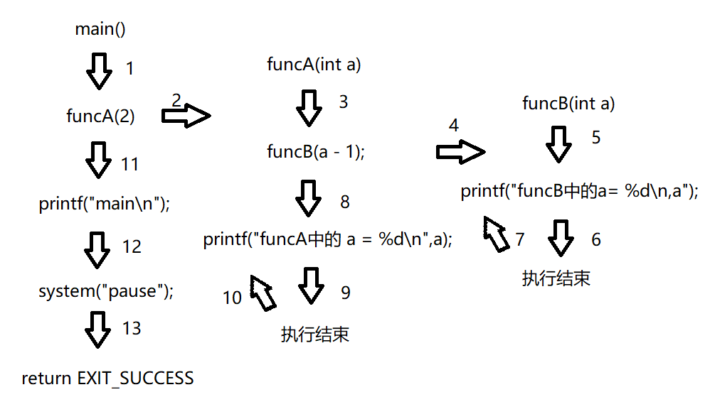

<!DOCTYPE html>
<html lang="zh-CN">
<head><meta name="generator" content="Hexo 3.9.0">
  <meta charset="utf-8">
  <meta content="width=device-width, initial-scale=1.0, maximum-scale=1.0, user-scalable=0" name="viewport">
  
  <title itemprop="name">C语言提高 | APingStudio</title>
  
    <link rel="shortcut icon" href="/images/img1.png">
  
  <meta http-equiv="x-dns-prefetch-control" content="on">
  <link rel="stylesheet" href="https://fonts.googleapis.com/css?family=Noto+SerifMerriweather|Merriweather+Sans|Source+Code+Pro|Ubuntu:400,700|Noto+Serif+SC" media="all">
  <link rel="dns-prefetch" href="//cdn.jsdelivr.net">
  <link rel="stylesheet" id="saukra_css-css" href="/css/style.css" type="text/css" media="all">
  <link rel="stylesheet" href="/css/lib.min.css" media="all">
  <link rel="stylesheet" href="/css/font.css" media="all">
  <link rel="stylesheet" href="/css/insight.css" media="all">
  <link rel="stylesheet" href="/css/jquery.fancybox.min.css" media="all">
  <link rel="stylesheet" href="/css/zoom.css" media="all">
  <link rel="stylesheet" type="text/css" href="/css/sharejs.css">
<!--   <link rel="stylesheet" id="saukra_css-css" href="https://2heng.xin/wp-content/cache/autoptimize/css/autoptimize_ad42a61f4c7d4bdd9f91afcff6b5dda5.css
" type="text/css" media="all"> -->
  <script>
  /*Initial Variables*/
  var mashiro_option = new Object();
  var mashiro_global = new Object();
  mashiro_option.NProgressON = true;
  /* 
   * 邮箱信息之类的东西可以填在这里，这些js变量基本都作用于sakura-app.js
   * 这样的设置仅是为了方便在基于PHP开发的主题中设置js变量，既然移植到了Node上，我想或许可以精简这一逻辑吧
   */
  mashiro_option.email_domain = "";
  mashiro_option.email_name = "";
  mashiro_option.cookie_version_control = "";
  mashiro_option.qzone_autocomplete = false;
  mashiro_option.site_name = "一咻工作室APingStudio";
  mashiro_option.author_name = "APingStudio";
  mashiro_option.site_url = "https://space.bilibili.com/331466888";
  mashiro_option.v_appId = "DdsMXpMXVU9txs2JImBoeySP-gzGzoHsz";
  mashiro_option.v_appKey = "Lwl1hTpDKgcYhvil6DWs7zoY";
  mashiro_option.mathjax = "1";
  mashiro_option.qq_api_url = "https://api.mashiro.top/qqinfo/"; 
  mashiro_option.qq_avatar_api_url = "https://api.mashiro.top/qqinfo/";

  // mashiro_option.jsdelivr_css_src = "https://cdn.jsdelivr.net/gh/moezx/cdn@3.4.5/css/lib.min.css";
  // mashiro_option.float_player_on = true;

  /*End of Initial Variables*/
  </script>
  <script type="text/javascript">
  var bg = "https://i.loli.net/2021/02/11/dFGIORg7k5VX9ha.jpg,https://i.loli.net/2021/02/11/x7ietRWXqHjLDy5.jpg,https://i.loli.net/2021/02/11/FgY4QpaLNSuvKce.jpg,https://i.loli.net/2021/02/11/32ZJYQhuV19sfgF.jpg,https://i.loli.net/2021/02/11/t2uDVHCXspacGgd.jpg".split(",");
  var bgindex = Math.floor(Math.random()*bg.length);
  if (!!window.ActiveXObject || "ActiveXObject" in window) { //is IE?
    alert('朋友，IE浏览器未适配哦~');
  }
  </script>
  <style type="text/css">
  .hljs-ln{border-collapse:collapse}.hljs-ln td{padding:0}.hljs-ln-n:before{content:attr(data-line-number)}
  </style>
  <style type="text/css">.site-top .lower nav{display:block !important;}.author-profile i,.post-like a,.post-share .show-share,.sub-text,.we-info a,span.sitename,.post-more i:hover,#pagination a:hover,.post-content a:hover,.float-content i:hover{color:#FE9600}.feature i,.download,.navigator i:hover,.links ul li:before,.ar-time i,span.ar-circle,.object,.comment .comment-reply-link,.siren-checkbox-radio:checked + .siren-checkbox-radioInput:after{background:#FE9600}::-webkit-scrollbar-thumb{background:#FE9600}.download,.navigator i:hover,.link-title,.links ul li:hover,#pagination a:hover,.comment-respond input[type='submit']:hover{border-color:#FE9600}.entry-content a:hover,.site-info a:hover,.comment h4 a,#comments-navi a.prev,#comments-navi a.next,.comment h4 a:hover,.site-top ul li a:hover,.entry-title a:hover,#archives-temp h3,span.page-numbers.current,.sorry li a:hover,.site-title a:hover,i.iconfont.js-toggle-search.iconsearch:hover,.comment-respond input[type='submit']:hover{color:#FE9600}.comments .comments-main{display:block !important;}.comments .comments-hidden{display:none !important;}background-position:center center;background-attachment:inherit;}
  </style>
</head>
</html>
<body class="page-template page-template-user page-template-page-analytics page-template-userpage-analytics-php page page-id-1297 chinese-font serif isWebKit">
  <div class="scrollbar" id="bar">
  </div>
  <a href="#" class="cd-top faa-float animated"></a>
  <section id="main-container">
    <div class="headertop filter-grid">
  <div id="banner_wave_1"></div>
  <div id="banner_wave_2"></div>
  <figure id="centerbg" class="centerbg">
    <div class="focusinfo no-select">
      <div class="header-tou">
        <a href="https://space.bilibili.com/331466888">
          
        </a>
      </div>
      <div class="header-info">
        <p>Live your life with passion! With some drive!</p>
        <div class="top-social_v2">
          <li id="bg-pre">
            
          </li>
          
            
              
                <li>
                  <a href="https://github.com/nerdsman" target="_blank" class="social-github" title="github">
                    
                  </a>
                </li>
              
            
              
                <li>
                  <a href="https://www.zhihu.com/people/lu-tao-85-50" target="_blank" class="social-github" title="zhihu">
                    
                  </a>
                </li>
              
            
              
                <li class="wechat">
                  <a href="/#">
                    
                  </a>
                  <div class="wechatInner">
                    
                  </div>
                </li>
              
            
          
          <li id="bg-next">
            
          </li>
        </div>
      </div>
    </div>
  </figure>
  <div id="video-container" style="">
    <video style="object-fit: fill" id="bgvideo" class="video" video-name="" src="" width="auto" preload="auto">
    </video>
    <div id="video-btn" class="loadvideo videolive">
    </div>
    <div id="video-add">
    </div>
    <div class="video-stu">
    </div>
  </div>
  <div class="headertop-down faa-float animated" onclick="headertop_down()">
    <span>
      <i class="fa fa-chevron-down" aria-hidden="true">
      </i>
    </span>
  </div>
</div>
    <div id="page" class="site wrapper">
      <header class="site-header no-select gizle sabit" role="banner">
  <div class="site-top">
    <div class="site-branding">
      <span class="site-title">
        <span class="logolink moe-mashiro">
          <a href="/">
            <span class="sakurasono">一咻工作室</span>
            <span class="shironeko">APingStudio</span>
          </a>
        </span>
      </span>
    </div>
    <div class="searchbox search-form-submit">
      <i class="iconfont js-toggle-search iconsearch icon-search">
      </i>
    </div>
    <div id="show-nav" class="showNav mobile-fit">
      <div class="line line1">
      </div>
      <div class="line line2">
      </div>
      <div class="line line3">
      </div>
    </div>
    <div class="lower-cantiner">
      <div class="lower">
        <nav class="mobile-fit-control hide">
          <ul id="menu-new" class="menu">
            
              <li>
                <a href="/">
                  <span class="faa-parent animated-hover">
                    <i class="fa  fa-fort-awesome faa-shake" aria-hidden="true"></i>
                    首页
                  </span>
                </a>
                
              </li>
            
              <li>
                <a href="/archives">
                  <span class="faa-parent animated-hover">
                    <i class="fa  fa-archive faa-shake" aria-hidden="true"></i>
                    归档
                  </span>
                </a>
                
                  <ul class="sub-menu">
                    
                      <li>
                        <a href="/categories/技术/">
                          <i class="fa fa-code" aria-hidden="true"></i>
                          技术
                        </a>
                      </li>
                    
                      <li>
                        <a href="/categories/生活/">
                          <i class="fa fa-file-text-o" aria-hidden="true"></i>
                          生活
                        </a>
                      </li>
                    
                      <li>
                        <a href="/materials/">
                          <i class="fa fa-cloud-download" aria-hidden="true"></i>
                          资源
                        </a>
                      </li>
                    
                      <li>
                        <a href="/categories/随想/">
                          <i class="fa fa-commenting-o" aria-hidden="true"></i>
                          随想
                        </a>
                      </li>
                    
                      <li>
                        <a href="/categories/转载/">
                          <i class="fa fa-book" aria-hidden="true"></i>
                          转载
                        </a>
                      </li>
                    
                  </ul>
                
              </li>
            
              <li>
                <a href="javascript:;">
                  <span class="faa-parent animated-hover">
                    <i class="fa  fa-list-ul faa-vertical" aria-hidden="true"></i>
                    清单
                  </span>
                </a>
                
                  <ul class="sub-menu">
                    
                      <li>
                        <a href="/tags/悦读/">
                          <i class="fa fa-th-list faa-bounce" aria-hidden="true"></i>
                          书单
                        </a>
                      </li>
                    
                      <li>
                        <a href="/bangumi/">
                          <i class="fa fa-film faa-vertical" aria-hidden="true"></i>
                          番组
                        </a>
                      </li>
                    
                      <li>
                        <a href="/music/">
                          <i class="fa fa-headphones" aria-hidden="true"></i>
                          歌单
                        </a>
                      </li>
                    
                      <li>
                        <a href="/tags/图集/">
                          <i class="fa fa-photo" aria-hidden="true"></i>
                          图集
                        </a>
                      </li>
                    
                  </ul>
                
              </li>
            
              <li>
                <a href="/comment/">
                  <span class="faa-parent animated-hover">
                    <i class="fa  fa-pencil-square-o faa-tada" aria-hidden="true"></i>
                    留言板
                  </span>
                </a>
                
              </li>
            
              <li>
                <a href="/links/">
                  <span class="faa-parent animated-hover">
                    <i class="fa  fa-link faa-shake" aria-hidden="true"></i>
                    友人帐
                  </span>
                </a>
                
              </li>
            
              <li>
                <a href="/donate/">
                  <span class="faa-parent animated-hover">
                    <i class="fa  fa-heart faa-pulse" aria-hidden="true"></i>
                    赞赏
                  </span>
                </a>
                
              </li>
            
              <li>
                <a href="/">
                  <span class="faa-parent animated-hover">
                    <i class="fa  fa-leaf faa-wrench" aria-hidden="true"></i>
                    关于
                  </span>
                </a>
                
                  <ul class="sub-menu">
                    
                      <li>
                        <a href="/about/">
                          <i class="fa fa-meetup" aria-hidden="true"></i>
                          我？
                        </a>
                      </li>
                    
                      <li>
                        <a href="/theme-sakura/">
                          <i class="fa iconfont icon-sakura" aria-hidden="true"></i>
                          主题
                        </a>
                      </li>
                    
                      <li>
                        <a href="/lab/">
                          <i class="fa fa-cogs" aria-hidden="true"></i>
                          Lab
                        </a>
                      </li>
                    
                  </ul>
                
              </li>
            
          </ul>
        </nav>
      </div>
    </div>
  </div>
</header>

      <link rel="stylesheet" type="text/css" href="/css/sharejs.css">
<link rel="stylesheet" href="https://cdnjs.cloudflare.com/ajax/libs/tocbot/4.4.2/tocbot.css">
<div class="pattern-center-blank"></div>

<div id="content" class="site-content">
  <div id="primary" class="content-area">
    <main id="main" class="site-main" role="main">
      <article id="post-1" class="post-1 post type-post status-publish format-standard has-post-thumbnail hentry category-uncategorized">
        <div class="toc"></div>
        <!--<div class="toc-entry-content"><!-- 套嵌目录使用（主要为了支援评论）-->
        
          <header class="entry-header">
            <h1 class="entry-title">C语言提高</h1>
            <p class="entry-census">&nbsp;·&nbsp;2021-2-3&nbsp;·&nbsp;<span id="busuanzi_value_page_pv"></span>次阅读</p></p>

            <hr>
          </header>
        
        <div class="entry-content">
          <h2 id="C核心编程"><a href="#C核心编程" class="headerlink" title="C核心编程"></a>C核心编程</h2><h2 id="1-前言"><a href="#1-前言" class="headerlink" title="1  前言"></a>1  前言</h2><h3 id="1-1-听课要求"><a href="#1-1-听课要求" class="headerlink" title="1.1 听课要求"></a>1.1 听课要求</h3><ul>
<li>专心听讲、积极思考；</li>
<li>遇到不懂的暂时先记下，课后再问；</li>
<li>准备一个笔记本，或者笔记软件（记事本、word、typroa、印象笔记等）</li>
<li>敲代码的时候一定要动手去干，不动手，永远学不会；</li>
<li>杜绝边听边敲、杜绝犯困听课。</li>
<li>如果时间允许，请课前做好预习；</li>
<li>尽量少回看视频，别对视频产生依赖，可以用2倍速度回看视频；</li>
<li>按时完成老师布置的练习，根据自己的理解总结学到的知识点；</li>
<li>初学者 应该抓住重点，不要钻牛角尖遇到问题了，优先自己尝试解决，其次谷歌百度，最后再问老师；</li>
<li>如果时间允许，可以多去网上找对应阶段的学习资料面试题，</li>
<li>注意作息，注意劳逸结合，积极锻炼。</li>
</ul>
<h3 id="1-2-技术层次"><a href="#1-2-技术层次" class="headerlink" title="1.2 技术层次"></a>1.2 技术层次</h3><table>
<thead>
<tr>
<th>基础</th>
<th>提高</th>
<th>实践</th>
</tr>
</thead>
<tbody>
<tr>
<td>C提高</td>
<td>Qt界面编程</td>
<td>项目1</td>
</tr>
<tr>
<td>数据结构</td>
<td>Linux编程</td>
<td>项目2</td>
</tr>
<tr>
<td>C++</td>
<td>数据库编程</td>
<td>项目3</td>
</tr>
</tbody>
</table>
<h2 id="2-内存分区"><a href="#2-内存分区" class="headerlink" title="2 内存分区"></a>2 内存分区</h2><h3 id="2-1-内存区域"><a href="#2-1-内存区域" class="headerlink" title="2.1 内存区域"></a>2.1 内存区域</h3><p>C/C++编译的程序占用的内存分为以下几个区域</p>
<ul>
<li>代码区</li>
<li>全局区/静态区</li>
<li>栈区</li>
<li>堆区</li>
</ul>
<p><strong>划分：</strong> </p>
<p>​    程序运行前： 代码区、全局区/静态区</p>
<p>​    程序运行后：栈区、堆区</p>
<h3 id="2-2-内存四区"><a href="#2-2-内存四区" class="headerlink" title="2.2  内存四区"></a>2.2  内存四区</h3><h4 id="2-2-1-代码区"><a href="#2-2-1-代码区" class="headerlink" title="2.2.1  代码区"></a>2.2.1  代码区</h4><p><strong>作用：</strong>存放CPU执行的二进制机器指令</p>
<p><strong>特点：</strong> </p>
<ol>
<li>只读</li>
<li>共享</li>
</ol>
<h4 id="2-2-2-栈区"><a href="#2-2-2-栈区" class="headerlink" title="2.2.2 栈区"></a>2.2.2 栈区</h4><p><strong>特点：</strong></p>
<ul>
<li>栈是一种先进后出的内存结构，由编译器自动分配释放数据。</li>
<li>主要存放函数的形式参数值、局部变量等。</li>
<li>函数运行结束，相应栈变量会被自动释放</li>
<li>栈空间较小，不适合将大量数据存放在栈中</li>
</ul>
<p><strong>总结：</strong></p>
<p>管理方式：编译器自动管理该区内存。<br>空间大小：提前规定、较小。<br>生命周期：函数使用完毕立即释放。</p>
<p><strong>注意事项：</strong></p>
<ul>
<li>不要返回局部变量的地址</li>
</ul>
<figure class="highlight c"><table><tr><td class="gutter"><pre><span class="line">1</span><br><span class="line">2</span><br><span class="line">3</span><br><span class="line">4</span><br><span class="line">5</span><br><span class="line">6</span><br><span class="line">7</span><br><span class="line">8</span><br><span class="line">9</span><br><span class="line">10</span><br><span class="line">11</span><br><span class="line">12</span><br><span class="line">13</span><br><span class="line">14</span><br><span class="line">15</span><br></pre></td><td class="code"><pre><span class="line"><span class="comment">//栈区上开辟的数据由系统进行管理，不需要程序员管理开辟和释放</span></span><br><span class="line"><span class="function"><span class="keyword">int</span> * <span class="title">func</span><span class="params">()</span></span></span><br><span class="line"><span class="function"></span>&#123;</span><br><span class="line">	<span class="keyword">int</span> a = <span class="number">10</span>;</span><br><span class="line">	<span class="keyword">return</span> &amp;a;</span><br><span class="line">&#125;</span><br><span class="line"><span class="comment">//不管结果是否正确，这个值已经被释放了，不可以操作一块非法的内存空间</span></span><br><span class="line"><span class="function"><span class="keyword">void</span> <span class="title">test01</span><span class="params">()</span></span></span><br><span class="line"><span class="function"></span>&#123;</span><br><span class="line">	<span class="keyword">int</span> * p = func();</span><br><span class="line"></span><br><span class="line">	<span class="built_in">printf</span>(<span class="string">"a = %d\n"</span>, *p);</span><br><span class="line">	<span class="built_in">printf</span>(<span class="string">"a = %d\n"</span>, *p); </span><br><span class="line"></span><br><span class="line">&#125;</span><br></pre></td></tr></table></figure>
<figure class="highlight c"><table><tr><td class="gutter"><pre><span class="line">1</span><br><span class="line">2</span><br><span class="line">3</span><br><span class="line">4</span><br><span class="line">5</span><br><span class="line">6</span><br><span class="line">7</span><br><span class="line">8</span><br><span class="line">9</span><br><span class="line">10</span><br><span class="line">11</span><br><span class="line">12</span><br><span class="line">13</span><br></pre></td><td class="code"><pre><span class="line"><span class="function"><span class="keyword">char</span> * <span class="title">getString</span><span class="params">()</span></span></span><br><span class="line"><span class="function"></span>&#123;</span><br><span class="line">	<span class="keyword">char</span> str[] = <span class="string">"hello world"</span>;</span><br><span class="line">	<span class="keyword">return</span> str;</span><br><span class="line">&#125;</span><br><span class="line"></span><br><span class="line"><span class="function"><span class="keyword">void</span> <span class="title">test02</span><span class="params">()</span></span></span><br><span class="line"><span class="function"></span>&#123;</span><br><span class="line">	<span class="keyword">char</span> * p = <span class="literal">NULL</span>;</span><br><span class="line">	p = getString();</span><br><span class="line"></span><br><span class="line">	<span class="built_in">printf</span>(<span class="string">"p = %s\n"</span>, p);</span><br><span class="line">&#125;</span><br></pre></td></tr></table></figure>
<h4 id="2-2-3-堆区"><a href="#2-2-3-堆区" class="headerlink" title="2.2.3 堆区"></a>2.2.3 堆区</h4><h5 id="2-2-3-1-堆区基本概念"><a href="#2-2-3-1-堆区基本概念" class="headerlink" title="2.2.3.1 堆区基本概念"></a>2.2.3.1 堆区基本概念</h5><p><strong>特点：</strong></p>
<ul>
<li>堆区由开发人员手动申请和释放，在释放之前，该块堆空间可一直使用。</li>
<li>由程序员分配和释放，若程序员不释放，程序结束时由系统回收内存。</li>
<li>堆空间一般没有软限制，只受限于硬件。会比栈空间更大，适宜存放较大数据。</li>
</ul>
<p><strong>总结：</strong></p>
<p>管理方式：开发人员手动申请和释放。<br>空间大小：较大。<br>生命周期：手动释放之前一直存在，或程序结束由系统回收。</p>
<p><strong>堆区使用：</strong></p>
<figure class="highlight c"><table><tr><td class="gutter"><pre><span class="line">1</span><br><span class="line">2</span><br><span class="line">3</span><br><span class="line">4</span><br><span class="line">5</span><br><span class="line">6</span><br><span class="line">7</span><br><span class="line">8</span><br><span class="line">9</span><br><span class="line">10</span><br><span class="line">11</span><br><span class="line">12</span><br><span class="line">13</span><br><span class="line">14</span><br><span class="line">15</span><br><span class="line">16</span><br><span class="line">17</span><br><span class="line">18</span><br><span class="line">19</span><br><span class="line">20</span><br><span class="line">21</span><br><span class="line">22</span><br><span class="line">23</span><br><span class="line">24</span><br><span class="line">25</span><br></pre></td><td class="code"><pre><span class="line"><span class="function"><span class="keyword">int</span> * <span class="title">getSpace</span><span class="params">()</span></span></span><br><span class="line"><span class="function"></span>&#123;</span><br><span class="line">	<span class="keyword">int</span> * p =  <span class="built_in">malloc</span>(<span class="keyword">sizeof</span>(<span class="keyword">int</span>)* <span class="number">5</span>);</span><br><span class="line">	<span class="keyword">if</span> (p == <span class="literal">NULL</span>)</span><br><span class="line">	&#123;</span><br><span class="line">		<span class="keyword">return</span>;</span><br><span class="line">	&#125;</span><br><span class="line">	<span class="keyword">for</span> (<span class="keyword">int</span> i = <span class="number">0</span>; i &lt; <span class="number">5</span>;i++)</span><br><span class="line">	&#123;</span><br><span class="line">		p[i] = i + <span class="number">100</span>; <span class="comment">//所有在连续空间上开辟的数据，都可以利用下标进行索引</span></span><br><span class="line">	&#125;</span><br><span class="line">	<span class="keyword">return</span> p;</span><br><span class="line">&#125;</span><br><span class="line"></span><br><span class="line"><span class="function"><span class="keyword">void</span> <span class="title">test01</span><span class="params">()</span></span></span><br><span class="line"><span class="function"></span>&#123;</span><br><span class="line">	<span class="keyword">int</span> * p = getSpace();</span><br><span class="line">	<span class="keyword">for</span> (<span class="keyword">int</span> i = <span class="number">0</span>; i &lt; <span class="number">5</span>;i++)</span><br><span class="line">	&#123;</span><br><span class="line">		<span class="built_in">printf</span>(<span class="string">"%d\n"</span>, p[i]);</span><br><span class="line">	&#125;</span><br><span class="line">	<span class="comment">//堆区的数据  自己开辟，自己管理释放</span></span><br><span class="line">	<span class="built_in">free</span>(p);</span><br><span class="line">	p = <span class="literal">NULL</span>;</span><br><span class="line">&#125;</span><br></pre></td></tr></table></figure>
<h5 id="2-2-3-2-堆区注意事项"><a href="#2-2-3-2-堆区注意事项" class="headerlink" title="2.2.3.2 堆区注意事项"></a>2.2.3.2 堆区注意事项</h5><p><strong>注意事项：</strong></p>
<p>主调函数中没有给指针分配内存，被调函数需要利用高级指针进行分屏</p>
<p>分析以下代码运行的结果</p>
<figure class="highlight c"><table><tr><td class="gutter"><pre><span class="line">1</span><br><span class="line">2</span><br><span class="line">3</span><br><span class="line">4</span><br><span class="line">5</span><br><span class="line">6</span><br><span class="line">7</span><br><span class="line">8</span><br><span class="line">9</span><br><span class="line">10</span><br><span class="line">11</span><br><span class="line">12</span><br><span class="line">13</span><br><span class="line">14</span><br></pre></td><td class="code"><pre><span class="line"><span class="function"><span class="keyword">void</span> <span class="title">allocateSpace</span><span class="params">(<span class="keyword">char</span> * pp)</span></span></span><br><span class="line"><span class="function"></span>&#123;</span><br><span class="line">	<span class="keyword">char</span> * temp = <span class="built_in">malloc</span>(<span class="number">100</span>);</span><br><span class="line">	<span class="built_in">memset</span>(temp, <span class="number">0</span>, <span class="number">100</span>);</span><br><span class="line">	<span class="built_in">strcpy</span>(temp, <span class="string">"hello world"</span>);</span><br><span class="line">	pp = temp;</span><br><span class="line">&#125;</span><br><span class="line"></span><br><span class="line"><span class="function"><span class="keyword">void</span> <span class="title">test02</span><span class="params">()</span></span></span><br><span class="line"><span class="function"></span>&#123;</span><br><span class="line">	<span class="keyword">char</span> * p = <span class="literal">NULL</span>;</span><br><span class="line">	allocateSpace(p);</span><br><span class="line">	<span class="built_in">printf</span>(<span class="string">"%s\n"</span>, p);</span><br><span class="line">&#125;</span><br></pre></td></tr></table></figure>
<p><strong>解决方式1</strong></p>
<figure class="highlight c"><table><tr><td class="gutter"><pre><span class="line">1</span><br><span class="line">2</span><br><span class="line">3</span><br><span class="line">4</span><br><span class="line">5</span><br><span class="line">6</span><br><span class="line">7</span><br><span class="line">8</span><br><span class="line">9</span><br><span class="line">10</span><br><span class="line">11</span><br><span class="line">12</span><br><span class="line">13</span><br><span class="line">14</span><br><span class="line">15</span><br><span class="line">16</span><br></pre></td><td class="code"><pre><span class="line"><span class="comment">//利用高级指针</span></span><br><span class="line"><span class="function"><span class="keyword">void</span> <span class="title">allocateSpac2</span><span class="params">(<span class="keyword">char</span> ** pp)</span></span></span><br><span class="line"><span class="function"></span>&#123;</span><br><span class="line">	<span class="keyword">char</span> * temp = <span class="built_in">malloc</span>(<span class="number">100</span>);</span><br><span class="line">	<span class="built_in">memset</span>(temp, <span class="number">0</span>, <span class="number">100</span>);</span><br><span class="line">	<span class="built_in">strcpy</span>(temp, <span class="string">"hello world"</span>);</span><br><span class="line">	*pp = temp;</span><br><span class="line">	<span class="built_in">printf</span>(<span class="string">"aaa%s\n"</span>, *pp);</span><br><span class="line">&#125;</span><br><span class="line"></span><br><span class="line"><span class="function"><span class="keyword">void</span> <span class="title">test03</span><span class="params">()</span></span></span><br><span class="line"><span class="function"></span>&#123;</span><br><span class="line">	<span class="keyword">char</span> * p = <span class="literal">NULL</span>;</span><br><span class="line">	allocateSpac2(&amp;p);</span><br><span class="line">	<span class="built_in">printf</span>(<span class="string">"%s\n"</span>, p);</span><br><span class="line">&#125;</span><br></pre></td></tr></table></figure>
<p><strong>解决方式2</strong></p>
<figure class="highlight c"><table><tr><td class="gutter"><pre><span class="line">1</span><br><span class="line">2</span><br><span class="line">3</span><br><span class="line">4</span><br><span class="line">5</span><br><span class="line">6</span><br><span class="line">7</span><br><span class="line">8</span><br><span class="line">9</span><br><span class="line">10</span><br><span class="line">11</span><br><span class="line">12</span><br><span class="line">13</span><br><span class="line">14</span><br><span class="line">15</span><br></pre></td><td class="code"><pre><span class="line"><span class="comment">//利用返回值</span></span><br><span class="line"><span class="function"><span class="keyword">char</span>* <span class="title">allocateSpace3</span><span class="params">()</span></span></span><br><span class="line"><span class="function"></span>&#123;</span><br><span class="line">	<span class="keyword">char</span> *temp = <span class="built_in">malloc</span>(<span class="number">100</span>);</span><br><span class="line">	<span class="built_in">memset</span>(temp, <span class="number">0</span>, <span class="number">100</span>);</span><br><span class="line"></span><br><span class="line">	<span class="built_in">strcpy</span>(temp, <span class="string">"hello world"</span>);</span><br><span class="line">	<span class="keyword">return</span> temp;</span><br><span class="line">&#125;</span><br><span class="line"><span class="function"><span class="keyword">void</span> <span class="title">test04</span><span class="params">()</span></span></span><br><span class="line"><span class="function"></span>&#123;</span><br><span class="line">	<span class="keyword">char</span> *p = <span class="literal">NULL</span>;</span><br><span class="line">	p = allocateSpace3();</span><br><span class="line">	<span class="built_in">printf</span>(<span class="string">"%s\n"</span>, p);</span><br><span class="line">&#125;</span><br></pre></td></tr></table></figure>
<h5 id="2-2-3-3-calloc和realloc"><a href="#2-2-3-3-calloc和realloc" class="headerlink" title="2.2.3.3 calloc和realloc"></a>2.2.3.3 calloc和realloc</h5><p>内存申请我们可使用三个函数来完成，分别为：malloc、calloc、realloc，内存释放我们只需要使用 free 函数。 </p>
<ol>
<li>malloc 函数:<br>原型：<code>void *malloc(unsigned int num_bytes)</code><br>用法：分配长度为 num_bytes 字节的内存块。<br>说明：如果分配成功则返回指向被分配内存的指针，否则返回 NULL。</li>
<li>calloc 函数:<br>原型：<code>void *calloc(int num_elems, int elem_size)</code><br>用法：为具有 num_elems 个长度为 elem_size 元素的数组分配内存。<br>说明：如果分配成功则返回指向被分配内存的指针，否则返回 NULL。</li>
<li>realloc 函数:<br>原型：<code>void *realloc(void *mem_address, unsigned int newsize)</code><br>作用：改变 mem_address 所指内存区域的大小为 newsize 长度。<br>说明：如果重新分配成功则返回指向被分配内存的指针，否则返回 NULL。</li>
<li>free 函数:<br>原型：<code>void free(void *p);</code><br>作用：释放指针 p 所指向的的内存空间。<br>说明：p所指向的内存空间必须是用 calloc,malloc,realloc 所分配的内存。如果 p 为 NULL则不做任何操作。</li>
</ol>
<p><strong>calloc案例：</strong></p>
<figure class="highlight c"><table><tr><td class="gutter"><pre><span class="line">1</span><br><span class="line">2</span><br><span class="line">3</span><br><span class="line">4</span><br><span class="line">5</span><br><span class="line">6</span><br><span class="line">7</span><br><span class="line">8</span><br><span class="line">9</span><br><span class="line">10</span><br><span class="line">11</span><br><span class="line">12</span><br><span class="line">13</span><br><span class="line">14</span><br><span class="line">15</span><br><span class="line">16</span><br><span class="line">17</span><br><span class="line">18</span><br></pre></td><td class="code"><pre><span class="line"><span class="comment">//1. calloc</span></span><br><span class="line"><span class="function"><span class="keyword">void</span> <span class="title">test01</span><span class="params">()</span></span></span><br><span class="line"><span class="function"></span>&#123;</span><br><span class="line">	<span class="keyword">int</span> *p =  <span class="built_in">calloc</span>(<span class="number">10</span>,<span class="keyword">sizeof</span>(<span class="keyword">int</span>));  </span><br><span class="line">	<span class="keyword">for</span> (<span class="keyword">int</span> i = <span class="number">0</span>; i &lt; <span class="number">10</span>; ++i)</span><br><span class="line">	&#123;</span><br><span class="line">		p[i] = i + <span class="number">1</span>;</span><br><span class="line">	&#125;</span><br><span class="line">	<span class="keyword">for</span> (<span class="keyword">int</span> i = <span class="number">0</span>; i &lt; <span class="number">10</span>; ++i)</span><br><span class="line">	&#123;</span><br><span class="line">		<span class="built_in">printf</span>(<span class="string">"%d\n"</span>, p[i]);</span><br><span class="line">	&#125;</span><br><span class="line">	<span class="keyword">if</span> (p != <span class="literal">NULL</span>)</span><br><span class="line">	&#123;</span><br><span class="line">		<span class="built_in">free</span>(p);</span><br><span class="line">		p = <span class="literal">NULL</span>;</span><br><span class="line">	&#125;</span><br><span class="line">&#125;</span><br></pre></td></tr></table></figure>
<p><strong>realloc案例：</strong></p>
<figure class="highlight c"><table><tr><td class="gutter"><pre><span class="line">1</span><br><span class="line">2</span><br><span class="line">3</span><br><span class="line">4</span><br><span class="line">5</span><br><span class="line">6</span><br><span class="line">7</span><br><span class="line">8</span><br><span class="line">9</span><br><span class="line">10</span><br><span class="line">11</span><br><span class="line">12</span><br><span class="line">13</span><br><span class="line">14</span><br><span class="line">15</span><br><span class="line">16</span><br><span class="line">17</span><br><span class="line">18</span><br><span class="line">19</span><br><span class="line">20</span><br><span class="line">21</span><br></pre></td><td class="code"><pre><span class="line"><span class="function"><span class="keyword">void</span> <span class="title">test02</span><span class="params">()</span></span></span><br><span class="line"><span class="function"></span>&#123;</span><br><span class="line">	<span class="keyword">int</span> *p = <span class="built_in">malloc</span>(<span class="keyword">sizeof</span>(<span class="keyword">int</span>)* <span class="number">10</span>);</span><br><span class="line">	<span class="keyword">for</span> (<span class="keyword">int</span> i = <span class="number">0</span>; i &lt; <span class="number">10</span>; ++i)</span><br><span class="line">	&#123;</span><br><span class="line">		p[i] = i + <span class="number">1</span>;</span><br><span class="line">	&#125;</span><br><span class="line">	<span class="keyword">for</span> (<span class="keyword">int</span> i = <span class="number">0</span>; i &lt; <span class="number">10</span>; ++i)</span><br><span class="line">	&#123;</span><br><span class="line">		<span class="built_in">printf</span>(<span class="string">"%d "</span>, p[i]);</span><br><span class="line">	&#125;</span><br><span class="line">	<span class="built_in">printf</span>(<span class="string">"%d\n"</span>, p);</span><br><span class="line">    </span><br><span class="line">	p = <span class="built_in">realloc</span>(p, <span class="keyword">sizeof</span>(<span class="keyword">int</span>)* <span class="number">200</span>);   </span><br><span class="line">	<span class="built_in">printf</span>(<span class="string">"%d\n"</span>,p);</span><br><span class="line"></span><br><span class="line">	<span class="keyword">for</span> (<span class="keyword">int</span> i = <span class="number">0</span>; i &lt; <span class="number">15</span>; ++i)</span><br><span class="line">	&#123;</span><br><span class="line">		<span class="built_in">printf</span>(<span class="string">"%d "</span>, p[i]);</span><br><span class="line">	&#125;</span><br><span class="line">&#125;</span><br></pre></td></tr></table></figure>
<h4 id="2-2-4-全局-静态区"><a href="#2-2-4-全局-静态区" class="headerlink" title="2.2.4 全局/静态区"></a>2.2.4 全局/静态区</h4><h5 id="2-2-4-1-基本概念"><a href="#2-2-4-1-基本概念" class="headerlink" title="2.2.4.1 基本概念"></a>2.2.4.1 基本概念</h5><p><strong>特点：</strong></p>
<ul>
<li>全局/静态区存储<strong>全局变量、静态变量、常量</strong>，该区变量在程序运行期间一直存在</li>
<li>程序结束由系统回收。</li>
<li>已初始化的数据放在data段，未初始化的数据放到bss段</li>
<li>该区变量当未初始化时，会有有默认值初始化。</li>
</ul>
<p><strong>总结：</strong></p>
<p>管理方式：编译器自动管理该区内存。<br>生命周期：程序结束释放。</p>
<h5 id="2-2-4-2-全局变量"><a href="#2-2-4-2-全局变量" class="headerlink" title="2.2.4.2 全局变量"></a>2.2.4.2 全局变量</h5><figure class="highlight c"><table><tr><td class="gutter"><pre><span class="line">1</span><br><span class="line">2</span><br><span class="line">3</span><br><span class="line">4</span><br><span class="line">5</span><br><span class="line">6</span><br><span class="line">7</span><br><span class="line">8</span><br></pre></td><td class="code"><pre><span class="line"><span class="comment">//其他文件中声明第二行代码</span></span><br><span class="line"><span class="keyword">extern</span> <span class="keyword">int</span> g_a = <span class="number">10</span>; <span class="comment">//c语言中 默认全局变量前 加了关键字 extern</span></span><br><span class="line"></span><br><span class="line"><span class="function"><span class="keyword">void</span> <span class="title">test01</span><span class="params">()</span></span></span><br><span class="line"><span class="function"></span>&#123;</span><br><span class="line">	<span class="keyword">extern</span> <span class="keyword">int</span> g_a;</span><br><span class="line">	<span class="built_in">printf</span>(<span class="string">"g_a = %d\n"</span>, g_a);</span><br><span class="line">&#125;</span><br></pre></td></tr></table></figure>
<figure class="highlight c"><table><tr><td class="gutter"><pre><span class="line">1</span><br><span class="line">2</span><br><span class="line">3</span><br><span class="line">4</span><br><span class="line">5</span><br></pre></td><td class="code"><pre><span class="line"><span class="keyword">extern</span> <span class="keyword">int</span> g_b;</span><br><span class="line"><span class="function"><span class="keyword">void</span> <span class="title">test02</span><span class="params">()</span></span></span><br><span class="line"><span class="function"></span>&#123;</span><br><span class="line">	<span class="built_in">printf</span>(<span class="string">"g_b = %d\n"</span>, g_b);</span><br><span class="line">&#125;</span><br></pre></td></tr></table></figure>
<h5 id="2-2-4-3-静态变量"><a href="#2-2-4-3-静态变量" class="headerlink" title="2.2.4.3 静态变量"></a>2.2.4.3 静态变量</h5><figure class="highlight c"><table><tr><td class="gutter"><pre><span class="line">1</span><br><span class="line">2</span><br><span class="line">3</span><br><span class="line">4</span><br><span class="line">5</span><br><span class="line">6</span><br><span class="line">7</span><br><span class="line">8</span><br><span class="line">9</span><br><span class="line">10</span><br><span class="line">11</span><br><span class="line">12</span><br><span class="line">13</span><br></pre></td><td class="code"><pre><span class="line"><span class="function"><span class="keyword">void</span> <span class="title">func</span><span class="params">()</span></span></span><br><span class="line"><span class="function"></span>&#123;</span><br><span class="line">	<span class="keyword">static</span> <span class="keyword">int</span> s_a = <span class="number">10</span>; <span class="comment">//静态变量只初始化一次</span></span><br><span class="line">	s_a++;</span><br><span class="line">	<span class="built_in">printf</span>(<span class="string">"%d\n"</span>, s_a);</span><br><span class="line">&#125;</span><br><span class="line"></span><br><span class="line"><span class="function"><span class="keyword">void</span> <span class="title">test03</span><span class="params">()</span></span></span><br><span class="line"><span class="function"></span>&#123;</span><br><span class="line">	func();</span><br><span class="line">	func();</span><br><span class="line">	func();</span><br><span class="line">&#125;</span><br></pre></td></tr></table></figure>
<figure class="highlight c"><table><tr><td class="gutter"><pre><span class="line">1</span><br><span class="line">2</span><br><span class="line">3</span><br><span class="line">4</span><br><span class="line">5</span><br></pre></td><td class="code"><pre><span class="line"><span class="function"><span class="keyword">void</span> <span class="title">test04</span><span class="params">()</span></span></span><br><span class="line"><span class="function"></span>&#123;</span><br><span class="line">	<span class="keyword">static</span> <span class="keyword">int</span> s_a; <span class="comment">//如果未初始化，默认为0</span></span><br><span class="line">	<span class="built_in">printf</span>(<span class="string">"%d\n"</span>, s_a);</span><br><span class="line">&#125;</span><br></pre></td></tr></table></figure>
<h5 id="2-2-3-4-常量"><a href="#2-2-3-4-常量" class="headerlink" title="2.2.3.4 常量"></a>2.2.3.4 常量</h5><ol>
<li>const修饰的变量</li>
<li>字符串常量</li>
</ol>
<p><strong>const修饰的变量：</strong></p>
<figure class="highlight c"><table><tr><td class="gutter"><pre><span class="line">1</span><br><span class="line">2</span><br><span class="line">3</span><br><span class="line">4</span><br><span class="line">5</span><br><span class="line">6</span><br><span class="line">7</span><br><span class="line">8</span><br><span class="line">9</span><br><span class="line">10</span><br><span class="line">11</span><br><span class="line">12</span><br><span class="line">13</span><br><span class="line">14</span><br><span class="line">15</span><br><span class="line">16</span><br><span class="line">17</span><br><span class="line">18</span><br></pre></td><td class="code"><pre><span class="line"><span class="comment">//全局常量</span></span><br><span class="line"><span class="keyword">const</span> <span class="keyword">int</span> a = <span class="number">10</span>; <span class="comment">//全局常量存放到常量区，收到常量区的保护</span></span><br><span class="line"></span><br><span class="line"><span class="function"><span class="keyword">void</span> <span class="title">test01</span><span class="params">()</span></span></span><br><span class="line"><span class="function"></span>&#123;</span><br><span class="line">    <span class="comment">//a = 20; //直接修改失败</span></span><br><span class="line">	<span class="keyword">int</span> * p = &amp;a;</span><br><span class="line">	*p = <span class="number">30</span>;  <span class="comment">//间接修改 语法通过，运行失败</span></span><br><span class="line">	<span class="built_in">printf</span>(<span class="string">"a = %d "</span>, a); </span><br><span class="line"></span><br><span class="line"></span><br><span class="line">	<span class="comment">//局部常量</span></span><br><span class="line">	<span class="keyword">const</span> <span class="keyword">int</span> b = <span class="number">10</span>; <span class="comment">//b分配到了栈上,可以通过间接方式对其进行修改</span></span><br><span class="line">	<span class="comment">//b = 30; //直接修改失败</span></span><br><span class="line">	<span class="keyword">int</span> * p2 = &amp;b;</span><br><span class="line">	*p2 = <span class="number">30</span>;</span><br><span class="line">	<span class="built_in">printf</span>(<span class="string">"b = %d\n"</span>, b); <span class="comment">//间接修改成功，C语言下const修饰的局部常量为伪常量</span></span><br><span class="line">&#125;</span><br></pre></td></tr></table></figure>
<p><strong>结论：</strong> </p>
<p>​    全局修改失败，局部修改成功</p>
<p><strong>字符串常量：</strong></p>
<figure class="highlight c"><table><tr><td class="gutter"><pre><span class="line">1</span><br><span class="line">2</span><br><span class="line">3</span><br><span class="line">4</span><br><span class="line">5</span><br><span class="line">6</span><br><span class="line">7</span><br><span class="line">8</span><br><span class="line">9</span><br><span class="line">10</span><br><span class="line">11</span><br><span class="line">12</span><br><span class="line">13</span><br><span class="line">14</span><br><span class="line">15</span><br><span class="line">16</span><br><span class="line">17</span><br><span class="line">18</span><br><span class="line">19</span><br><span class="line">20</span><br></pre></td><td class="code"><pre><span class="line"><span class="comment">//1、字符串常量 是可以共享的</span></span><br><span class="line"><span class="function"><span class="keyword">void</span> <span class="title">test01</span><span class="params">()</span></span></span><br><span class="line"><span class="function"></span>&#123;</span><br><span class="line">	<span class="keyword">char</span> * p1= <span class="string">"hello world"</span>;</span><br><span class="line">	<span class="keyword">char</span> * p2 = <span class="string">"hello world"</span>;</span><br><span class="line">	<span class="keyword">char</span> * p3 = <span class="string">"hello world"</span>;</span><br><span class="line">	<span class="built_in">printf</span>(<span class="string">"%d\n"</span>,&amp;<span class="string">"hello world"</span>);</span><br><span class="line">	<span class="built_in">printf</span>(<span class="string">"%d\n"</span>, p1);</span><br><span class="line">	<span class="built_in">printf</span>(<span class="string">"%d\n"</span>, p2);</span><br><span class="line">	<span class="built_in">printf</span>(<span class="string">"%d\n"</span>, p3);</span><br><span class="line">&#125;</span><br><span class="line"></span><br><span class="line"><span class="comment">//2、vs下 不可以修改字符串常量中的内存</span></span><br><span class="line"><span class="function"><span class="keyword">void</span> <span class="title">test02</span><span class="params">()</span></span></span><br><span class="line"><span class="function"></span>&#123;</span><br><span class="line">	<span class="keyword">char</span> * p1 = <span class="string">"hello world"</span>;</span><br><span class="line">	<span class="built_in">printf</span>(<span class="string">"%d\n"</span>, p1);</span><br><span class="line">	<span class="built_in">printf</span>(<span class="string">"%c\n"</span>, p1[<span class="number">0</span>]);</span><br><span class="line">	<span class="comment">//p1[0] = 'W'; //不允许修改 常量区内容</span></span><br><span class="line">&#125;</span><br></pre></td></tr></table></figure>
<p>上述案例中字符串常量修改失败，但这不是绝对的</p>
<ul>
<li>ANSI C中规定：修改字符串常量，结果是未定义的</li>
<li>有些编译器把多个相同的字符串常量看成一个（节省空间），有些则不进行此优化</li>
<li>有些编译器可修改字符串常量，有些编译器则不可修改字符串常量</li>
</ul>
<p><strong>结论： 尽量不要去修改字符串常量</strong></p>
<h3 id="2-3-函数调用模型"><a href="#2-3-函数调用模型" class="headerlink" title="2.3 函数调用模型"></a>2.3 函数调用模型</h3><h4 id="2-3-1-宏函数"><a href="#2-3-1-宏函数" class="headerlink" title="2.3.1 宏函数"></a>2.3.1 宏函数</h4><p><strong>宏函数概念：</strong></p>
<ul>
<li>宏函数和宏常量都是利用#define定义出来的内容</li>
<li>在项目中，经常把一些短小而又频繁使用的函数写成宏函数</li>
<li>这是由于宏函数没有普通函数参数压栈、跳转、返回等时间上的开销，可以调高程序的效率。</li>
</ul>
<p><strong>注意事项：</strong> 宏函数通常需要加括号，保证运算的完整</p>
<figure class="highlight c"><table><tr><td class="gutter"><pre><span class="line">1</span><br><span class="line">2</span><br><span class="line">3</span><br><span class="line">4</span><br><span class="line">5</span><br><span class="line">6</span><br><span class="line">7</span><br><span class="line">8</span><br><span class="line">9</span><br><span class="line">10</span><br><span class="line">11</span><br><span class="line">12</span><br><span class="line">13</span><br><span class="line">14</span><br><span class="line">15</span><br><span class="line">16</span><br></pre></td><td class="code"><pre><span class="line"><span class="meta">#<span class="meta-keyword">define</span> MYADD(x,y)  ((x) + (y)) <span class="comment">//不是函数 ，宏函数</span></span></span><br><span class="line"></span><br><span class="line"><span class="comment">//普通函数下的a、b都要进行入栈，函数执行后出栈</span></span><br><span class="line"><span class="function"><span class="keyword">int</span>  <span class="title">myAdd</span><span class="params">(<span class="keyword">int</span> a ,<span class="keyword">int</span> b)</span></span></span><br><span class="line"><span class="function"></span>&#123;</span><br><span class="line">	<span class="keyword">return</span> a + b;</span><br><span class="line">&#125;</span><br><span class="line"><span class="comment">//宏函数  在一定的场景下  要比普通的函数效率高，把频繁使用并且短小的函数 可以写成宏函数</span></span><br><span class="line"><span class="comment">//宏函数在编译阶段就替换源码</span></span><br><span class="line"><span class="comment">//而没有普通函数入栈出栈的开销，以空间换时间</span></span><br><span class="line"><span class="function"><span class="keyword">void</span> <span class="title">test01</span><span class="params">()</span></span></span><br><span class="line"><span class="function"></span>&#123;</span><br><span class="line">	<span class="keyword">int</span> a = <span class="number">10</span>;</span><br><span class="line">	<span class="keyword">int</span> b = <span class="number">20</span>;</span><br><span class="line">	<span class="built_in">printf</span>(<span class="string">"a + b = %d\n"</span>, MYADD(a, b)); <span class="comment">//  ((a) + (b))</span></span><br><span class="line">&#125;</span><br></pre></td></tr></table></figure>
<p><strong>总结：</strong>将频繁短小的函数可以封装为宏函数，以空间换时间。</p>
<h4 id="2-3-2-函数调用流程"><a href="#2-3-2-函数调用流程" class="headerlink" title="2.3.2 函数调用流程"></a>2.3.2 函数调用流程</h4><p>在2.3.1中我们学会了宏函数，其中讲到了普通函数执行的时候会有些时间的开销</p>
<p>下面我通过以下案例来分析下 ，一个简单的函数调用流程</p>
<figure class="highlight c"><table><tr><td class="gutter"><pre><span class="line">1</span><br><span class="line">2</span><br><span class="line">3</span><br><span class="line">4</span><br><span class="line">5</span><br><span class="line">6</span><br><span class="line">7</span><br><span class="line">8</span><br><span class="line">9</span><br><span class="line">10</span><br><span class="line">11</span><br></pre></td><td class="code"><pre><span class="line"><span class="function"><span class="keyword">int</span> <span class="title">func</span><span class="params">(<span class="keyword">int</span> a,<span class="keyword">int</span> b)</span></span>&#123;</span><br><span class="line">	<span class="keyword">int</span> t_a = a;</span><br><span class="line">	<span class="keyword">int</span> t_b = b;</span><br><span class="line">	<span class="keyword">return</span> t_a + t_b;</span><br><span class="line">&#125;</span><br><span class="line"></span><br><span class="line"><span class="function"><span class="keyword">int</span> <span class="title">main</span><span class="params">()</span></span>&#123;</span><br><span class="line">	<span class="keyword">int</span> ret = <span class="number">0</span>;</span><br><span class="line">	ret = func(<span class="number">10</span>, <span class="number">20</span>);</span><br><span class="line">	<span class="keyword">return</span> EXIT_SUCCESS;</span><br><span class="line">&#125;</span><br></pre></td></tr></table></figure>
<p>通过上面的案例，我们知道一个普通函数的调用流程</p>
<p>在此期间又引出两个问题</p>
<ol>
<li>被调函数func中的a、b入栈的顺序是从左到右，还是从右到左？</li>
<li>当被调函数执行完毕后，a、b这两个参数是由主调函数mian去管理释放还是被调函数func管理释放？</li>
</ol>
<p>带着这两个问题来看<strong>2.3.3 调用惯例</strong></p>
<h4 id="2-3-3-调用惯例"><a href="#2-3-3-调用惯例" class="headerlink" title="2.3.3 调用惯例"></a>2.3.3 调用惯例</h4><p><strong>调用惯例概念：</strong></p>
<p>函数的调用方（主调函数）和被调用方（）对于函数是如何调用的必须有一个明确的约定，</p>
<p>只有双方都遵循同样的约定，函数才能够被正确的调用，这样的约定被称为<strong>调用惯例</strong></p>
<p>C/C++语言中存在多个调用惯例，默认使用的调用惯例为 <strong>cdecl</strong> </p>
<p><strong>注: cdecl不是标准的关键字，在不同的编译器里可能有不同的写法，例如gcc里就不存在_cdecl这样的关键字</strong></p>
<p>调用惯例包含的内容有：</p>
<table>
<thead>
<tr>
<th>调用惯例</th>
<th>出栈方</th>
<th>参数传递</th>
<th>名字修饰</th>
</tr>
</thead>
<tbody>
<tr>
<td>cdecl</td>
<td>函数调用方</td>
<td>从右至左参数入栈</td>
<td>下划线+函数名</td>
</tr>
<tr>
<td>stdcall</td>
<td>函数本身</td>
<td>从右至左参数入栈</td>
<td>下划线+函数名+@+参数字节数</td>
</tr>
<tr>
<td>fastcall</td>
<td>函数本身</td>
<td>前两个参数由寄存器传递，后面从右到左</td>
<td>@+函数名+@+参数的字节数</td>
</tr>
<tr>
<td>pascal</td>
<td>函数本身</td>
<td>从左至右参数入栈</td>
<td>较为复杂，参见相关文档</td>
</tr>
</tbody>
</table>
<h4 id="2-3-4-栈的生长方向"><a href="#2-3-4-栈的生长方向" class="headerlink" title="2.3.4 栈的生长方向"></a>2.3.4 栈的生长方向</h4><p><strong>作用：</strong>了解栈中元素与元素之间的存储方式</p>
<figure class="highlight c"><table><tr><td class="gutter"><pre><span class="line">1</span><br><span class="line">2</span><br><span class="line">3</span><br><span class="line">4</span><br><span class="line">5</span><br><span class="line">6</span><br><span class="line">7</span><br><span class="line">8</span><br><span class="line">9</span><br><span class="line">10</span><br><span class="line">11</span><br><span class="line">12</span><br><span class="line">13</span><br></pre></td><td class="code"><pre><span class="line"><span class="comment">//栈的生长方向   自上而下  ，栈底高地址  栈顶低地址</span></span><br><span class="line"><span class="function"><span class="keyword">void</span> <span class="title">test01</span><span class="params">()</span></span></span><br><span class="line"><span class="function"></span>&#123;</span><br><span class="line">	<span class="keyword">int</span> a = <span class="number">10</span>;</span><br><span class="line">	<span class="keyword">int</span> b = <span class="number">20</span>;</span><br><span class="line">	<span class="keyword">int</span> c = <span class="number">30</span>;</span><br><span class="line">	<span class="keyword">int</span> d = <span class="number">40</span>;</span><br><span class="line"></span><br><span class="line">	<span class="built_in">printf</span>(<span class="string">"%d\n"</span>, &amp;a); </span><br><span class="line">	<span class="built_in">printf</span>(<span class="string">"%d\n"</span>, &amp;b);</span><br><span class="line">	<span class="built_in">printf</span>(<span class="string">"%d\n"</span>, &amp;c);</span><br><span class="line">	<span class="built_in">printf</span>(<span class="string">"%d\n"</span>, &amp;d);</span><br><span class="line">&#125;</span><br></pre></td></tr></table></figure>
<p><strong>结论：</strong>栈底高地址  栈顶低地址</p>
<h4 id="2-3-5-内存存储方式"><a href="#2-3-5-内存存储方式" class="headerlink" title="2.3.5 内存存储方式"></a>2.3.5 内存存储方式</h4><p>内存中的多字节数据相对于内存地址有大端和小端之分。</p>
<p>小端模式：==高==位字节数据保存在内存的==高==地址中，==低==位字节数据保存在内存的==低==地址中</p>
<p>大端模式：==高==位字节数据保存在内存的==低==地址中，==低==位字节数据保存在内存的==高==地址中</p>
<p><strong>验证方式：</strong></p>
<figure class="highlight c"><table><tr><td class="gutter"><pre><span class="line">1</span><br><span class="line">2</span><br><span class="line">3</span><br><span class="line">4</span><br><span class="line">5</span><br><span class="line">6</span><br><span class="line">7</span><br></pre></td><td class="code"><pre><span class="line"><span class="keyword">int</span> a = <span class="number">0x11223344</span>;</span><br><span class="line"><span class="keyword">char</span> * p = &amp;a; <span class="comment">//char * 改变指针步长，一次跳一个字节 </span></span><br><span class="line"></span><br><span class="line"><span class="built_in">printf</span>(<span class="string">"%x\n"</span>, *p);      <span class="comment">// 44  低地址  -- 低位字节</span></span><br><span class="line"><span class="built_in">printf</span>(<span class="string">"%x\n"</span>, *(p+<span class="number">1</span>));</span><br><span class="line"><span class="built_in">printf</span>(<span class="string">"%x\n"</span>, *(p+<span class="number">2</span>));</span><br><span class="line"><span class="built_in">printf</span>(<span class="string">"%x\n"</span>, *(p+<span class="number">3</span>));  <span class="comment">// 11  高地址  --  高位字节</span></span><br></pre></td></tr></table></figure>
<h2 id="3-指针进阶"><a href="#3-指针进阶" class="headerlink" title="3 指针进阶"></a>3 指针进阶</h2><h3 id="3-1-空指针和野指针"><a href="#3-1-空指针和野指针" class="headerlink" title="3.1 空指针和野指针"></a>3.1 空指针和野指针</h3><h4 id="3-1-1-空指针"><a href="#3-1-1-空指针" class="headerlink" title="3.1.1 空指针"></a>3.1.1 空指针</h4><p>​    含义：特殊的指针变量，表示不指向任何东西</p>
<p>​    作用：指针变量创建的时候，可以初始化为NULL</p>
<p>​    注意：不要对空指针进行解引用操作</p>
<h4 id="3-1-2-野指针"><a href="#3-1-2-野指针" class="headerlink" title="3.1.2 野指针"></a>3.1.2 野指针</h4><p>​    含义：野指针指向一个已释放的内存或者未申请过的内存空间</p>
<p>​    注意：不要对野指针进行解引用操作</p>
<figure class="highlight c"><table><tr><td class="gutter"><pre><span class="line">1</span><br><span class="line">2</span><br><span class="line">3</span><br><span class="line">4</span><br><span class="line">5</span><br><span class="line">6</span><br><span class="line">7</span><br><span class="line">8</span><br><span class="line">9</span><br></pre></td><td class="code"><pre><span class="line"><span class="function"><span class="keyword">void</span> <span class="title">test01</span><span class="params">()</span></span>&#123;</span><br><span class="line">	<span class="keyword">char</span> *p = <span class="literal">NULL</span>;</span><br><span class="line">	<span class="comment">//给p指向的内存区域拷贝内容</span></span><br><span class="line">	<span class="built_in">strcpy</span>(p, <span class="string">"1111"</span>); <span class="comment">//err</span></span><br><span class="line"></span><br><span class="line">	<span class="keyword">char</span> *q = <span class="number">0x1122</span>;</span><br><span class="line">	<span class="comment">//给q指向的内存区域拷贝内容</span></span><br><span class="line">	<span class="built_in">strcpy</span>(q, <span class="string">"2222"</span>); <span class="comment">//err		</span></span><br><span class="line">&#125;</span><br></pre></td></tr></table></figure>
<h4 id="3-1-3-常见的野指针"><a href="#3-1-3-常见的野指针" class="headerlink" title="3.1.3 常见的野指针"></a>3.1.3 常见的野指针</h4><ol>
<li>指针变量为初始化</li>
<li>释放堆区的指针后未置空</li>
<li>指针操作超越了变量作用域</li>
</ol>
<figure class="highlight c"><table><tr><td class="gutter"><pre><span class="line">1</span><br><span class="line">2</span><br><span class="line">3</span><br><span class="line">4</span><br><span class="line">5</span><br><span class="line">6</span><br><span class="line">7</span><br><span class="line">8</span><br><span class="line">9</span><br><span class="line">10</span><br><span class="line">11</span><br><span class="line">12</span><br><span class="line">13</span><br><span class="line">14</span><br><span class="line">15</span><br><span class="line">16</span><br><span class="line">17</span><br><span class="line">18</span><br><span class="line">19</span><br><span class="line">20</span><br><span class="line">21</span><br><span class="line">22</span><br><span class="line">23</span><br></pre></td><td class="code"><pre><span class="line"><span class="function"><span class="keyword">int</span>* <span class="title">func</span><span class="params">()</span></span></span><br><span class="line"><span class="function"></span>&#123;</span><br><span class="line">	<span class="keyword">int</span> a = <span class="number">10</span>; </span><br><span class="line">	<span class="keyword">int</span> * p = &amp;a; </span><br><span class="line">	<span class="keyword">return</span> p;</span><br><span class="line">&#125;</span><br><span class="line"></span><br><span class="line"><span class="function"><span class="keyword">void</span> <span class="title">test02</span><span class="params">()</span></span></span><br><span class="line"><span class="function"></span>&#123;</span><br><span class="line">	<span class="comment">//1 指针变量未初始化</span></span><br><span class="line">	<span class="keyword">int</span> * p1;</span><br><span class="line">	<span class="comment">//printf("%d\n", *p1);</span></span><br><span class="line"></span><br><span class="line">	<span class="comment">//2 指针释放后未置空</span></span><br><span class="line">	<span class="keyword">int</span> * p2 = (<span class="keyword">int</span>*)<span class="built_in">malloc</span>(<span class="keyword">sizeof</span>(<span class="keyword">int</span>));</span><br><span class="line">	*p2 = <span class="number">100</span>;</span><br><span class="line">	<span class="built_in">free</span>(p2);</span><br><span class="line">	<span class="built_in">printf</span>(<span class="string">"%d\n"</span>, *p2); <span class="comment">//乱码 已经释放了</span></span><br><span class="line"></span><br><span class="line">	<span class="comment">//3 指针操作超越变量作用域</span></span><br><span class="line">	<span class="keyword">int</span> * p3 = func();</span><br><span class="line">	<span class="built_in">printf</span>(<span class="string">"%d\n"</span>, *p3);</span><br><span class="line">&#125;</span><br></pre></td></tr></table></figure>
<p>注意： <code>空指针可以free，但是野指针不可以</code></p>
<h3 id="3-2-指针步长的意义"><a href="#3-2-指针步长的意义" class="headerlink" title="3.2 指针步长的意义"></a>3.2 指针步长的意义</h3><p>作用：清楚不同类型的指针有何不同的意义</p>
<ul>
<li>指针变量+1后跳跃字节数量不同</li>
<li>解引用的时候，取出字节数量不同</li>
</ul>
<figure class="highlight c"><table><tr><td class="gutter"><pre><span class="line">1</span><br><span class="line">2</span><br><span class="line">3</span><br><span class="line">4</span><br><span class="line">5</span><br><span class="line">6</span><br><span class="line">7</span><br><span class="line">8</span><br><span class="line">9</span><br><span class="line">10</span><br><span class="line">11</span><br><span class="line">12</span><br><span class="line">13</span><br><span class="line">14</span><br><span class="line">15</span><br><span class="line">16</span><br><span class="line">17</span><br><span class="line">18</span><br><span class="line">19</span><br><span class="line">20</span><br></pre></td><td class="code"><pre><span class="line"><span class="function"><span class="keyword">void</span> <span class="title">test01</span><span class="params">()</span></span></span><br><span class="line"><span class="function"></span>&#123;</span><br><span class="line">	<span class="keyword">char</span> * p = <span class="literal">NULL</span>;</span><br><span class="line">	<span class="built_in">printf</span>(<span class="string">"%d\n"</span>, p);</span><br><span class="line">	<span class="built_in">printf</span>(<span class="string">"%d\n"</span>, p+<span class="number">1</span>);</span><br><span class="line"></span><br><span class="line">	<span class="keyword">int</span> * p1 = <span class="literal">NULL</span>;</span><br><span class="line">	<span class="built_in">printf</span>(<span class="string">"%d\n"</span>, p1);</span><br><span class="line">	<span class="built_in">printf</span>(<span class="string">"%d\n"</span>, p1 + <span class="number">1</span>);</span><br><span class="line">&#125;</span><br><span class="line"></span><br><span class="line"><span class="comment">//2、解引用时候  取多少字节数</span></span><br><span class="line"><span class="function"><span class="keyword">void</span> <span class="title">test02</span><span class="params">()</span></span></span><br><span class="line"><span class="function"></span>&#123;</span><br><span class="line">	<span class="keyword">char</span> buf[<span class="number">1024</span>] = &#123; <span class="number">0</span> &#125;; <span class="comment">//1024字节</span></span><br><span class="line">	<span class="keyword">int</span> a = <span class="number">1000</span>;  <span class="comment">//4字节</span></span><br><span class="line">	<span class="built_in">memcpy</span>(buf+<span class="number">1</span>, &amp;a, <span class="keyword">sizeof</span>(<span class="keyword">int</span>));</span><br><span class="line">	<span class="keyword">char</span> * p = buf;</span><br><span class="line">	<span class="built_in">printf</span>(<span class="string">"%d\n"</span>,  *(<span class="keyword">int</span>*)(p+<span class="number">1</span>) );</span><br><span class="line">&#125;</span><br></pre></td></tr></table></figure>
<p>练习：在下面结构体中利用地址偏移，找到结构体中d属性的位置以及打印该属性</p>
<figure class="highlight c"><table><tr><td class="gutter"><pre><span class="line">1</span><br><span class="line">2</span><br><span class="line">3</span><br><span class="line">4</span><br><span class="line">5</span><br><span class="line">6</span><br><span class="line">7</span><br><span class="line">8</span><br><span class="line">9</span><br><span class="line">10</span><br><span class="line">11</span><br><span class="line">12</span><br><span class="line">13</span><br><span class="line">14</span><br><span class="line">15</span><br><span class="line">16</span><br><span class="line">17</span><br><span class="line">18</span><br></pre></td><td class="code"><pre><span class="line"><span class="class"><span class="keyword">struct</span> <span class="title">Person</span></span></span><br><span class="line"><span class="class">&#123;</span></span><br><span class="line">	<span class="keyword">char</span> a; <span class="number">0</span> ~ <span class="number">3</span></span><br><span class="line">	<span class="keyword">int</span> b;  <span class="number">4</span> ~ <span class="number">7</span></span><br><span class="line">	<span class="keyword">char</span> buf[<span class="number">64</span>];  <span class="number">8</span> ~ <span class="number">71</span></span><br><span class="line">	<span class="keyword">int</span> d;   <span class="number">72</span> ~ <span class="number">75</span></span><br><span class="line">&#125;;</span><br><span class="line"></span><br><span class="line"><span class="function"><span class="keyword">void</span> <span class="title">test03</span><span class="params">()</span></span></span><br><span class="line"><span class="function"></span>&#123;</span><br><span class="line">	<span class="class"><span class="keyword">struct</span> <span class="title">Person</span>  <span class="title">p</span> = &#123;</span> <span class="string">'A'</span>, <span class="number">10</span>, <span class="string">"hello world"</span>, <span class="number">10000</span> &#125;;</span><br><span class="line"></span><br><span class="line">	<span class="comment">//自定义数据类型找偏移量 可以通过函数寻找</span></span><br><span class="line">	<span class="built_in">printf</span>(<span class="string">"%d\n"</span>, offsetof(struct Person, d));<span class="comment">//#include &lt;stddef.h&gt;</span></span><br><span class="line"></span><br><span class="line">	<span class="comment">//打印d的数字</span></span><br><span class="line">	<span class="built_in">printf</span>(<span class="string">"d = %d\n"</span>, *(<span class="keyword">int</span>*)((<span class="keyword">char</span> *)&amp;p + offsetof(struct Person, d)));</span><br><span class="line">&#125;</span><br></pre></td></tr></table></figure>
<h3 id="3-3-指针的间接赋值"><a href="#3-3-指针的间接赋值" class="headerlink" title="3.3 指针的间接赋值"></a>3.3 指针的间接赋值</h3><p>变量的修改方式有两种：直接修改、间接修改</p>
<p>通过指针可以进行间接赋值，间接赋值成立的条件为：</p>
<ol>
<li>两个变量（普通变量+指针变量） / (实参+形参)</li>
<li>建立关系</li>
<li>通过*操作指针指向的内存</li>
</ol>
<figure class="highlight c"><table><tr><td class="gutter"><pre><span class="line">1</span><br><span class="line">2</span><br><span class="line">3</span><br><span class="line">4</span><br><span class="line">5</span><br><span class="line">6</span><br><span class="line">7</span><br><span class="line">8</span><br><span class="line">9</span><br><span class="line">10</span><br><span class="line">11</span><br><span class="line">12</span><br><span class="line">13</span><br><span class="line">14</span><br><span class="line">15</span><br><span class="line">16</span><br><span class="line">17</span><br><span class="line">18</span><br></pre></td><td class="code"><pre><span class="line"><span class="function"><span class="keyword">void</span> <span class="title">changeValue</span><span class="params">(<span class="keyword">int</span> *p)</span></span></span><br><span class="line"><span class="function"></span>&#123;</span><br><span class="line">	*p = <span class="number">1000</span>;</span><br><span class="line">&#125;</span><br><span class="line"></span><br><span class="line"><span class="function"><span class="keyword">void</span> <span class="title">test01</span><span class="params">()</span></span></span><br><span class="line"><span class="function"></span>&#123;</span><br><span class="line">	<span class="comment">//1 、一个普通变量 和一个指针变量  构成指针的间接赋值</span></span><br><span class="line">	<span class="keyword">int</span> a = <span class="number">10</span>;</span><br><span class="line">	<span class="keyword">int</span> * p = &amp;a;</span><br><span class="line">	*p = <span class="number">100</span>;</span><br><span class="line">	<span class="built_in">printf</span>(<span class="string">"a = %d\n"</span>, a);</span><br><span class="line"></span><br><span class="line">	<span class="comment">//2、通过实参和形参 进行间接赋值</span></span><br><span class="line">	<span class="keyword">int</span> a2 = <span class="number">0</span>;</span><br><span class="line">	changeValue(&amp;a2);</span><br><span class="line">	<span class="built_in">printf</span>(<span class="string">"a2 = %d\n"</span>, a2);</span><br><span class="line">&#125;</span><br></pre></td></tr></table></figure>
<p>思考：如果我们可以提前知道变量的地址编号，是否也可以修改内存空间？</p>
<h3 id="3-4-指针做函数参数输入输出特性"><a href="#3-4-指针做函数参数输入输出特性" class="headerlink" title="3.4 指针做函数参数输入输出特性"></a>3.4 指针做函数参数输入输出特性</h3><p>输入特性：主调函数分配内存，被调函数使用</p>
<p>输出特性：被调函数分配内存，主调函数使用</p>
<h4 id="3-4-1-输入特性"><a href="#3-4-1-输入特性" class="headerlink" title="3.4.1 输入特性"></a>3.4.1 输入特性</h4><figure class="highlight c"><table><tr><td class="gutter"><pre><span class="line">1</span><br><span class="line">2</span><br><span class="line">3</span><br><span class="line">4</span><br><span class="line">5</span><br><span class="line">6</span><br><span class="line">7</span><br><span class="line">8</span><br><span class="line">9</span><br><span class="line">10</span><br><span class="line">11</span><br><span class="line">12</span><br><span class="line">13</span><br><span class="line">14</span><br><span class="line">15</span><br><span class="line">16</span><br><span class="line">17</span><br><span class="line">18</span><br><span class="line">19</span><br><span class="line">20</span><br><span class="line">21</span><br><span class="line">22</span><br><span class="line">23</span><br><span class="line">24</span><br><span class="line">25</span><br><span class="line">26</span><br><span class="line">27</span><br><span class="line">28</span><br><span class="line">29</span><br></pre></td><td class="code"><pre><span class="line"><span class="comment">//栈区分配</span></span><br><span class="line"><span class="function"><span class="keyword">void</span> <span class="title">fun</span><span class="params">(<span class="keyword">char</span> *p)</span></span></span><br><span class="line"><span class="function"></span>&#123;</span><br><span class="line">	<span class="comment">//给p指向的内存区域拷贝内容</span></span><br><span class="line">	<span class="built_in">strcpy</span>(p, <span class="string">"helloabcde"</span>);</span><br><span class="line">&#125;</span><br><span class="line"></span><br><span class="line"><span class="function"><span class="keyword">void</span> <span class="title">test02</span><span class="params">(<span class="keyword">void</span>)</span></span></span><br><span class="line"><span class="function"></span>&#123;</span><br><span class="line">	<span class="comment">//栈上分配内存</span></span><br><span class="line">	<span class="comment">//输入，主调函数分配内存</span></span><br><span class="line">	<span class="keyword">char</span> buf[<span class="number">1024</span>] = &#123; <span class="number">0</span> &#125;;</span><br><span class="line">	fun(buf);</span><br><span class="line">	<span class="built_in">printf</span>(<span class="string">"buf  = %s\n"</span>, buf);</span><br><span class="line">&#125;</span><br><span class="line"></span><br><span class="line"><span class="comment">//堆区分配</span></span><br><span class="line"><span class="function"><span class="keyword">void</span> <span class="title">printString</span><span class="params">(<span class="keyword">char</span> * str)</span></span></span><br><span class="line"><span class="function"></span>&#123;</span><br><span class="line">	<span class="built_in">printf</span>(<span class="string">"%s\n"</span>, str);  </span><br><span class="line">&#125;</span><br><span class="line"><span class="function"><span class="keyword">void</span> <span class="title">test01</span><span class="params">()</span></span></span><br><span class="line"><span class="function"></span>&#123;</span><br><span class="line">	<span class="comment">//堆区分配内存</span></span><br><span class="line">	<span class="keyword">char</span> * p = <span class="built_in">malloc</span>(<span class="keyword">sizeof</span>(<span class="keyword">char</span>)* <span class="number">64</span>);</span><br><span class="line">	<span class="built_in">memset</span>(p, <span class="number">0</span>, <span class="number">64</span>);</span><br><span class="line">	<span class="built_in">strcpy</span>(p, <span class="string">"hello world"</span>);</span><br><span class="line">	printString(p);</span><br><span class="line">&#125;</span><br></pre></td></tr></table></figure>
<h3 id="3-4-2-输出特性"><a href="#3-4-2-输出特性" class="headerlink" title="3.4.2 输出特性"></a>3.4.2 输出特性</h3><figure class="highlight c"><table><tr><td class="gutter"><pre><span class="line">1</span><br><span class="line">2</span><br><span class="line">3</span><br><span class="line">4</span><br><span class="line">5</span><br><span class="line">6</span><br><span class="line">7</span><br><span class="line">8</span><br><span class="line">9</span><br><span class="line">10</span><br><span class="line">11</span><br><span class="line">12</span><br><span class="line">13</span><br><span class="line">14</span><br><span class="line">15</span><br><span class="line">16</span><br><span class="line">17</span><br><span class="line">18</span><br><span class="line">19</span><br><span class="line">20</span><br><span class="line">21</span><br></pre></td><td class="code"><pre><span class="line"><span class="function"><span class="keyword">void</span> <span class="title">allocteSpace</span><span class="params">( <span class="keyword">char</span>  ** p)</span></span></span><br><span class="line"><span class="function"></span>&#123;</span><br><span class="line">	<span class="keyword">char</span>  * tempP =  <span class="built_in">malloc</span>(<span class="keyword">sizeof</span>(<span class="keyword">char</span>)* <span class="number">64</span>);</span><br><span class="line"></span><br><span class="line">	<span class="built_in">memset</span>(tempP, <span class="number">0</span>, <span class="number">64</span>);</span><br><span class="line">	<span class="built_in">strcpy</span>(tempP, <span class="string">"hello world!!!"</span>);</span><br><span class="line">	*p = tempP;</span><br><span class="line"></span><br><span class="line">&#125;</span><br><span class="line"></span><br><span class="line"><span class="function"><span class="keyword">void</span> <span class="title">test03</span><span class="params">()</span></span></span><br><span class="line"><span class="function"></span>&#123;</span><br><span class="line">	<span class="keyword">char</span> *p = <span class="literal">NULL</span>;</span><br><span class="line">	allocteSpace(&amp;p);</span><br><span class="line">	<span class="built_in">printf</span>(<span class="string">"%s\n"</span>, p);</span><br><span class="line">	<span class="keyword">if</span> (p!=<span class="literal">NULL</span>)</span><br><span class="line">	&#123;</span><br><span class="line">		<span class="built_in">free</span>(p);</span><br><span class="line">	&#125;</span><br><span class="line">	p = <span class="literal">NULL</span>;</span><br><span class="line">&#125;</span><br></pre></td></tr></table></figure>
<h3 id="3-5-指针易错点"><a href="#3-5-指针易错点" class="headerlink" title="3.5 指针易错点"></a>3.5 指针易错点</h3><h4 id="3-5-1-指针越界"><a href="#3-5-1-指针越界" class="headerlink" title="3.5.1 指针越界"></a>3.5.1 指针越界</h4><figure class="highlight c"><table><tr><td class="gutter"><pre><span class="line">1</span><br><span class="line">2</span><br><span class="line">3</span><br><span class="line">4</span><br></pre></td><td class="code"><pre><span class="line"><span class="function"><span class="keyword">void</span> <span class="title">test01</span><span class="params">()</span></span>&#123;</span><br><span class="line">	<span class="keyword">char</span> buf[<span class="number">8</span>] = <span class="string">"zhangtao"</span>;</span><br><span class="line">	<span class="built_in">printf</span>(<span class="string">"buf:%s\n"</span>,buf);</span><br><span class="line">&#125;</span><br></pre></td></tr></table></figure>
<h4 id="3-5-2-返回局部变量地址"><a href="#3-5-2-返回局部变量地址" class="headerlink" title="3.5.2 返回局部变量地址"></a>3.5.2 返回局部变量地址</h4><figure class="highlight c"><table><tr><td class="gutter"><pre><span class="line">1</span><br><span class="line">2</span><br><span class="line">3</span><br><span class="line">4</span><br><span class="line">5</span><br><span class="line">6</span><br><span class="line">7</span><br><span class="line">8</span><br><span class="line">9</span><br><span class="line">10</span><br><span class="line">11</span><br></pre></td><td class="code"><pre><span class="line"><span class="function"><span class="keyword">char</span> *<span class="title">getString</span><span class="params">()</span></span></span><br><span class="line"><span class="function"></span>&#123;</span><br><span class="line">	<span class="keyword">char</span> str[] = <span class="string">"abcdedsgads"</span>; <span class="comment">//栈区，</span></span><br><span class="line">	<span class="built_in">printf</span>(<span class="string">"getString - str = %s\n"</span>, str);</span><br><span class="line">	<span class="keyword">return</span> str;</span><br><span class="line">&#125;</span><br><span class="line"><span class="function"><span class="keyword">void</span> <span class="title">test02</span><span class="params">()</span></span></span><br><span class="line"><span class="function"></span>&#123;</span><br><span class="line">    <span class="keyword">char</span> * str = getString();</span><br><span class="line">    <span class="built_in">printf</span>(<span class="string">"test - str = %s\n"</span>, str);</span><br><span class="line">&#125;</span><br></pre></td></tr></table></figure>
<h4 id="3-5-3-同一块内存释放多次"><a href="#3-5-3-同一块内存释放多次" class="headerlink" title="3.5.3 同一块内存释放多次"></a>3.5.3 同一块内存释放多次</h4><figure class="highlight c"><table><tr><td class="gutter"><pre><span class="line">1</span><br><span class="line">2</span><br><span class="line">3</span><br><span class="line">4</span><br><span class="line">5</span><br><span class="line">6</span><br></pre></td><td class="code"><pre><span class="line"><span class="function"><span class="keyword">void</span> <span class="title">test03</span><span class="params">()</span></span></span><br><span class="line"><span class="function"></span>&#123;</span><br><span class="line">    <span class="keyword">char</span> *p = <span class="built_in">malloc</span>(<span class="keyword">sizeof</span>(<span class="keyword">char</span>) * <span class="number">64</span>);</span><br><span class="line">	<span class="built_in">free</span>(p);</span><br><span class="line">	<span class="built_in">free</span>(p);</span><br><span class="line">&#125;</span><br></pre></td></tr></table></figure>
<h4 id="3-5-4-释放偏移后的指针"><a href="#3-5-4-释放偏移后的指针" class="headerlink" title="3.5.4 释放偏移后的指针"></a>3.5.4 释放偏移后的指针</h4><figure class="highlight c"><table><tr><td class="gutter"><pre><span class="line">1</span><br><span class="line">2</span><br><span class="line">3</span><br><span class="line">4</span><br><span class="line">5</span><br><span class="line">6</span><br><span class="line">7</span><br><span class="line">8</span><br><span class="line">9</span><br><span class="line">10</span><br><span class="line">11</span><br></pre></td><td class="code"><pre><span class="line"><span class="function"><span class="keyword">void</span> <span class="title">test04</span><span class="params">()</span></span></span><br><span class="line"><span class="function"></span>&#123;</span><br><span class="line">	<span class="keyword">char</span> str[] = <span class="string">"hello world"</span>;</span><br><span class="line">	<span class="keyword">char</span> *p = <span class="built_in">malloc</span>(<span class="number">64</span>);</span><br><span class="line">	<span class="keyword">for</span> (<span class="keyword">int</span> i = <span class="number">0</span>; i &lt;= <span class="built_in">strlen</span>(str); i++)</span><br><span class="line">	&#123;</span><br><span class="line">		*p = str[i];</span><br><span class="line">		++p;</span><br><span class="line">	&#125;</span><br><span class="line">	<span class="built_in">free</span>(p);</span><br><span class="line">&#125;</span><br></pre></td></tr></table></figure>
<h3 id="3-6-二级指针输出输出特性"><a href="#3-6-二级指针输出输出特性" class="headerlink" title="3.6 二级指针输出输出特性"></a>3.6 二级指针输出输出特性</h3><h4 id="3-6-1-二级指针输入特性"><a href="#3-6-1-二级指针输入特性" class="headerlink" title="3.6.1 二级指针输入特性"></a>3.6.1 二级指针输入特性</h4><figure class="highlight c"><table><tr><td class="gutter"><pre><span class="line">1</span><br><span class="line">2</span><br><span class="line">3</span><br><span class="line">4</span><br><span class="line">5</span><br><span class="line">6</span><br><span class="line">7</span><br><span class="line">8</span><br><span class="line">9</span><br><span class="line">10</span><br><span class="line">11</span><br><span class="line">12</span><br><span class="line">13</span><br><span class="line">14</span><br><span class="line">15</span><br><span class="line">16</span><br><span class="line">17</span><br><span class="line">18</span><br><span class="line">19</span><br><span class="line">20</span><br><span class="line">21</span><br><span class="line">22</span><br><span class="line">23</span><br><span class="line">24</span><br><span class="line">25</span><br><span class="line">26</span><br><span class="line">27</span><br><span class="line">28</span><br><span class="line">29</span><br><span class="line">30</span><br><span class="line">31</span><br><span class="line">32</span><br><span class="line">33</span><br><span class="line">34</span><br><span class="line">35</span><br><span class="line">36</span><br><span class="line">37</span><br><span class="line">38</span><br><span class="line">39</span><br><span class="line">40</span><br><span class="line">41</span><br><span class="line">42</span><br><span class="line">43</span><br><span class="line">44</span><br><span class="line">45</span><br><span class="line">46</span><br><span class="line">47</span><br><span class="line">48</span><br><span class="line">49</span><br><span class="line">50</span><br><span class="line">51</span><br><span class="line">52</span><br><span class="line">53</span><br><span class="line">54</span><br><span class="line">55</span><br><span class="line">56</span><br><span class="line">57</span><br><span class="line">58</span><br><span class="line">59</span><br><span class="line">60</span><br><span class="line">61</span><br><span class="line">62</span><br><span class="line">63</span><br></pre></td><td class="code"><pre><span class="line"><span class="function"><span class="keyword">void</span> <span class="title">printArray</span><span class="params">(<span class="keyword">int</span> **arr , <span class="keyword">int</span> len)</span></span></span><br><span class="line"><span class="function"></span>&#123;</span><br><span class="line">	</span><br><span class="line">	<span class="keyword">for</span> (<span class="keyword">int</span> i = <span class="number">0</span>; i &lt; <span class="number">5</span>;i++)</span><br><span class="line">	&#123;</span><br><span class="line">		<span class="built_in">printf</span>(<span class="string">"数组中第%d个元素的值为%d \n"</span>, i + <span class="number">1</span>, *arr[i]); <span class="comment">//值</span></span><br><span class="line">	&#125;</span><br><span class="line">&#125;</span><br><span class="line"></span><br><span class="line"><span class="comment">//堆区开辟空间</span></span><br><span class="line"><span class="function"><span class="keyword">void</span> <span class="title">test01</span><span class="params">()</span></span></span><br><span class="line"><span class="function"></span>&#123;</span><br><span class="line">	<span class="keyword">int</span> ** pArray = <span class="built_in">malloc</span>(<span class="keyword">sizeof</span>(<span class="keyword">int</span> *)* <span class="number">5</span>);</span><br><span class="line"></span><br><span class="line">	<span class="comment">//在栈中分配数据</span></span><br><span class="line">	<span class="keyword">int</span>  a1 = <span class="number">100</span>;</span><br><span class="line">	<span class="keyword">int</span>  a2 = <span class="number">200</span>;</span><br><span class="line">	<span class="keyword">int</span>  a3 = <span class="number">300</span>;</span><br><span class="line">	<span class="keyword">int</span>  a4 = <span class="number">400</span>;</span><br><span class="line">	<span class="keyword">int</span>  a5 = <span class="number">500</span>;</span><br><span class="line"></span><br><span class="line">	pArray[<span class="number">0</span>] = &amp;a1;</span><br><span class="line">	pArray[<span class="number">1</span>] = &amp;a2;</span><br><span class="line">	pArray[<span class="number">2</span>] = &amp;a3;</span><br><span class="line">	pArray[<span class="number">3</span>] = &amp;a4;</span><br><span class="line">	pArray[<span class="number">4</span>] = &amp;a5;</span><br><span class="line"></span><br><span class="line">	<span class="keyword">int</span> len = <span class="number">5</span>; </span><br><span class="line">	printArray(pArray, len);</span><br><span class="line"></span><br><span class="line">	<span class="comment">//释放堆区空间</span></span><br><span class="line">	<span class="keyword">if</span> (pArray != <span class="literal">NULL</span>)</span><br><span class="line">	&#123;</span><br><span class="line">		<span class="built_in">free</span>(pArray);</span><br><span class="line">		pArray = <span class="literal">NULL</span>;</span><br><span class="line">	&#125;</span><br><span class="line"></span><br><span class="line">&#125;</span><br><span class="line"></span><br><span class="line"></span><br><span class="line"><span class="comment">//在栈上开辟空间</span></span><br><span class="line"><span class="function"><span class="keyword">void</span> <span class="title">test02</span><span class="params">()</span></span></span><br><span class="line"><span class="function"></span>&#123;</span><br><span class="line">	<span class="keyword">int</span> * pArray[<span class="number">5</span>]; <span class="comment">//开辟到栈中</span></span><br><span class="line"></span><br><span class="line">	<span class="keyword">for</span> (<span class="keyword">int</span> i = <span class="number">0</span>; i &lt; <span class="number">5</span>;i++)</span><br><span class="line">	&#123;</span><br><span class="line">		pArray[i] = <span class="built_in">malloc</span>(<span class="number">4</span>);</span><br><span class="line">		*(pArray[i]) = i + <span class="number">100</span>;</span><br><span class="line">	&#125;</span><br><span class="line"></span><br><span class="line">	printArray(pArray, <span class="number">5</span>);</span><br><span class="line"></span><br><span class="line">	<span class="comment">//释放堆区空间</span></span><br><span class="line">	<span class="keyword">for</span> (<span class="keyword">int</span> i = <span class="number">0</span>; i &lt; <span class="number">5</span>;i++)</span><br><span class="line">	&#123;</span><br><span class="line">		<span class="keyword">if</span> (pArray[i] != <span class="literal">NULL</span>)</span><br><span class="line">		&#123;</span><br><span class="line">			<span class="built_in">free</span>(pArray[i]);</span><br><span class="line">			pArray[i] = <span class="literal">NULL</span>;</span><br><span class="line">		&#125;</span><br><span class="line">	&#125;</span><br><span class="line">&#125;</span><br></pre></td></tr></table></figure>
<h4 id="3-6-2-二级指针输出特性"><a href="#3-6-2-二级指针输出特性" class="headerlink" title="3.6.2 二级指针输出特性"></a>3.6.2 二级指针输出特性</h4><figure class="highlight c"><table><tr><td class="gutter"><pre><span class="line">1</span><br><span class="line">2</span><br><span class="line">3</span><br><span class="line">4</span><br><span class="line">5</span><br><span class="line">6</span><br><span class="line">7</span><br><span class="line">8</span><br><span class="line">9</span><br><span class="line">10</span><br><span class="line">11</span><br><span class="line">12</span><br><span class="line">13</span><br><span class="line">14</span><br><span class="line">15</span><br><span class="line">16</span><br><span class="line">17</span><br><span class="line">18</span><br><span class="line">19</span><br><span class="line">20</span><br><span class="line">21</span><br><span class="line">22</span><br><span class="line">23</span><br><span class="line">24</span><br><span class="line">25</span><br><span class="line">26</span><br><span class="line">27</span><br><span class="line">28</span><br><span class="line">29</span><br><span class="line">30</span><br><span class="line">31</span><br><span class="line">32</span><br><span class="line">33</span><br><span class="line">34</span><br><span class="line">35</span><br><span class="line">36</span><br><span class="line">37</span><br><span class="line">38</span><br><span class="line">39</span><br><span class="line">40</span><br><span class="line">41</span><br><span class="line">42</span><br></pre></td><td class="code"><pre><span class="line"><span class="function"><span class="keyword">void</span> <span class="title">allocateSpace</span><span class="params">(<span class="keyword">int</span> ** p)</span></span></span><br><span class="line"><span class="function"></span>&#123;</span><br><span class="line">	<span class="keyword">int</span> *arr = <span class="built_in">malloc</span>(<span class="keyword">sizeof</span>(<span class="keyword">int</span>)* <span class="number">10</span>);</span><br><span class="line">	<span class="keyword">for</span> (<span class="keyword">int</span> i = <span class="number">0</span>; i &lt; <span class="number">10</span>;i++)</span><br><span class="line">	&#123;</span><br><span class="line">		arr[i] = i;</span><br><span class="line">	&#125;</span><br><span class="line">	*p = arr;</span><br><span class="line">&#125;</span><br><span class="line"></span><br><span class="line"><span class="function"><span class="keyword">void</span> <span class="title">printArray</span><span class="params">(<span class="keyword">int</span> ** arr, <span class="keyword">int</span> len)</span></span></span><br><span class="line"><span class="function"></span>&#123;</span><br><span class="line">	<span class="keyword">for</span> (<span class="keyword">int</span> i = <span class="number">0</span>; i &lt; len;i++)</span><br><span class="line">	&#123;</span><br><span class="line">		<span class="built_in">printf</span>(<span class="string">"%d\n"</span>, (*arr)[i]);</span><br><span class="line">	&#125;</span><br><span class="line">&#125;</span><br><span class="line"></span><br><span class="line"><span class="function"><span class="keyword">void</span> <span class="title">freeSpace</span><span class="params">(<span class="keyword">int</span> ** arr)</span></span></span><br><span class="line"><span class="function"></span>&#123;</span><br><span class="line">	<span class="keyword">if</span> (*arr!=<span class="literal">NULL</span>)</span><br><span class="line">	&#123;</span><br><span class="line">		<span class="built_in">free</span>(*arr);</span><br><span class="line">		*arr = <span class="literal">NULL</span>;</span><br><span class="line">	&#125;</span><br><span class="line">&#125;</span><br><span class="line"></span><br><span class="line"><span class="function"><span class="keyword">void</span> <span class="title">test01</span><span class="params">()</span></span></span><br><span class="line"><span class="function"></span>&#123;</span><br><span class="line">	<span class="keyword">int</span> * p = <span class="literal">NULL</span>;</span><br><span class="line">	allocateSpace(&amp;p);</span><br><span class="line"></span><br><span class="line"></span><br><span class="line">	printArray(&amp;p, <span class="number">10</span>);</span><br><span class="line"></span><br><span class="line">	freeSpace(&amp;p);</span><br><span class="line"></span><br><span class="line">	<span class="keyword">if</span> (p == <span class="literal">NULL</span>)</span><br><span class="line">	&#123;</span><br><span class="line">		<span class="built_in">printf</span>(<span class="string">"数组指针已经置空\n"</span>);</span><br><span class="line">	&#125;</span><br><span class="line">&#125;</span><br></pre></td></tr></table></figure>
<h2 id="4-位运算"><a href="#4-位运算" class="headerlink" title="4 位运算"></a>4 位运算</h2><h3 id="4-1-数据的存储方式"><a href="#4-1-数据的存储方式" class="headerlink" title="4.1 数据的存储方式"></a>4.1 数据的存储方式</h3><h4 id="4-1-1-printf格式化输出"><a href="#4-1-1-printf格式化输出" class="headerlink" title="4.1.1 printf格式化输出"></a>4.1.1 printf格式化输出</h4><p>作用：利用printf输出不同进制下的数字</p>
<figure class="highlight c"><table><tr><td class="gutter"><pre><span class="line">1</span><br><span class="line">2</span><br><span class="line">3</span><br><span class="line">4</span><br><span class="line">5</span><br><span class="line">6</span><br><span class="line">7</span><br><span class="line">8</span><br><span class="line">9</span><br><span class="line">10</span><br><span class="line">11</span><br><span class="line">12</span><br><span class="line">13</span><br><span class="line">14</span><br><span class="line">15</span><br><span class="line">16</span><br><span class="line">17</span><br><span class="line">18</span><br><span class="line">19</span><br><span class="line">20</span><br></pre></td><td class="code"><pre><span class="line"><span class="function"><span class="keyword">void</span> <span class="title">test01</span><span class="params">()</span></span></span><br><span class="line"><span class="function"></span>&#123;</span><br><span class="line">	<span class="keyword">int</span> a = <span class="number">10</span>;</span><br><span class="line"></span><br><span class="line">	<span class="built_in">printf</span>(<span class="string">"十进制：%d\n"</span>, a);</span><br><span class="line">	<span class="built_in">printf</span>(<span class="string">"八进制：%#o\n"</span>, a);</span><br><span class="line">	<span class="built_in">printf</span>(<span class="string">"十六进制：%#x\n"</span>, a);</span><br><span class="line">	<span class="built_in">printf</span>(<span class="string">"十六进制：%#X\n"</span>, a);</span><br><span class="line">&#125;</span><br><span class="line"></span><br><span class="line"><span class="function"><span class="keyword">void</span> <span class="title">test02</span><span class="params">()</span></span></span><br><span class="line"><span class="function"></span>&#123;</span><br><span class="line">	<span class="keyword">int</span> a = <span class="number">123</span>;		<span class="comment">//十进制方式赋值</span></span><br><span class="line">	<span class="keyword">int</span> b = <span class="number">0123</span>;		<span class="comment">//八进制方式赋值， 以数字0开头</span></span><br><span class="line">	<span class="keyword">int</span> c = <span class="number">0xabc</span>;	    <span class="comment">//十六进制方式赋值</span></span><br><span class="line"></span><br><span class="line">	<span class="built_in">printf</span>(<span class="string">"十进制：%d\n"</span>, a);</span><br><span class="line">	<span class="built_in">printf</span>(<span class="string">"八进制：%#o\n"</span>, b);	<span class="comment">//%o,为字母o,不是数字</span></span><br><span class="line">	<span class="built_in">printf</span>(<span class="string">"十六进制：%#x\n"</span>, c);</span><br><span class="line">&#125;</span><br></pre></td></tr></table></figure>
<h4 id="4-1-2-存储方式"><a href="#4-1-2-存储方式" class="headerlink" title="4.1.2  存储方式"></a>4.1.2  存储方式</h4><h5 id="4-1-2-1存数据"><a href="#4-1-2-1存数据" class="headerlink" title="4.1.2.1存数据"></a>4.1.2.1存数据</h5><p>在计算机中，数据有三种表现形式，分别为：原码、反码、补码</p>
<ul>
<li>原码：最高位为符号位，0代表正，1代表负</li>
<li>反码：无符号或正数，原码 = 反码；负数反码 = 原码符号位不变，其余为取反</li>
<li>补码：无符号或正数，原码 = 反码； 负数补码 = 反码+1</li>
</ul>
<p><strong>注：计算机存放数据都是用补码形式</strong></p>
<p><strong>总结：</strong></p>
<ul>
<li>无符号数以及有符号数的正数  源码 = 反码 = 补码</li>
<li>符号数 负数  反码 = 原码 取反（不包括符号位） 补码 = 反码 + 1  </li>
</ul>
<h5 id="4-4-2-2-补码意义"><a href="#4-4-2-2-补码意义" class="headerlink" title="4.4.2.2 补码意义"></a>4.4.2.2 补码意义</h5><ul>
<li>统一了零的编码</li>
</ul>
<table>
<thead>
<tr>
<th><strong>十进制数</strong></th>
<th><strong>原码</strong></th>
</tr>
</thead>
<tbody>
<tr>
<td>+0</td>
<td>0000 0000</td>
</tr>
<tr>
<td>-0</td>
<td>1000 0000</td>
</tr>
</tbody>
</table>
<table>
<thead>
<tr>
<th><strong>十进制数</strong></th>
<th><strong>反码</strong></th>
</tr>
</thead>
<tbody>
<tr>
<td>+0</td>
<td>0000 0000</td>
</tr>
<tr>
<td>-0</td>
<td>1111 1111</td>
</tr>
</tbody>
</table>
<table>
<thead>
<tr>
<th><strong>十进制数</strong></th>
<th><strong>补码</strong></th>
</tr>
</thead>
<tbody>
<tr>
<td>+0</td>
<td>0000 0000</td>
</tr>
<tr>
<td>-0</td>
<td>10000 0000由于只用8位描述，最高位1丢弃，变为0000 0000</td>
</tr>
</tbody>
</table>
<ul>
<li><p>将减法运算转变为加法运算</p>
<p>例如： 9 - 6</p>
</li>
</ul>
<table>
<thead>
<tr>
<th><strong>十进制数</strong></th>
<th><strong>原码</strong></th>
</tr>
</thead>
<tbody>
<tr>
<td>9</td>
<td>0000 1001</td>
</tr>
<tr>
<td>-6</td>
<td>1000 0110</td>
</tr>
</tbody>
</table>
<p>如果用原码计算：</p>
<table>
<thead>
<tr>
<th>0000 1001</th>
</tr>
</thead>
<tbody>
<tr>
<td>1000 0100 +</td>
</tr>
<tr>
<td>1000 1111</td>
</tr>
</tbody>
</table>
<p>结果： 9 - 6 = -15不正确</p>
<p>利用补码进行计算</p>
<table>
<thead>
<tr>
<th><strong>十进制数</strong></th>
<th>补码</th>
</tr>
</thead>
<tbody>
<tr>
<td>9</td>
<td>0000  1001</td>
</tr>
<tr>
<td>-6</td>
<td>1111  1010</td>
</tr>
</tbody>
</table>
<table>
<thead>
<tr>
<th>0000 1001</th>
</tr>
</thead>
<tbody>
<tr>
<td>1111 1010 +</td>
</tr>
<tr>
<td>10000 0011</td>
</tr>
</tbody>
</table>
<p>最高位的1溢出，剩余8位二进制表示为3，结果正确</p>
<h5 id="4-1-2-3-取数据"><a href="#4-1-2-3-取数据" class="headerlink" title="4.1.2.3 取数据"></a>4.1.2.3 取数据</h5><ol>
<li>无符号取数据： %u %lu   %llu  %o  %x  …</li>
<li>有符号取数据： %d  %ld  %lld  %f  %llf …</li>
</ol>
<p>取数据步骤：</p>
<ul>
<li>高位如果是0， 代表正数   原码 = 反码 = 补码 ，原样输出</li>
<li>高位如果是1， 代表负数  符号位不变，其余位取反 + 1</li>
</ul>
<p>注：程序中的八进制和十六进制的数据，不用考虑正负，按照无符号对待</p>
<p>相关案例：</p>
<figure class="highlight c"><table><tr><td class="gutter"><pre><span class="line">1</span><br><span class="line">2</span><br><span class="line">3</span><br><span class="line">4</span><br><span class="line">5</span><br><span class="line">6</span><br><span class="line">7</span><br><span class="line">8</span><br><span class="line">9</span><br><span class="line">10</span><br><span class="line">11</span><br><span class="line">12</span><br><span class="line">13</span><br><span class="line">14</span><br><span class="line">15</span><br><span class="line">16</span><br><span class="line">17</span><br><span class="line">18</span><br><span class="line">19</span><br><span class="line">20</span><br><span class="line">21</span><br><span class="line">22</span><br><span class="line">23</span><br><span class="line">24</span><br><span class="line">25</span><br><span class="line">26</span><br><span class="line">27</span><br><span class="line">28</span><br><span class="line">29</span><br><span class="line">30</span><br><span class="line">31</span><br><span class="line">32</span><br><span class="line">33</span><br><span class="line">34</span><br></pre></td><td class="code"><pre><span class="line"><span class="function"><span class="keyword">void</span> <span class="title">test01</span><span class="params">()</span></span></span><br><span class="line"><span class="function"></span>&#123;</span><br><span class="line">	<span class="keyword">char</span> num = <span class="number">-15</span>;</span><br><span class="line">	<span class="comment">//原码  1000 1111</span></span><br><span class="line">	<span class="comment">//反码  1111 0001</span></span><br><span class="line">	<span class="comment">//补码  1111 1010</span></span><br><span class="line">    </span><br><span class="line">	<span class="comment">//有符号输出 </span></span><br><span class="line">	<span class="built_in">printf</span>(<span class="string">"%d\n"</span>, num); </span><br><span class="line"></span><br><span class="line">	<span class="comment">//无符号输出</span></span><br><span class="line">	<span class="built_in">printf</span>(<span class="string">"%u\n"</span>, num &amp; <span class="number">0x000000ff</span>);</span><br><span class="line">	<span class="comment">//编译器自动让结果与 前3个字节为1 的数字 做了按位或操作</span></span><br><span class="line">	<span class="comment">/*</span></span><br><span class="line"><span class="comment">		0000 0000 0000 0000 0000 0000 1111 0001  反码</span></span><br><span class="line"><span class="comment">		1111 1111 1111 1111 1111 1111 0000 0000 |</span></span><br><span class="line"><span class="comment">		1111 1111 1111 1111 1111 1111 1111 0001  结果</span></span><br><span class="line"><span class="comment">	*/</span></span><br><span class="line">&#125;</span><br><span class="line"></span><br><span class="line"><span class="function"><span class="keyword">void</span> <span class="title">test02</span><span class="params">()</span></span></span><br><span class="line"><span class="function"></span>&#123;</span><br><span class="line"></span><br><span class="line">	<span class="keyword">char</span> num = <span class="number">0x9b</span>;  <span class="comment">// 这个就是 1001  1011  就是补码 </span></span><br><span class="line">	<span class="comment">//计算机原样存储  </span></span><br><span class="line">	<span class="comment">// 有符号取</span></span><br><span class="line">	<span class="comment">// 补码 1001  1011</span></span><br><span class="line">	<span class="comment">// 原码 1110  0101   -（64 + 32 + 4 + 1） = - 101</span></span><br><span class="line">	<span class="built_in">printf</span>(<span class="string">"%d\n"</span>, num);</span><br><span class="line"></span><br><span class="line">	<span class="comment">//无符号取</span></span><br><span class="line">	<span class="built_in">printf</span>(<span class="string">"%x\n"</span>, num &amp; <span class="number">0x000000ff</span>); <span class="comment">//9b</span></span><br><span class="line">	<span class="built_in">printf</span>(<span class="string">"%u\n"</span>, num &amp; <span class="number">0x000000ff</span>); <span class="comment">// 128 + 16 + 8 + 2 + 1 = 155</span></span><br><span class="line">&#125;</span><br></pre></td></tr></table></figure>
<h3 id="4-2-位运算"><a href="#4-2-位运算" class="headerlink" title="4.2 位运算"></a>4.2 位运算</h3><h4 id="4-2-1-位运算符"><a href="#4-2-1-位运算符" class="headerlink" title="4.2.1 位运算符"></a>4.2.1 位运算符</h4><ol>
<li>按位取反 ==~==，对每个二进制位进行取反，0变1,1变0</li>
<li>位与 ==&amp;==，   同真为真，其余为假</li>
<li>位或 ==|==，    同假为假，其余为真</li>
<li>位抑或 ==^==，相同为假，不同为真</li>
</ol>
<figure class="highlight c"><table><tr><td class="gutter"><pre><span class="line">1</span><br><span class="line">2</span><br><span class="line">3</span><br><span class="line">4</span><br><span class="line">5</span><br><span class="line">6</span><br><span class="line">7</span><br><span class="line">8</span><br><span class="line">9</span><br><span class="line">10</span><br><span class="line">11</span><br><span class="line">12</span><br><span class="line">13</span><br><span class="line">14</span><br><span class="line">15</span><br><span class="line">16</span><br><span class="line">17</span><br><span class="line">18</span><br><span class="line">19</span><br><span class="line">20</span><br><span class="line">21</span><br><span class="line">22</span><br><span class="line">23</span><br><span class="line">24</span><br><span class="line">25</span><br><span class="line">26</span><br><span class="line">27</span><br><span class="line">28</span><br><span class="line">29</span><br><span class="line">30</span><br><span class="line">31</span><br><span class="line">32</span><br><span class="line">33</span><br><span class="line">34</span><br><span class="line">35</span><br><span class="line">36</span><br><span class="line">37</span><br><span class="line">38</span><br><span class="line">39</span><br><span class="line">40</span><br><span class="line">41</span><br><span class="line">42</span><br><span class="line">43</span><br><span class="line">44</span><br><span class="line">45</span><br><span class="line">46</span><br><span class="line">47</span><br><span class="line">48</span><br><span class="line">49</span><br><span class="line">50</span><br><span class="line">51</span><br></pre></td><td class="code"><pre><span class="line"><span class="comment">//1. 按位取反 ~</span></span><br><span class="line"><span class="function"><span class="keyword">void</span> <span class="title">test01</span><span class="params">()</span></span></span><br><span class="line"><span class="function"></span>&#123;</span><br><span class="line">	<span class="keyword">int</span> number = <span class="number">2</span>;</span><br><span class="line">	<span class="built_in">printf</span>(<span class="string">"~number : %d\n"</span>, ~number);</span><br><span class="line"></span><br><span class="line">	<span class="keyword">int</span> num = <span class="number">-2</span>;</span><br><span class="line">	<span class="built_in">printf</span>(<span class="string">"%d\n"</span>, ~num); </span><br><span class="line">&#125;</span><br><span class="line"></span><br><span class="line"><span class="comment">//2. 位与 &amp;</span></span><br><span class="line"><span class="function"><span class="keyword">void</span> <span class="title">test02</span><span class="params">()</span></span></span><br><span class="line"><span class="function"></span>&#123;</span><br><span class="line">	<span class="keyword">int</span> number = <span class="number">332</span>;</span><br><span class="line">	<span class="keyword">if</span> ((number &amp; <span class="number">1</span>) == <span class="number">0</span>)</span><br><span class="line">	&#123;</span><br><span class="line">		<span class="built_in">printf</span>(<span class="string">"%d是偶数!\n"</span>,number);</span><br><span class="line">	&#125;</span><br><span class="line">	<span class="keyword">else</span></span><br><span class="line">	&#123;</span><br><span class="line">		<span class="built_in">printf</span>(<span class="string">"%d是奇数!\n"</span>,number);</span><br><span class="line">	&#125;</span><br><span class="line"></span><br><span class="line">	<span class="comment">//number = number &amp; 0;</span></span><br><span class="line">	number &amp;= <span class="number">0</span>;</span><br><span class="line">	<span class="built_in">printf</span>(<span class="string">"number:%d\n"</span>, number);</span><br><span class="line">&#125;</span><br><span class="line"></span><br><span class="line"><span class="comment">//3. 位或 |</span></span><br><span class="line"><span class="function"><span class="keyword">void</span> <span class="title">test03</span><span class="params">()</span></span></span><br><span class="line"><span class="function"></span>&#123;</span><br><span class="line">	<span class="keyword">int</span> num1 = <span class="number">5</span>;</span><br><span class="line">	<span class="keyword">int</span> num2 = <span class="number">3</span>;</span><br><span class="line"></span><br><span class="line">	<span class="built_in">printf</span>(<span class="string">"num1 | num2 = %d\n"</span>, num1 | num2);</span><br><span class="line">&#125;</span><br><span class="line"></span><br><span class="line"><span class="comment">//4 位抑或 ^</span></span><br><span class="line"><span class="function"><span class="keyword">void</span> <span class="title">test04</span><span class="params">()</span></span></span><br><span class="line"><span class="function"></span>&#123;</span><br><span class="line">	<span class="keyword">int</span> num1 = <span class="number">5</span>;</span><br><span class="line">	<span class="keyword">int</span> num2 = <span class="number">10</span>;</span><br><span class="line">    </span><br><span class="line">	<span class="built_in">printf</span>(<span class="string">"num1:%d num2:%d\n"</span>, num1, num2);</span><br><span class="line"></span><br><span class="line">	num1 = num1 ^ num2;</span><br><span class="line">	num2 = num1 ^ num2;</span><br><span class="line">	num1 = num1 ^ num2;</span><br><span class="line"></span><br><span class="line">	<span class="built_in">printf</span>(<span class="string">"num1:%d num2:%d\n"</span>,num1,num2);</span><br><span class="line">&#125;</span><br></pre></td></tr></table></figure>
<h4 id="4-2-2-移位运算符"><a href="#4-2-2-移位运算符" class="headerlink" title="4.2.2 移位运算符"></a>4.2.2 移位运算符</h4><ol>
<li>左移 &lt;&lt;，按二进制形式把所有的数字向左移动对应的位数，高位移出(舍弃)，低位的空位补 0。</li>
<li>右移 &gt;&gt;，按二进制形式把所有的数字向右移动对应位移位数，低位移出(舍弃)，高位的空位补符号位</li>
</ol>
<figure class="highlight c"><table><tr><td class="gutter"><pre><span class="line">1</span><br><span class="line">2</span><br><span class="line">3</span><br><span class="line">4</span><br><span class="line">5</span><br><span class="line">6</span><br><span class="line">7</span><br></pre></td><td class="code"><pre><span class="line"><span class="comment">//左移运算符 左移几位就相当于乘以2的几次方  </span></span><br><span class="line"><span class="function"><span class="keyword">void</span> <span class="title">test05</span><span class="params">()</span></span></span><br><span class="line"><span class="function"></span>&#123;</span><br><span class="line">	<span class="keyword">int</span> number = <span class="number">20</span>;</span><br><span class="line">	<span class="built_in">printf</span>(<span class="string">"number = %d\n"</span>, number &lt;&lt;= <span class="number">2</span>);</span><br><span class="line">	<span class="built_in">printf</span>(<span class="string">"number = %d\n"</span>, number &gt;&gt;= <span class="number">1</span>);</span><br><span class="line">&#125;</span><br></pre></td></tr></table></figure>
<p>注： 右移运算，对于无符号数据，高位用0填补，有符号正数用0，负数有些计算机系统用0，有些用1，不是绝对</p>
<h2 id="5-数组进阶"><a href="#5-数组进阶" class="headerlink" title="5 数组进阶"></a>5 数组进阶</h2><h3 id="5-1-一维数组与数组名"><a href="#5-1-一维数组与数组名" class="headerlink" title="5.1 一维数组与数组名"></a>5.1 一维数组与数组名</h3><p>数组定义：一片连续内存空间里，放相同类型的数据元素</p>
<p>思考：一维数组的数组名是不是指向数组中第一个元素的指针？</p>
<figure class="highlight c"><table><tr><td class="gutter"><pre><span class="line">1</span><br><span class="line">2</span><br><span class="line">3</span><br><span class="line">4</span><br><span class="line">5</span><br><span class="line">6</span><br><span class="line">7</span><br><span class="line">8</span><br><span class="line">9</span><br><span class="line">10</span><br><span class="line">11</span><br><span class="line">12</span><br><span class="line">13</span><br><span class="line">14</span><br><span class="line">15</span><br><span class="line">16</span><br><span class="line">17</span><br><span class="line">18</span><br><span class="line">19</span><br><span class="line">20</span><br><span class="line">21</span><br><span class="line">22</span><br><span class="line">23</span><br><span class="line">24</span><br><span class="line">25</span><br><span class="line">26</span><br><span class="line">27</span><br><span class="line">28</span><br><span class="line">29</span><br><span class="line">30</span><br><span class="line">31</span><br><span class="line">32</span><br><span class="line">33</span><br><span class="line">34</span><br><span class="line">35</span><br></pre></td><td class="code"><pre><span class="line"><span class="function"><span class="keyword">void</span> <span class="title">printArray</span><span class="params">( <span class="keyword">int</span> arr[] , <span class="keyword">int</span> len)</span> <span class="comment">// int arr[] ====  int * arr 前者可读性高</span></span></span><br><span class="line"><span class="function"></span>&#123;</span><br><span class="line">	<span class="keyword">for</span> (<span class="keyword">int</span> i = <span class="number">0</span>; i &lt; len;i++)</span><br><span class="line">	&#123;</span><br><span class="line">		<span class="built_in">printf</span>(<span class="string">"%d\n"</span>, arr[i]); </span><br><span class="line">	&#125;</span><br><span class="line">&#125;</span><br><span class="line"></span><br><span class="line"><span class="function"><span class="keyword">void</span> <span class="title">test01</span><span class="params">()</span></span></span><br><span class="line"><span class="function"></span>&#123;</span><br><span class="line"></span><br><span class="line">	<span class="keyword">int</span> arr[<span class="number">5</span>] = &#123; <span class="number">1</span>, <span class="number">2</span>, <span class="number">3</span>, <span class="number">4</span>, <span class="number">5</span> &#125;;</span><br><span class="line"></span><br><span class="line">	<span class="comment">//1、当sizeof数组名时候，统计是整个数组的大小</span></span><br><span class="line">	<span class="built_in">printf</span>(<span class="string">"sizeof(arr) = %d\n"</span>, <span class="keyword">sizeof</span>(arr));</span><br><span class="line"></span><br><span class="line">	<span class="comment">//2、当对数组名 取地址的时候</span></span><br><span class="line">	<span class="built_in">printf</span>(<span class="string">"%d\n"</span>, &amp;arr);</span><br><span class="line">	<span class="built_in">printf</span>(<span class="string">"%d\n"</span>, &amp;arr + <span class="number">1</span>);</span><br><span class="line"></span><br><span class="line">	<span class="comment">//除了以上两种情况外 ， 数组名都指向数组中的首地址</span></span><br><span class="line">	<span class="keyword">int</span> * p = arr; <span class="comment">// 直接对int*p进行赋值，也不会报错</span></span><br><span class="line">	</span><br><span class="line">	<span class="comment">//数组名 是个指针常量 </span></span><br><span class="line">	<span class="comment">//arr = NULL;</span></span><br><span class="line">    </span><br><span class="line">	<span class="keyword">int</span> len = <span class="keyword">sizeof</span>(arr) / <span class="keyword">sizeof</span>(<span class="keyword">int</span>);</span><br><span class="line">	printArray(arr, len);</span><br><span class="line">    </span><br><span class="line">	<span class="comment">//数组下标是否可以为负数?</span></span><br><span class="line">	p = p + <span class="number">3</span>;</span><br><span class="line">	<span class="built_in">printf</span>(<span class="string">"p[-1] = %d\n"</span>, p[<span class="number">-1</span>]);</span><br><span class="line">	<span class="comment">//上述代码等价于</span></span><br><span class="line">	<span class="built_in">printf</span>(<span class="string">"p[-1] = %d\n"</span>,  *(p<span class="number">-1</span>) );</span><br><span class="line">&#125;</span><br></pre></td></tr></table></figure>
<p>结论： 一维数组数组名除了两种特殊情况外，可以理解为指向第一个元素的指针</p>
<p>特殊情况：</p>
<ul>
<li>sizeof数组名</li>
<li>对数组名取地址</li>
</ul>
<h3 id="5-2-数组指针定义方式"><a href="#5-2-数组指针定义方式" class="headerlink" title="5.2 数组指针定义方式"></a>5.2 数组指针定义方式</h3><p>数组指针的定义方式：</p>
<ol>
<li>先定义出数组的类型，再定义数组指针变量</li>
<li>先定义数组指针的类型，再定义数组指针变量</li>
<li>直接定义数组指针变量</li>
</ol>
<figure class="highlight c"><table><tr><td class="gutter"><pre><span class="line">1</span><br><span class="line">2</span><br><span class="line">3</span><br><span class="line">4</span><br><span class="line">5</span><br><span class="line">6</span><br><span class="line">7</span><br><span class="line">8</span><br><span class="line">9</span><br><span class="line">10</span><br><span class="line">11</span><br><span class="line">12</span><br><span class="line">13</span><br><span class="line">14</span><br><span class="line">15</span><br><span class="line">16</span><br><span class="line">17</span><br><span class="line">18</span><br><span class="line">19</span><br><span class="line">20</span><br><span class="line">21</span><br><span class="line">22</span><br><span class="line">23</span><br><span class="line">24</span><br><span class="line">25</span><br><span class="line">26</span><br><span class="line">27</span><br><span class="line">28</span><br><span class="line">29</span><br><span class="line">30</span><br><span class="line">31</span><br><span class="line">32</span><br><span class="line">33</span><br><span class="line">34</span><br><span class="line">35</span><br><span class="line">36</span><br><span class="line">37</span><br><span class="line">38</span><br><span class="line">39</span><br><span class="line">40</span><br><span class="line">41</span><br><span class="line">42</span><br><span class="line">43</span><br><span class="line">44</span><br><span class="line">45</span><br><span class="line">46</span><br><span class="line">47</span><br></pre></td><td class="code"><pre><span class="line"><span class="comment">//1、先定义出数组的类型，再定义数组指针变量</span></span><br><span class="line"><span class="function"><span class="keyword">void</span> <span class="title">test01</span><span class="params">()</span></span></span><br><span class="line"><span class="function"></span>&#123;</span><br><span class="line">	<span class="keyword">int</span> arr[] = &#123; <span class="number">1</span>, <span class="number">2</span>, <span class="number">3</span>, <span class="number">4</span>, <span class="number">5</span> &#125;;</span><br><span class="line"></span><br><span class="line">	typedef int(ARRAY_TYPE)[5]; //ARRAY_TYPE是一个数据类型，存放5个int元素的数组的类型</span><br><span class="line">	ARRAY_TYPE * arrP = &amp;arr; <span class="comment">//arrP就是数组指针</span></span><br><span class="line"></span><br><span class="line">	<span class="comment">// *arrP 是 arr</span></span><br><span class="line"></span><br><span class="line">	<span class="keyword">for</span> (<span class="keyword">int</span> i = <span class="number">0</span>; i &lt; <span class="number">5</span>;i++)</span><br><span class="line">	&#123;</span><br><span class="line">		<span class="comment">//printf("%d\n", (*arrP)[i]);</span></span><br><span class="line">		<span class="built_in">printf</span>(<span class="string">"%d\n"</span>, *((*arrP)+i)  );</span><br><span class="line">	&#125;</span><br><span class="line">&#125;</span><br><span class="line"></span><br><span class="line"><span class="comment">//2、先定义数组指针的类型，再定义数组指针变量</span></span><br><span class="line"><span class="function"><span class="keyword">void</span> <span class="title">test02</span><span class="params">()</span></span></span><br><span class="line"><span class="function"></span>&#123;</span><br><span class="line">	<span class="keyword">int</span> arr[] = &#123; <span class="number">1</span>, <span class="number">2</span>, <span class="number">3</span>, <span class="number">4</span>, <span class="number">5</span> &#125;;</span><br><span class="line"></span><br><span class="line">	typedef int(*ARRAY_TYPE)[5];</span><br><span class="line"></span><br><span class="line">	<span class="comment">// *arrP 是 arr</span></span><br><span class="line">	ARRAY_TYPE arrP = &amp;arr;</span><br><span class="line"></span><br><span class="line">	<span class="keyword">for</span> (<span class="keyword">int</span> i = <span class="number">0</span>; i &lt; <span class="number">5</span>; i++)</span><br><span class="line">	&#123;</span><br><span class="line">		<span class="built_in">printf</span>(<span class="string">"%d\n"</span>, (*arrP)[i]);</span><br><span class="line">		<span class="built_in">printf</span>(<span class="string">"%d\n"</span>, *((*arrP) + i));</span><br><span class="line">	&#125;</span><br><span class="line">&#125;</span><br><span class="line"></span><br><span class="line"><span class="comment">//3、直接定义数组指针变量</span></span><br><span class="line"><span class="function"><span class="keyword">void</span> <span class="title">test03</span><span class="params">()</span></span></span><br><span class="line"><span class="function"></span>&#123;</span><br><span class="line">	<span class="keyword">int</span> arr[] = &#123; <span class="number">1</span>, <span class="number">2</span>, <span class="number">3</span>, <span class="number">4</span>, <span class="number">5</span> &#125;;</span><br><span class="line"></span><br><span class="line">	<span class="keyword">int</span>(*p)[<span class="number">5</span>]  = &amp;arr;</span><br><span class="line"></span><br><span class="line">	<span class="comment">//*p -&gt; arr</span></span><br><span class="line">	<span class="keyword">for</span> (<span class="keyword">int</span> i = <span class="number">0</span>; i &lt; <span class="number">5</span>; i++)</span><br><span class="line">	&#123;</span><br><span class="line">		<span class="built_in">printf</span>(<span class="string">"%d\n"</span>, (*p)[i]);</span><br><span class="line">	&#125;</span><br><span class="line">&#125;</span><br></pre></td></tr></table></figure>
<h3 id="5-3-二维数组与数组名"><a href="#5-3-二维数组与数组名" class="headerlink" title="5.3 二维数组与数组名"></a>5.3 二维数组与数组名</h3><p>知道一维数组数组名的意义后，我们应该能够推到出二维数组数组名的意义了</p>
<figure class="highlight c"><table><tr><td class="gutter"><pre><span class="line">1</span><br><span class="line">2</span><br><span class="line">3</span><br><span class="line">4</span><br><span class="line">5</span><br><span class="line">6</span><br><span class="line">7</span><br><span class="line">8</span><br><span class="line">9</span><br><span class="line">10</span><br><span class="line">11</span><br><span class="line">12</span><br><span class="line">13</span><br><span class="line">14</span><br><span class="line">15</span><br><span class="line">16</span><br><span class="line">17</span><br><span class="line">18</span><br><span class="line">19</span><br><span class="line">20</span><br><span class="line">21</span><br><span class="line">22</span><br><span class="line">23</span><br><span class="line">24</span><br><span class="line">25</span><br><span class="line">26</span><br><span class="line">27</span><br><span class="line">28</span><br><span class="line">29</span><br><span class="line">30</span><br><span class="line">31</span><br><span class="line">32</span><br><span class="line">33</span><br><span class="line">34</span><br><span class="line">35</span><br><span class="line">36</span><br><span class="line">37</span><br><span class="line">38</span><br><span class="line">39</span><br><span class="line">40</span><br><span class="line">41</span><br><span class="line">42</span><br><span class="line">43</span><br><span class="line">44</span><br><span class="line">45</span><br><span class="line">46</span><br><span class="line">47</span><br><span class="line">48</span><br><span class="line">49</span><br><span class="line">50</span><br><span class="line">51</span><br><span class="line">52</span><br></pre></td><td class="code"><pre><span class="line"><span class="function"><span class="keyword">void</span> <span class="title">test01</span><span class="params">()</span></span></span><br><span class="line"><span class="function"></span>&#123;</span><br><span class="line">	<span class="keyword">int</span> arr[<span class="number">3</span>][<span class="number">3</span>] = &#123;  </span><br><span class="line">		&#123;<span class="number">1</span>,<span class="number">2</span>,<span class="number">3</span>&#125;,</span><br><span class="line">		&#123;<span class="number">4</span>,<span class="number">5</span>,<span class="number">6</span>&#125;,</span><br><span class="line">		&#123;<span class="number">7</span>,<span class="number">8</span>,<span class="number">9</span>&#125;</span><br><span class="line">	&#125;;</span><br><span class="line"></span><br><span class="line">	<span class="comment">//int arr2[3][3] = &#123; 1, 2, 3, 4, 5, 6, 7, 8, 9 &#125;;</span></span><br><span class="line">	<span class="comment">//int arr3[][3] = &#123; 1, 2, 3, 4, 5, 6, 7, 8, 9 &#125;;</span></span><br><span class="line"></span><br><span class="line">	<span class="comment">//二维数组名 等价与 一维数组的指针</span></span><br><span class="line">	<span class="comment">//除了对二维数组名 sizeof  或者  取地址以外，那么二维数组名 都是指向第一个一维数组的首地址</span></span><br><span class="line"></span><br><span class="line">	<span class="keyword">int</span>(*pArray)[<span class="number">3</span>] = arr;</span><br><span class="line"></span><br><span class="line">	<span class="comment">//通过数组名 访问元素</span></span><br><span class="line">	<span class="built_in">printf</span>(<span class="string">"arr[1][2] = %d\n"</span>, arr[<span class="number">1</span>][<span class="number">2</span>]);</span><br><span class="line">	<span class="built_in">printf</span>(<span class="string">"arr[1][2] = %d\n"</span>, *(*(pArray + <span class="number">1</span>) + <span class="number">2</span>));</span><br><span class="line">	<span class="built_in">printf</span>(<span class="string">"arr[1][2] = %d\n"</span>, *(*pArray + <span class="number">5</span>));</span><br><span class="line">&#125;</span><br><span class="line"></span><br><span class="line"></span><br><span class="line"><span class="comment">//二维数组做函数参数</span></span><br><span class="line"><span class="comment">//void printArray( int(*pArr)[3] ,int len1,int len2 )</span></span><br><span class="line"><span class="comment">//void printArray(int pArr[3][3], int len1, int len2)</span></span><br><span class="line"><span class="function"><span class="keyword">void</span> <span class="title">printArray</span><span class="params">(<span class="keyword">int</span> pArr[][<span class="number">3</span>], <span class="keyword">int</span> len1, <span class="keyword">int</span> len2)</span></span></span><br><span class="line"><span class="function"></span>&#123;</span><br><span class="line">	<span class="keyword">for</span> (<span class="keyword">int</span> i = <span class="number">0</span>; i &lt; len1;i++)</span><br><span class="line">	&#123;</span><br><span class="line">		<span class="keyword">for</span> (<span class="keyword">int</span> j = <span class="number">0</span>; j &lt; len2;j++)</span><br><span class="line">		&#123;</span><br><span class="line">			<span class="comment">//printf("%d ", pArr[i][j]);</span></span><br><span class="line"></span><br><span class="line">			<span class="built_in">printf</span>(<span class="string">"%d "</span>,  *(*(pArr + i) + j) );</span><br><span class="line">		&#125;</span><br><span class="line">		<span class="built_in">printf</span>(<span class="string">"\n"</span>);;</span><br><span class="line">	&#125;</span><br><span class="line">&#125;</span><br><span class="line"></span><br><span class="line"><span class="function"><span class="keyword">void</span> <span class="title">test02</span><span class="params">()</span></span></span><br><span class="line"><span class="function"></span>&#123;</span><br><span class="line">	<span class="keyword">int</span> arr[<span class="number">3</span>][<span class="number">3</span>] = &#123;</span><br><span class="line">		&#123; <span class="number">1</span>, <span class="number">2</span>, <span class="number">3</span> &#125;,</span><br><span class="line">		&#123; <span class="number">4</span>, <span class="number">5</span>, <span class="number">6</span> &#125;,</span><br><span class="line">		&#123; <span class="number">7</span>, <span class="number">8</span>, <span class="number">9</span> &#125;</span><br><span class="line">	&#125;;</span><br><span class="line"></span><br><span class="line">	<span class="keyword">int</span> row = <span class="keyword">sizeof</span>(arr)/<span class="keyword">sizeof</span>(arr[<span class="number">0</span>]);</span><br><span class="line">	<span class="keyword">int</span> col = <span class="keyword">sizeof</span>(arr[<span class="number">0</span>]) / <span class="keyword">sizeof</span>(<span class="keyword">int</span>);</span><br><span class="line">	printArray(arr, <span class="number">3</span>, <span class="number">3</span>);</span><br><span class="line">&#125;</span><br></pre></td></tr></table></figure>
<h2 id="6-结构体进阶"><a href="#6-结构体进阶" class="headerlink" title="6 结构体进阶"></a>6 结构体进阶</h2><h3 id="6-1-结构体基本使用"><a href="#6-1-结构体基本使用" class="headerlink" title="6.1 结构体基本使用"></a>6.1 结构体基本使用</h3><p><strong>结构体作用：</strong>内置数据类型不够用的时候，我们可以利用结构体创建自定义的数据类型</p>
<p>下面案例中可以看出结构体的基本使用</p>
<figure class="highlight c"><table><tr><td class="gutter"><pre><span class="line">1</span><br><span class="line">2</span><br><span class="line">3</span><br><span class="line">4</span><br><span class="line">5</span><br><span class="line">6</span><br><span class="line">7</span><br><span class="line">8</span><br><span class="line">9</span><br><span class="line">10</span><br><span class="line">11</span><br><span class="line">12</span><br><span class="line">13</span><br><span class="line">14</span><br><span class="line">15</span><br><span class="line">16</span><br><span class="line">17</span><br><span class="line">18</span><br><span class="line">19</span><br><span class="line">20</span><br><span class="line">21</span><br><span class="line">22</span><br><span class="line">23</span><br><span class="line">24</span><br><span class="line">25</span><br><span class="line">26</span><br><span class="line">27</span><br><span class="line">28</span><br><span class="line">29</span><br><span class="line">30</span><br><span class="line">31</span><br><span class="line">32</span><br><span class="line">33</span><br><span class="line">34</span><br><span class="line">35</span><br><span class="line">36</span><br><span class="line">37</span><br><span class="line">38</span><br><span class="line">39</span><br><span class="line">40</span><br><span class="line">41</span><br><span class="line">42</span><br><span class="line">43</span><br><span class="line">44</span><br><span class="line">45</span><br><span class="line">46</span><br><span class="line">47</span><br><span class="line">48</span><br><span class="line">49</span><br><span class="line">50</span><br><span class="line">51</span><br><span class="line">52</span><br><span class="line">53</span><br><span class="line">54</span><br><span class="line">55</span><br><span class="line">56</span><br><span class="line">57</span><br><span class="line">58</span><br><span class="line">59</span><br><span class="line">60</span><br><span class="line">61</span><br><span class="line">62</span><br><span class="line">63</span><br><span class="line">64</span><br><span class="line">65</span><br><span class="line">66</span><br><span class="line">67</span><br><span class="line">68</span><br><span class="line">69</span><br><span class="line">70</span><br><span class="line">71</span><br><span class="line">72</span><br><span class="line">73</span><br><span class="line">74</span><br><span class="line">75</span><br><span class="line">76</span><br><span class="line">77</span><br><span class="line">78</span><br><span class="line">79</span><br><span class="line">80</span><br><span class="line">81</span><br><span class="line">82</span><br><span class="line">83</span><br><span class="line">84</span><br><span class="line">85</span><br><span class="line">86</span><br><span class="line">87</span><br><span class="line">88</span><br><span class="line">89</span><br><span class="line">90</span><br><span class="line">91</span><br><span class="line">92</span><br><span class="line">93</span><br><span class="line">94</span><br><span class="line">95</span><br><span class="line">96</span><br><span class="line">97</span><br><span class="line">98</span><br><span class="line">99</span><br><span class="line">100</span><br><span class="line">101</span><br><span class="line">102</span><br><span class="line">103</span><br></pre></td><td class="code"><pre><span class="line"><span class="class"><span class="keyword">struct</span> <span class="title">Person</span></span></span><br><span class="line"><span class="class">&#123;</span></span><br><span class="line">	<span class="keyword">char</span> name[<span class="number">64</span>];</span><br><span class="line">	<span class="keyword">int</span> age; <span class="comment">//不要给自定义数据类型赋初始值，因为只是在做定义 自定义数据类型</span></span><br><span class="line">&#125;;</span><br><span class="line"><span class="keyword">typedef</span> <span class="class"><span class="keyword">struct</span> <span class="title">Person</span> <span class="title">myPerson</span>;</span></span><br><span class="line"></span><br><span class="line"></span><br><span class="line"><span class="keyword">typedef</span> <span class="class"><span class="keyword">struct</span> <span class="title">Person1</span></span></span><br><span class="line"><span class="class">&#123;</span></span><br><span class="line">	<span class="keyword">char</span> name[<span class="number">64</span>];</span><br><span class="line">	<span class="keyword">int</span> age;</span><br><span class="line">&#125;myPerson;  <span class="comment">//给类型起别名</span></span><br><span class="line"></span><br><span class="line"><span class="function"><span class="keyword">void</span> <span class="title">test01</span><span class="params">()</span></span></span><br><span class="line"><span class="function"></span>&#123;</span><br><span class="line">	myPerson p1 = &#123;<span class="string">"aaa"</span>,<span class="number">10</span>&#125;;</span><br><span class="line">&#125;</span><br><span class="line"></span><br><span class="line"></span><br><span class="line"><span class="comment">//在定义结构体的时候  顺便定义了一个结构体变量</span></span><br><span class="line"><span class="class"><span class="keyword">struct</span> <span class="title">Person2</span></span></span><br><span class="line"><span class="class">&#123;</span></span><br><span class="line">	<span class="keyword">char</span> name[<span class="number">64</span>];</span><br><span class="line">	<span class="keyword">int</span> age;</span><br><span class="line">&#125;person2 = &#123;<span class="string">"bbb"</span>,<span class="number">40</span>&#125;;  <span class="comment">//如果是变量 可以给初始化</span></span><br><span class="line"></span><br><span class="line"><span class="function"><span class="keyword">void</span> <span class="title">test02</span><span class="params">()</span></span></span><br><span class="line"><span class="function"></span>&#123;</span><br><span class="line">	person2.age = <span class="number">20</span>;</span><br><span class="line">	<span class="built_in">strcpy</span>(person2.name, <span class="string">"bbb"</span>);</span><br><span class="line">&#125;</span><br><span class="line"></span><br><span class="line"><span class="class"><span class="keyword">struct</span></span></span><br><span class="line"><span class="class">&#123;</span></span><br><span class="line">	<span class="keyword">char</span> name[<span class="number">64</span>];</span><br><span class="line">	<span class="keyword">int</span> age;</span><br><span class="line">&#125;person3 = &#123;<span class="string">"ddd"</span>,<span class="number">100</span>&#125;;  </span><br><span class="line"><span class="comment">//定义一个结构体变量 person3，后面无法使用这个类型，而这个类型只有一个变量</span></span><br><span class="line"></span><br><span class="line"><span class="function"><span class="keyword">void</span> <span class="title">test03</span><span class="params">()</span></span></span><br><span class="line"><span class="function"></span>&#123;</span><br><span class="line">	person3.age = <span class="number">30</span>;</span><br><span class="line">	<span class="built_in">strcpy</span>(person3.name, <span class="string">"ccc"</span>);</span><br><span class="line">&#125;</span><br><span class="line"></span><br><span class="line"><span class="comment">//结构体使用</span></span><br><span class="line"><span class="class"><span class="keyword">struct</span> <span class="title">Person</span></span></span><br><span class="line"><span class="class">&#123;</span></span><br><span class="line">	<span class="keyword">char</span> name[<span class="number">64</span>];</span><br><span class="line">	<span class="keyword">int</span> age; <span class="comment">//不要给自定义数据类型赋初始值，因为只是在做定义 自定义数据类型</span></span><br><span class="line">&#125;;  </span><br><span class="line"><span class="function"><span class="keyword">void</span> <span class="title">test04</span><span class="params">()</span></span></span><br><span class="line"><span class="function"></span>&#123;</span><br><span class="line">	<span class="comment">//在栈上使用</span></span><br><span class="line">	<span class="class"><span class="keyword">struct</span> <span class="title">Person</span> <span class="title">p1</span> = &#123;</span> <span class="string">"aaa"</span>, <span class="number">10</span> &#125;;</span><br><span class="line">	<span class="built_in">printf</span>(<span class="string">"p1 姓名： %s  , 年龄:  %d \n"</span>, p1.name, p1.age);</span><br><span class="line"></span><br><span class="line">	<span class="comment">//在堆区使用</span></span><br><span class="line">	<span class="class"><span class="keyword">struct</span> <span class="title">Person</span> * <span class="title">p2</span> = <span class="title">malloc</span>(<span class="title">sizeof</span>(<span class="title">struct</span> <span class="title">Person</span>));</span></span><br><span class="line"></span><br><span class="line">	p2-&gt;age = <span class="number">20</span>;</span><br><span class="line">	<span class="built_in">strcpy</span>(p2-&gt;name, <span class="string">"bbb"</span>);</span><br><span class="line">	<span class="built_in">printf</span>(<span class="string">"p2 姓名： %s  , 年龄:  %d \n"</span>, p2-&gt;name, p2-&gt;age);</span><br><span class="line"></span><br><span class="line">	<span class="built_in">free</span>(p2);</span><br><span class="line">	p2 = <span class="literal">NULL</span>;</span><br><span class="line"></span><br><span class="line">&#125;</span><br><span class="line"><span class="function"><span class="keyword">void</span> <span class="title">printPerson</span><span class="params">( struct Person personArr[], <span class="keyword">int</span> len)</span></span></span><br><span class="line"><span class="function"></span>&#123;</span><br><span class="line">	<span class="keyword">for</span> (<span class="keyword">int</span> i = <span class="number">0</span>; i &lt; len;i++)</span><br><span class="line">	&#123;</span><br><span class="line">		<span class="built_in">printf</span>(<span class="string">"姓名： %s  , 年龄:  %d \n"</span>, personArr[i].name, personArr[i].age);</span><br><span class="line">	&#125;</span><br><span class="line">&#125;</span><br><span class="line"><span class="comment">//结构体变量数组</span></span><br><span class="line"><span class="function"><span class="keyword">void</span> <span class="title">test05</span><span class="params">()</span></span></span><br><span class="line"><span class="function"></span>&#123;</span><br><span class="line">	<span class="comment">//栈上分配内存</span></span><br><span class="line">	<span class="class"><span class="keyword">struct</span> <span class="title">Person</span> <span class="title">persons</span>[] =</span></span><br><span class="line"><span class="class">	&#123;</span></span><br><span class="line">		&#123; <span class="string">"aaa"</span>, <span class="number">10</span> &#125;,</span><br><span class="line">		&#123; <span class="string">"bbb"</span>, <span class="number">20</span> &#125;,</span><br><span class="line">		&#123; <span class="string">"ccc"</span>, <span class="number">30</span> &#125;,</span><br><span class="line">		&#123; <span class="string">"ddd"</span>, <span class="number">40</span> &#125;,</span><br><span class="line">	&#125;;</span><br><span class="line">	<span class="keyword">int</span> len = <span class="keyword">sizeof</span>(persons) / <span class="keyword">sizeof</span>(struct Person);</span><br><span class="line">	printPerson(persons, len);</span><br><span class="line"></span><br><span class="line">	<span class="comment">//堆区分配内存</span></span><br><span class="line">	<span class="class"><span class="keyword">struct</span> <span class="title">Person</span> * <span class="title">personPoint</span> = <span class="title">malloc</span>(<span class="title">sizeof</span>(<span class="title">struct</span> <span class="title">Person</span>) * 4);</span></span><br><span class="line">	<span class="keyword">for</span> (<span class="keyword">int</span> i = <span class="number">0</span>; i &lt; <span class="number">4</span>;i++)</span><br><span class="line">	&#123;</span><br><span class="line">		<span class="built_in">sprintf</span>(personPoint[i].name, <span class="string">"name_%d"</span>, i);</span><br><span class="line">		personPoint[i].age = i + <span class="number">10</span>;</span><br><span class="line">	&#125;</span><br><span class="line"></span><br><span class="line">	printPerson(personPoint, <span class="number">4</span>);</span><br><span class="line"></span><br><span class="line">	<span class="built_in">free</span>(personPoint);</span><br><span class="line">	personPoint = <span class="literal">NULL</span>;</span><br><span class="line">&#125;</span><br></pre></td></tr></table></figure>
<h3 id="6-2-结构体赋值问题以及解决"><a href="#6-2-结构体赋值问题以及解决" class="headerlink" title="6.2 结构体赋值问题以及解决"></a>6.2 结构体赋值问题以及解决</h3><p>这设计到一个深浅拷贝的问题</p>
<h4 id="6-2-1-结构体不包含指针的情况"><a href="#6-2-1-结构体不包含指针的情况" class="headerlink" title="6.2.1 结构体不包含指针的情况"></a>6.2.1 结构体不包含指针的情况</h4><figure class="highlight c"><table><tr><td class="gutter"><pre><span class="line">1</span><br><span class="line">2</span><br><span class="line">3</span><br><span class="line">4</span><br><span class="line">5</span><br><span class="line">6</span><br><span class="line">7</span><br><span class="line">8</span><br><span class="line">9</span><br><span class="line">10</span><br><span class="line">11</span><br><span class="line">12</span><br><span class="line">13</span><br><span class="line">14</span><br><span class="line">15</span><br><span class="line">16</span><br><span class="line">17</span><br></pre></td><td class="code"><pre><span class="line"><span class="class"><span class="keyword">struct</span> <span class="title">Person</span></span></span><br><span class="line"><span class="class">&#123;</span></span><br><span class="line">	<span class="keyword">char</span> name[<span class="number">64</span>];</span><br><span class="line">	<span class="keyword">int</span> age;</span><br><span class="line">&#125;;</span><br><span class="line"></span><br><span class="line"><span class="function"><span class="keyword">void</span> <span class="title">test01</span><span class="params">()</span></span></span><br><span class="line"><span class="function"></span>&#123;</span><br><span class="line">	<span class="class"><span class="keyword">struct</span> <span class="title">Person</span> <span class="title">p1</span> = &#123;</span> <span class="string">"Tom"</span>, <span class="number">18</span> &#125;;</span><br><span class="line"></span><br><span class="line">	<span class="class"><span class="keyword">struct</span> <span class="title">Person</span> <span class="title">p2</span> = &#123;</span> <span class="string">"Jerry"</span>, <span class="number">20</span> &#125;;</span><br><span class="line"></span><br><span class="line">	p1 = p2; <span class="comment">//逐字节的进行拷贝</span></span><br><span class="line"></span><br><span class="line">	<span class="built_in">printf</span>(<span class="string">"P1 姓名 ： %s, 年龄： %d\n"</span>, p1.name, p1.age);</span><br><span class="line">	<span class="built_in">printf</span>(<span class="string">"P2 姓名 ： %s, 年龄： %d\n"</span>, p2.name, p2.age);</span><br><span class="line">&#125;</span><br></pre></td></tr></table></figure>
<p>6.2.2 结构体包含指针的情况</p>
<figure class="highlight c"><table><tr><td class="gutter"><pre><span class="line">1</span><br><span class="line">2</span><br><span class="line">3</span><br><span class="line">4</span><br><span class="line">5</span><br><span class="line">6</span><br><span class="line">7</span><br><span class="line">8</span><br><span class="line">9</span><br><span class="line">10</span><br><span class="line">11</span><br><span class="line">12</span><br><span class="line">13</span><br><span class="line">14</span><br><span class="line">15</span><br><span class="line">16</span><br><span class="line">17</span><br><span class="line">18</span><br><span class="line">19</span><br><span class="line">20</span><br><span class="line">21</span><br><span class="line">22</span><br><span class="line">23</span><br><span class="line">24</span><br><span class="line">25</span><br><span class="line">26</span><br><span class="line">27</span><br><span class="line">28</span><br><span class="line">29</span><br><span class="line">30</span><br><span class="line">31</span><br><span class="line">32</span><br><span class="line">33</span><br><span class="line">34</span><br><span class="line">35</span><br><span class="line">36</span><br><span class="line">37</span><br><span class="line">38</span><br><span class="line">39</span><br><span class="line">40</span><br><span class="line">41</span><br><span class="line">42</span><br><span class="line">43</span><br><span class="line">44</span><br><span class="line">45</span><br><span class="line">46</span><br><span class="line">47</span><br><span class="line">48</span><br><span class="line">49</span><br><span class="line">50</span><br><span class="line">51</span><br><span class="line">52</span><br><span class="line">53</span><br></pre></td><td class="code"><pre><span class="line"><span class="class"><span class="keyword">struct</span> <span class="title">Person2</span></span></span><br><span class="line"><span class="class">&#123;</span></span><br><span class="line">	<span class="keyword">char</span> * name;</span><br><span class="line">	<span class="keyword">int</span> age;</span><br><span class="line">&#125;;</span><br><span class="line"></span><br><span class="line"><span class="function"><span class="keyword">void</span> <span class="title">test02</span><span class="params">()</span></span></span><br><span class="line"><span class="function"></span>&#123;</span><br><span class="line">	<span class="class"><span class="keyword">struct</span> <span class="title">Person2</span> <span class="title">p1</span>;</span></span><br><span class="line">	p1.name =  <span class="built_in">malloc</span>(<span class="keyword">sizeof</span>(<span class="keyword">char</span>)* <span class="number">64</span>);</span><br><span class="line">	<span class="built_in">strcpy</span>(p1.name, <span class="string">"Tom"</span>);</span><br><span class="line">	p1.age = <span class="number">18</span>;</span><br><span class="line"></span><br><span class="line">	<span class="class"><span class="keyword">struct</span> <span class="title">Person2</span> <span class="title">p2</span>;</span></span><br><span class="line">	p2.name = <span class="built_in">malloc</span>(<span class="keyword">sizeof</span>(<span class="keyword">char</span>)* <span class="number">128</span>);</span><br><span class="line">	<span class="built_in">strcpy</span>(p2.name, <span class="string">"Jerry"</span>);</span><br><span class="line">	p2.age = <span class="number">20</span>;</span><br><span class="line"></span><br><span class="line">	<span class="comment">//赋值</span></span><br><span class="line">	<span class="comment">//p1 = p2;</span></span><br><span class="line"></span><br><span class="line">	<span class="comment">//解决方式  手动进行赋值操作</span></span><br><span class="line">	<span class="comment">///////////////////////////////////</span></span><br><span class="line">	<span class="keyword">if</span> (p1.name!=<span class="literal">NULL</span>)</span><br><span class="line">	&#123;</span><br><span class="line">		<span class="built_in">free</span>(p1.name);</span><br><span class="line">		p1.name = <span class="literal">NULL</span>;</span><br><span class="line">	&#125;</span><br><span class="line"></span><br><span class="line">	p1.name = <span class="built_in">malloc</span>(<span class="built_in">strlen</span>(p2.name) + <span class="number">1</span>);</span><br><span class="line">	<span class="built_in">strcpy</span>(p1.name, p2.name);</span><br><span class="line"></span><br><span class="line">	p1.age = p2.age;</span><br><span class="line"></span><br><span class="line">	<span class="comment">////////////////////////////////////</span></span><br><span class="line"></span><br><span class="line">	<span class="built_in">printf</span>(<span class="string">"P1 姓名 ： %s  年龄： %d\n"</span>, p1.name, p1.age);</span><br><span class="line">	<span class="built_in">printf</span>(<span class="string">"P2 姓名 ： %s, 年龄： %d\n"</span>, p2.name, p2.age);</span><br><span class="line"></span><br><span class="line">	<span class="comment">//堆区开辟的内容 自己管理释放</span></span><br><span class="line">	<span class="keyword">if</span> (p1.name != <span class="literal">NULL</span>)</span><br><span class="line">	&#123;</span><br><span class="line">		<span class="built_in">free</span>(p1.name);</span><br><span class="line">		p1.name = <span class="literal">NULL</span>;</span><br><span class="line">	&#125;</span><br><span class="line"></span><br><span class="line">	<span class="keyword">if</span> (p2.name != <span class="literal">NULL</span>)</span><br><span class="line">	&#123;</span><br><span class="line">		<span class="built_in">free</span>(p2.name);</span><br><span class="line">		p2.name = <span class="literal">NULL</span>;</span><br><span class="line">	&#125;</span><br><span class="line"></span><br><span class="line">&#125;</span><br></pre></td></tr></table></figure>
<p>总结：当结构体中包含堆区的指针，要利用深拷贝解决浅拷贝的问题</p>
<h3 id="6-3-结构体偏移量"><a href="#6-3-结构体偏移量" class="headerlink" title="6.3 结构体偏移量"></a>6.3 结构体偏移量</h3><p>意义：能够计算出结构体中属性相对于首地址的偏移量</p>
<p>案例：</p>
<figure class="highlight c"><table><tr><td class="gutter"><pre><span class="line">1</span><br><span class="line">2</span><br><span class="line">3</span><br><span class="line">4</span><br><span class="line">5</span><br><span class="line">6</span><br><span class="line">7</span><br><span class="line">8</span><br><span class="line">9</span><br><span class="line">10</span><br><span class="line">11</span><br><span class="line">12</span><br><span class="line">13</span><br><span class="line">14</span><br><span class="line">15</span><br><span class="line">16</span><br><span class="line">17</span><br><span class="line">18</span><br><span class="line">19</span><br><span class="line">20</span><br><span class="line">21</span><br><span class="line">22</span><br><span class="line">23</span><br><span class="line">24</span><br><span class="line">25</span><br><span class="line">26</span><br><span class="line">27</span><br><span class="line">28</span><br><span class="line">29</span><br><span class="line">30</span><br><span class="line">31</span><br><span class="line">32</span><br><span class="line">33</span><br><span class="line">34</span><br><span class="line">35</span><br><span class="line">36</span><br><span class="line">37</span><br><span class="line">38</span><br><span class="line">39</span><br><span class="line">40</span><br><span class="line">41</span><br><span class="line">42</span><br><span class="line">43</span><br><span class="line">44</span><br><span class="line">45</span><br><span class="line">46</span><br><span class="line">47</span><br><span class="line">48</span><br></pre></td><td class="code"><pre><span class="line"><span class="meta">#<span class="meta-keyword">include</span> <span class="meta-string">&lt;stddef.h&gt;</span></span></span><br><span class="line"><span class="class"><span class="keyword">struct</span> <span class="title">Teacher</span></span></span><br><span class="line"><span class="class">&#123;</span></span><br><span class="line">	<span class="keyword">char</span> a;</span><br><span class="line">	<span class="keyword">int</span> b;</span><br><span class="line">&#125;;</span><br><span class="line"></span><br><span class="line"><span class="function"><span class="keyword">void</span> <span class="title">test01</span><span class="params">()</span></span>&#123;</span><br><span class="line"></span><br><span class="line">	<span class="class"><span class="keyword">struct</span> <span class="title">Teacher</span>  <span class="title">t1</span>;</span></span><br><span class="line">	<span class="class"><span class="keyword">struct</span> <span class="title">Teacher</span>*<span class="title">p</span> = &amp;<span class="title">t1</span>;</span></span><br><span class="line"></span><br><span class="line"></span><br><span class="line">	<span class="keyword">int</span> offsize1 = (<span class="keyword">int</span>)&amp;(p-&gt;b) - (<span class="keyword">int</span>)p;  <span class="comment">//通过地址查看成员b 相对于结构体 Teacher的偏移量</span></span><br><span class="line">	<span class="keyword">int</span> offsize2 = offsetof(struct Teacher, b);<span class="comment">//通过宏函数查看</span></span><br><span class="line"></span><br><span class="line">	<span class="built_in">printf</span>(<span class="string">"offsize1:%d \n"</span>, offsize1); <span class="comment">//打印b属性对于首地址的偏移量</span></span><br><span class="line">	<span class="built_in">printf</span>(<span class="string">"offsize2:%d \n"</span>, offsize2);</span><br><span class="line">&#125;</span><br><span class="line"></span><br><span class="line"><span class="comment">//通过偏移量 打印成员数据</span></span><br><span class="line"><span class="function"><span class="keyword">void</span> <span class="title">test02</span><span class="params">()</span></span></span><br><span class="line"><span class="function"></span>&#123;</span><br><span class="line">	<span class="class"><span class="keyword">struct</span> <span class="title">Teacher</span> <span class="title">t</span> = &#123;</span> <span class="string">'a'</span>, <span class="number">10</span> &#125;;</span><br><span class="line">	<span class="comment">//打印c2的数据</span></span><br><span class="line">	<span class="built_in">printf</span>(<span class="string">"t.b = %d\n"</span>, *(<span class="keyword">int</span> *)((<span class="keyword">char</span>*)&amp;a + offsetof(struct Teacher, b)));</span><br><span class="line"></span><br><span class="line">	<span class="built_in">printf</span>(<span class="string">"t.b = %d\n"</span>, *(<span class="keyword">int</span>*)((<span class="keyword">int</span> *)&amp;a + <span class="number">1</span> ));</span><br><span class="line">&#125;</span><br><span class="line"><span class="comment">//结构体嵌套结构体 计算偏移量方法</span></span><br><span class="line"><span class="class"><span class="keyword">struct</span> <span class="title">Teacher2</span></span></span><br><span class="line"><span class="class">&#123;</span></span><br><span class="line">	<span class="keyword">char</span> a;</span><br><span class="line">	<span class="keyword">int</span>  b;</span><br><span class="line">	<span class="class"><span class="keyword">struct</span> <span class="title">Teacher</span> <span class="title">c</span>;</span></span><br><span class="line">&#125;;</span><br><span class="line"></span><br><span class="line"><span class="function"><span class="keyword">void</span> <span class="title">test03</span><span class="params">()</span></span></span><br><span class="line"><span class="function"></span>&#123;</span><br><span class="line">	<span class="class"><span class="keyword">struct</span> <span class="title">Teacher2</span> <span class="title">t</span> = &#123;</span> <span class="string">'a'</span>, <span class="number">10</span>, <span class="string">'b'</span>, <span class="number">20</span> &#125;;</span><br><span class="line"></span><br><span class="line">	<span class="keyword">int</span> offset1 = offsetof(struct Teacher2, c);</span><br><span class="line">	<span class="keyword">int</span> offset2 = offsetof(struct Teacher, b);</span><br><span class="line"></span><br><span class="line">	<span class="built_in">printf</span>(<span class="string">"%d\n"</span>, *(<span class="keyword">int</span> *)(((<span class="keyword">char</span>*)&amp;t + offset1) + offset2));</span><br><span class="line"></span><br><span class="line">	<span class="built_in">printf</span>(<span class="string">"%d\n"</span>, ((struct Teacher2 *)((<span class="keyword">char</span> *)&amp;t + offset1))-&gt;b);</span><br><span class="line">&#125;</span><br></pre></td></tr></table></figure>
<h3 id="6-4-内存对齐"><a href="#6-4-内存对齐" class="headerlink" title="6.4 内存对齐"></a>6.4 内存对齐</h3><h4 id="6-4-1-内存对齐意义"><a href="#6-4-1-内存对齐意义" class="headerlink" title="6.4.1 内存对齐意义"></a>6.4.1 内存对齐意义</h4><p>内存的最小单元是一个字节</p>
<p>CPU实际上将内存当成多个块，每次从内存中读取一个块，这个块的大小可能是2、4、8、16等，</p>
<p>我们来分析下非内存对齐和内存对齐的优缺点在哪？</p>
<p></p>
<p>如果没有对齐，为了访问一个变量可能产生二次访问。</p>
<p>有了内存对齐，可以提高操作系统访问内存的效率。</p>
<h4 id="6-4-2-结构体对齐计算规则"><a href="#6-4-2-结构体对齐计算规则" class="headerlink" title="6.4.2 结构体对齐计算规则"></a>6.4.2 结构体对齐计算规则</h4><ol>
<li>第一个属性 从偏移量0位置开始存储</li>
<li>第二个属性开始，放在 min(该类型的大小 ,对齐模数) 的整数倍上</li>
<li>整体计算完毕后算总大小，结构体总大小必须是 min(该结构体中最大数据类型 ,对齐模数) 整数倍,不足要补齐</li>
</ol>
<p><code>#pragma pack(show)</code>可以查看对齐模数</p>
<p>练习：</p>
<figure class="highlight c"><table><tr><td class="gutter"><pre><span class="line">1</span><br><span class="line">2</span><br><span class="line">3</span><br><span class="line">4</span><br><span class="line">5</span><br><span class="line">6</span><br><span class="line">7</span><br><span class="line">8</span><br><span class="line">9</span><br><span class="line">10</span><br><span class="line">11</span><br><span class="line">12</span><br><span class="line">13</span><br><span class="line">14</span><br><span class="line">15</span><br><span class="line">16</span><br><span class="line">17</span><br><span class="line">18</span><br><span class="line">19</span><br><span class="line">20</span><br><span class="line">21</span><br><span class="line">22</span><br><span class="line">23</span><br><span class="line">24</span><br></pre></td><td class="code"><pre><span class="line"><span class="class"><span class="keyword">struct</span> <span class="title">Student</span>&#123;</span></span><br><span class="line">	<span class="keyword">int</span> a;</span><br><span class="line">	<span class="keyword">char</span> b; </span><br><span class="line">	<span class="keyword">double</span> c; </span><br><span class="line">	<span class="keyword">float</span> d;</span><br><span class="line">&#125;;</span><br><span class="line"></span><br><span class="line"><span class="function"><span class="keyword">void</span> <span class="title">test01</span><span class="params">()</span></span></span><br><span class="line"><span class="function"></span>&#123;</span><br><span class="line">	<span class="built_in">printf</span>(<span class="string">"sizeof = %d\n"</span>, <span class="keyword">sizeof</span>(struct Student));</span><br><span class="line">&#125;</span><br><span class="line"></span><br><span class="line"><span class="comment">//2、结构体嵌套结构体， 按照子结构体最大的类型计算</span></span><br><span class="line"><span class="class"><span class="keyword">struct</span> <span class="title">Student2</span></span></span><br><span class="line"><span class="class">&#123;</span></span><br><span class="line">	<span class="keyword">char</span> a; </span><br><span class="line">	<span class="class"><span class="keyword">struct</span> <span class="title">Student</span> <span class="title">b</span>;</span> </span><br><span class="line">	<span class="keyword">double</span> c; </span><br><span class="line">&#125;;</span><br><span class="line"></span><br><span class="line"><span class="function"><span class="keyword">void</span> <span class="title">test02</span><span class="params">()</span></span></span><br><span class="line"><span class="function"></span>&#123;</span><br><span class="line">	<span class="built_in">printf</span>(<span class="string">"sizeof = %d\n"</span>, <span class="keyword">sizeof</span>(struct Student2));</span><br><span class="line">&#125;</span><br></pre></td></tr></table></figure>
<h2 id="7-文件读写"><a href="#7-文件读写" class="headerlink" title="7 文件读写"></a>7 文件读写</h2><h3 id="7-1-文件基本概念"><a href="#7-1-文件基本概念" class="headerlink" title="7.1 文件基本概念"></a>7.1 文件基本概念</h3><h4 id="7-1-1-文件的基本概念"><a href="#7-1-1-文件的基本概念" class="headerlink" title="7.1.1 文件的基本概念"></a>7.1.1 文件的基本概念</h4><p>数据源的一种，最主要的作用是保存数据，如word、txt、头文件、源文件、exe等</p>
<h4 id="7-1-2-文件的分类"><a href="#7-1-2-文件的分类" class="headerlink" title="7.1.2 文件的分类"></a>7.1.2 文件的分类</h4><p>文件可以分为</p>
<ul>
<li>磁盘文件</li>
<li>设备文件</li>
</ul>
<p><strong>磁盘文件：</strong> </p>
<ul>
<li>磁盘文件是计算机里的文件。存储信息不受断电的影响，存取速度相对于内存慢得多了</li>
</ul>
<p><strong>设备文件：</strong></p>
<ul>
<li>操作系统中把每一个与主机相连的输入、输出设备看作是一个文件</li>
<li>例如 显示器称为标准输出文件, 键盘称为标准输入文件</li>
</ul>
<h4 id="7-1-3-磁盘文件的分类"><a href="#7-1-3-磁盘文件的分类" class="headerlink" title="7.1.3 磁盘文件的分类"></a>7.1.3 磁盘文件的分类</h4><p>计算机的存储在物理上是二进制的，所以物理上所有的磁盘文件本质上都是一样的：以字节为单位进行顺序存储。</p>
<p>从用户或操作系统的角度，将文件分为：</p>
<ul>
<li>文本文件</li>
<li>二进制文件</li>
</ul>
<p><strong>文本文件：</strong></p>
<ul>
<li>基于字符编码，常见的编码有ASCII、UNICODE等</li>
<li>一般可以使用文本编辑器直接打开</li>
<li>如数字5678的存储形式 (ASCII码)为： 00110101 00110110 00110111 00111000</li>
</ul>
<p><strong>二进制文件：</strong></p>
<ul>
<li>基于值编码,自己根据具体应用,指定某个值是什么意思</li>
<li>把内存中的数据按其在内存中的存储形式原样输出到磁盘上</li>
<li>如数5678的存储形式(二进制码)为：00010110  00101110</li>
</ul>
<h3 id="7-2-文件指针"><a href="#7-2-文件指针" class="headerlink" title="7.2 文件指针"></a>7.2 文件指针</h3><p>在C语言中，操作文件之前必须先打开文件；所谓“打开文件”，就是让程序和文件建立连接的过程。</p>
<p>打开文件之后，程序可以得到文件的相关信息，例如大小、类型、权限、创建者、更新时间等。</p>
<p>操作系统为了操作文件，提供了一堆文件的操作函数，而函数通过文件指针识别不同的文件</p>
<p>文件指针如下：</p>
<figure class="highlight c"><table><tr><td class="gutter"><pre><span class="line">1</span><br><span class="line">2</span><br><span class="line">3</span><br><span class="line">4</span><br><span class="line">5</span><br><span class="line">6</span><br><span class="line">7</span><br><span class="line">8</span><br><span class="line">9</span><br><span class="line">10</span><br><span class="line">11</span><br><span class="line">12</span><br></pre></td><td class="code"><pre><span class="line"><span class="keyword">typedef</span> <span class="class"><span class="keyword">struct</span></span></span><br><span class="line"><span class="class">&#123;</span></span><br><span class="line">	short           level;	<span class="comment">//缓冲区"满"或者"空"的程度 </span></span><br><span class="line">	<span class="keyword">unsigned</span>        flags;	<span class="comment">//文件状态标志 </span></span><br><span class="line">	<span class="keyword">char</span>            fd;		<span class="comment">//文件描述符</span></span><br><span class="line">	<span class="keyword">unsigned</span> <span class="keyword">char</span>   hold;	<span class="comment">//如无缓冲区不读取字符</span></span><br><span class="line">	short           bsize;	<span class="comment">//缓冲区的大小</span></span><br><span class="line">	<span class="keyword">unsigned</span> <span class="keyword">char</span>   *<span class="built_in">buffer</span>;<span class="comment">//数据缓冲区的位置 </span></span><br><span class="line">	<span class="keyword">unsigned</span>        ar;	 <span class="comment">//指针，当前的指向 </span></span><br><span class="line">	<span class="keyword">unsigned</span>        istemp;	<span class="comment">//临时文件，指示器</span></span><br><span class="line">	short           token;	<span class="comment">//用于有效性的检查 </span></span><br><span class="line">&#125;FILE;</span><br></pre></td></tr></table></figure>
<p>FILE是系统使用typedef定义出来的有关文件信息的一种结构体类型</p>
<p>总结：如果我们想利用C语言操作一个文件，首先要获取到文件指针</p>
<h3 id="7-3-文件打开与关闭"><a href="#7-3-文件打开与关闭" class="headerlink" title="7.3 文件打开与关闭"></a>7.3 文件打开与关闭</h3><h4 id="7-3-1-fopen函数"><a href="#7-3-1-fopen函数" class="headerlink" title="7.3.1 fopen函数"></a>7.3.1 fopen函数</h4><p>函数原型： <code>FILE *fopen(char *filename, char *mode);</code></p>
<p>功能：打开文件</p>
<p>参数：</p>
<p>​    filename - 需要打开的文件名，根据需要加上路径</p>
<p>​    mode - 打开文件的模式设置</p>
<p>返回值：</p>
<pre><code>成功：文件指针
</code></pre><p>​    失败：NULL</p>
<table>
<thead>
<tr>
<th><strong>打开模式</strong></th>
<th><strong>含义</strong></th>
</tr>
</thead>
<tbody>
<tr>
<td>r或rb</td>
<td>以只读方式打开一个文本文件（不创建文件，若文件不存在则报错）</td>
</tr>
<tr>
<td>w或wb</td>
<td>以写方式打开文件(如果文件存在则清空文件，文件不存在则创建一个文件)</td>
</tr>
<tr>
<td>a或ab</td>
<td>以追加方式打开文件，在末尾添加内容，若文件不存在则创建文件</td>
</tr>
<tr>
<td>r+或rb+</td>
<td>以可读、可写的方式打开文件(不创建新文件)</td>
</tr>
<tr>
<td>w+或wb+</td>
<td>以可读、可写的方式打开文件(如果文件存在则清空文件，文件不存在则创建一个文件)</td>
</tr>
<tr>
<td>a+或ab+</td>
<td>以添加方式打开文件，打开文件并在末尾更改文件,若文件不存在则创建文件</td>
</tr>
</tbody>
</table>
<p>注：b是二进制模式的意思，b只是在Windows有效，在Linux用r和rb的结果是一样的</p>
<h4 id="7-3-2-fclose函数"><a href="#7-3-2-fclose函数" class="headerlink" title="7.3.2 fclose函数"></a>7.3.2 fclose函数</h4><p>函数原型：<code>int fclose(FILE *fp);</code></p>
<ul>
<li>打开的文件会占用内存资源，如果总是打开不关闭，会消耗很多内存</li>
<li>一个进程同时打开的文件数是有限制的，超过最大同时打开文件数，再次调用fopen打开文件会失败</li>
<li>如果没有明确的调用fclose关闭打开的文件，那么程序在退出的时候，操作系统会统一关闭</li>
</ul>
<h4 id="7-3-3-文件打开关闭案例"><a href="#7-3-3-文件打开关闭案例" class="headerlink" title="7.3.3 文件打开关闭案例"></a>7.3.3 文件打开关闭案例</h4><figure class="highlight c"><table><tr><td class="gutter"><pre><span class="line">1</span><br><span class="line">2</span><br><span class="line">3</span><br><span class="line">4</span><br><span class="line">5</span><br><span class="line">6</span><br><span class="line">7</span><br><span class="line">8</span><br><span class="line">9</span><br><span class="line">10</span><br><span class="line">11</span><br><span class="line">12</span><br><span class="line">13</span><br><span class="line">14</span><br></pre></td><td class="code"><pre><span class="line"><span class="function"><span class="keyword">void</span> <span class="title">test01</span><span class="params">()</span></span></span><br><span class="line"><span class="function"></span>&#123;</span><br><span class="line">	FILE *fp = <span class="literal">NULL</span>;</span><br><span class="line">	fp = fopen(<span class="string">"a.txt"</span>, <span class="string">"r"</span>); </span><br><span class="line">	<span class="keyword">if</span> (fp == <span class="literal">NULL</span>)</span><br><span class="line">	&#123;</span><br><span class="line">		<span class="built_in">printf</span>(<span class="string">"打开失败\n"</span>);</span><br><span class="line">		<span class="keyword">return</span>;</span><br><span class="line">	&#125;</span><br><span class="line"></span><br><span class="line">	<span class="built_in">printf</span>(<span class="string">"打开成功\n"</span>);</span><br><span class="line"></span><br><span class="line">	fclose(fp);</span><br><span class="line">&#125;</span><br></pre></td></tr></table></figure>
<h3 id="7-4-文件读写"><a href="#7-4-文件读写" class="headerlink" title="7.4 文件读写"></a>7.4 文件读写</h3><h4 id="7-4-1-按字符方式读写"><a href="#7-4-1-按字符方式读写" class="headerlink" title="7.4.1 按字符方式读写"></a>7.4.1 按字符方式读写</h4><p><strong>写文件 fputc</strong></p>
<p>​    函数原型： <code>int fputc(int ch, FILE *stream)</code></p>
<p><strong>读文件 fgetc</strong></p>
<p>​    函数原型：<code>int fgetc(FILE * stream)</code></p>
<p><strong>案例：</strong></p>
<figure class="highlight c"><table><tr><td class="gutter"><pre><span class="line">1</span><br><span class="line">2</span><br><span class="line">3</span><br><span class="line">4</span><br><span class="line">5</span><br><span class="line">6</span><br><span class="line">7</span><br><span class="line">8</span><br><span class="line">9</span><br><span class="line">10</span><br><span class="line">11</span><br><span class="line">12</span><br><span class="line">13</span><br><span class="line">14</span><br><span class="line">15</span><br><span class="line">16</span><br><span class="line">17</span><br><span class="line">18</span><br><span class="line">19</span><br><span class="line">20</span><br><span class="line">21</span><br></pre></td><td class="code"><pre><span class="line"><span class="function"><span class="keyword">void</span> <span class="title">test01</span><span class="params">()</span></span></span><br><span class="line"><span class="function"></span>&#123;</span><br><span class="line">	<span class="comment">//打开文件</span></span><br><span class="line">	FILE *fp = <span class="literal">NULL</span>;</span><br><span class="line">	fp = fopen(<span class="string">"a.txt"</span>, <span class="string">"w"</span>);</span><br><span class="line">	<span class="keyword">if</span> (fp == <span class="literal">NULL</span>)</span><br><span class="line">	&#123;</span><br><span class="line">		<span class="built_in">printf</span>(<span class="string">"打开失败\n"</span>);</span><br><span class="line">		<span class="keyword">return</span>;</span><br><span class="line">	&#125;</span><br><span class="line">	<span class="comment">//操作文件</span></span><br><span class="line">	<span class="keyword">char</span> buf[] = <span class="string">"hello world\n"</span>;</span><br><span class="line">	<span class="keyword">int</span> i = <span class="number">0</span>;</span><br><span class="line">	<span class="keyword">while</span> (buf[i] != <span class="number">0</span>)</span><br><span class="line">	&#123;</span><br><span class="line">		fputc(buf[i], fp);</span><br><span class="line">		i++;</span><br><span class="line">	&#125;</span><br><span class="line">	<span class="comment">//关闭文件</span></span><br><span class="line">	fclose(fp);</span><br><span class="line">&#125;</span><br></pre></td></tr></table></figure>
<figure class="highlight c"><table><tr><td class="gutter"><pre><span class="line">1</span><br><span class="line">2</span><br><span class="line">3</span><br><span class="line">4</span><br><span class="line">5</span><br><span class="line">6</span><br><span class="line">7</span><br><span class="line">8</span><br><span class="line">9</span><br><span class="line">10</span><br><span class="line">11</span><br><span class="line">12</span><br><span class="line">13</span><br><span class="line">14</span><br><span class="line">15</span><br><span class="line">16</span><br><span class="line">17</span><br><span class="line">18</span><br><span class="line">19</span><br><span class="line">20</span><br><span class="line">21</span><br></pre></td><td class="code"><pre><span class="line"><span class="function"><span class="keyword">void</span> <span class="title">test02</span><span class="params">()</span></span></span><br><span class="line"><span class="function"></span>&#123;</span><br><span class="line">	<span class="comment">//打开文件</span></span><br><span class="line">	FILE *fp = <span class="literal">NULL</span>;</span><br><span class="line">	fp = fopen(<span class="string">"a.txt"</span>, <span class="string">"r"</span>);</span><br><span class="line">	<span class="keyword">if</span> (fp == <span class="literal">NULL</span>)</span><br><span class="line">	&#123;</span><br><span class="line">		<span class="built_in">printf</span>(<span class="string">"打开失败\n"</span>);</span><br><span class="line">		<span class="keyword">return</span>;</span><br><span class="line">	&#125;</span><br><span class="line"></span><br><span class="line">	<span class="comment">//操作文件</span></span><br><span class="line">	<span class="keyword">char</span> ch = <span class="number">0</span>;</span><br><span class="line">	<span class="keyword">while</span>(  (ch = fgetc(fp)) != EOF  )</span><br><span class="line">	&#123;</span><br><span class="line">		<span class="built_in">printf</span>(<span class="string">"ch = %c\n"</span>, ch);</span><br><span class="line">	&#125;</span><br><span class="line"></span><br><span class="line">	<span class="comment">//关闭文件</span></span><br><span class="line">	fclose(fp);</span><br><span class="line">&#125;</span><br></pre></td></tr></table></figure>
<p>注：==EOF==为文件结束标志，可以用来判断文件是否读取到文件尾</p>
<h4 id="7-4-2-按行方式读写"><a href="#7-4-2-按行方式读写" class="headerlink" title="7.4.2 按行方式读写"></a>7.4.2 按行方式读写</h4><p><strong>写文件 fputs</strong></p>
<p>​    函数原型： <code>int fputs(const char *str, FILE *stream)</code></p>
<p><strong>读文件 fgets</strong></p>
<p>​    函数原型：<code>int fgets(char *str, int size, FILE *stream)</code></p>
<p><strong>案例：</strong></p>
<figure class="highlight c"><table><tr><td class="gutter"><pre><span class="line">1</span><br><span class="line">2</span><br><span class="line">3</span><br><span class="line">4</span><br><span class="line">5</span><br><span class="line">6</span><br><span class="line">7</span><br><span class="line">8</span><br><span class="line">9</span><br><span class="line">10</span><br><span class="line">11</span><br><span class="line">12</span><br><span class="line">13</span><br><span class="line">14</span><br><span class="line">15</span><br><span class="line">16</span><br><span class="line">17</span><br><span class="line">18</span><br><span class="line">19</span><br><span class="line">20</span><br><span class="line">21</span><br><span class="line">22</span><br><span class="line">23</span><br></pre></td><td class="code"><pre><span class="line"><span class="function"><span class="keyword">void</span> <span class="title">test01</span><span class="params">()</span></span></span><br><span class="line"><span class="function"></span>&#123;</span><br><span class="line">	<span class="keyword">char</span> *buf[] = &#123; </span><br><span class="line">        <span class="string">"床前明月光\n"</span>,</span><br><span class="line">        <span class="string">"疑似地上霜\n"</span>,</span><br><span class="line">        <span class="string">"举头望明月\n"</span>,</span><br><span class="line">        <span class="string">"低头思故乡\n"</span> </span><br><span class="line">    &#125;;</span><br><span class="line"></span><br><span class="line">	FILE *fp = <span class="literal">NULL</span>;</span><br><span class="line">	fp = fopen(<span class="string">"a.txt"</span>, <span class="string">"w"</span>);</span><br><span class="line">	<span class="keyword">if</span> (fp == <span class="literal">NULL</span>)</span><br><span class="line">	&#123;</span><br><span class="line">		<span class="built_in">printf</span>(<span class="string">"打开失败\n"</span>);</span><br><span class="line">		<span class="keyword">return</span>;</span><br><span class="line">	&#125;</span><br><span class="line">	<span class="keyword">for</span> (<span class="keyword">int</span> i = <span class="number">0</span>; i &lt; <span class="keyword">sizeof</span>(buf) / <span class="keyword">sizeof</span>(buf[<span class="number">0</span>]); i++)</span><br><span class="line">	&#123;</span><br><span class="line">		<span class="built_in">fputs</span>(buf[i], fp);</span><br><span class="line">	&#125;</span><br><span class="line"></span><br><span class="line">	fclose(fp);</span><br><span class="line">&#125;</span><br></pre></td></tr></table></figure>
<figure class="highlight c"><table><tr><td class="gutter"><pre><span class="line">1</span><br><span class="line">2</span><br><span class="line">3</span><br><span class="line">4</span><br><span class="line">5</span><br><span class="line">6</span><br><span class="line">7</span><br><span class="line">8</span><br><span class="line">9</span><br><span class="line">10</span><br><span class="line">11</span><br><span class="line">12</span><br><span class="line">13</span><br><span class="line">14</span><br><span class="line">15</span><br><span class="line">16</span><br><span class="line">17</span><br><span class="line">18</span><br><span class="line">19</span><br><span class="line">20</span><br><span class="line">21</span><br><span class="line">22</span><br><span class="line">23</span><br></pre></td><td class="code"><pre><span class="line"><span class="function"><span class="keyword">void</span> <span class="title">test02</span><span class="params">()</span></span></span><br><span class="line"><span class="function"></span>&#123;</span><br><span class="line">	FILE *fp = <span class="literal">NULL</span>;</span><br><span class="line">	fp = fopen(<span class="string">"a.txt"</span>, <span class="string">"r"</span>);</span><br><span class="line">	<span class="keyword">if</span> (fp == <span class="literal">NULL</span>)</span><br><span class="line">	&#123;</span><br><span class="line">		<span class="built_in">printf</span>(<span class="string">"打开失败\n"</span>);</span><br><span class="line">		<span class="keyword">return</span>;</span><br><span class="line">	&#125;</span><br><span class="line"></span><br><span class="line">	<span class="keyword">char</span> buf[<span class="number">1024</span>] = &#123; <span class="number">0</span> &#125;;</span><br><span class="line">	<span class="keyword">while</span> (!feof(fp))&#123;</span><br><span class="line">		<span class="keyword">char</span> temp[<span class="number">1024</span>] = &#123; <span class="number">0</span> &#125;;</span><br><span class="line">		fgets(buf, <span class="number">1024</span>, fp);</span><br><span class="line">		<span class="keyword">if</span>(feof(file_read))</span><br><span class="line">		&#123;</span><br><span class="line">			<span class="keyword">break</span>;</span><br><span class="line">		&#125;</span><br><span class="line">		temp[<span class="built_in">strlen</span>(buf)<span class="number">-1</span>] = <span class="string">'\0'</span>;</span><br><span class="line">		<span class="built_in">printf</span>(<span class="string">"%s"</span>, buf);</span><br><span class="line">	&#125;</span><br><span class="line">	fclose(fp);</span><br><span class="line">&#125;</span><br></pre></td></tr></table></figure>
<p>注：</p>
<ul>
<li>feof函数可以判断文件是否读取到了文件尾。如果是返回的值是1（真），否则为0（假）</li>
<li>使用 feof 常用的逻辑结构是先读在判断</li>
</ul>
<h4 id="7-4-3-按格式化方式读写"><a href="#7-4-3-按格式化方式读写" class="headerlink" title="7.4.3 按格式化方式读写"></a>7.4.3 按格式化方式读写</h4><p><strong>写文件 fprintf</strong></p>
<p>​    函数原型： <code>int fprintf(FILE * stream, const char * format, ...);</code></p>
<p><strong>读文件 fscanf</strong></p>
<p>​    函数原型：<code>int fscanf(FILE * stream, const char * format, ...);</code></p>
<p><strong>案例：</strong></p>
<figure class="highlight c"><table><tr><td class="gutter"><pre><span class="line">1</span><br><span class="line">2</span><br><span class="line">3</span><br><span class="line">4</span><br><span class="line">5</span><br><span class="line">6</span><br><span class="line">7</span><br><span class="line">8</span><br><span class="line">9</span><br><span class="line">10</span><br><span class="line">11</span><br><span class="line">12</span><br><span class="line">13</span><br><span class="line">14</span><br><span class="line">15</span><br><span class="line">16</span><br><span class="line">17</span><br><span class="line">18</span><br><span class="line">19</span><br><span class="line">20</span><br><span class="line">21</span><br><span class="line">22</span><br><span class="line">23</span><br><span class="line">24</span><br><span class="line">25</span><br><span class="line">26</span><br><span class="line">27</span><br><span class="line">28</span><br><span class="line">29</span><br><span class="line">30</span><br><span class="line">31</span><br><span class="line">32</span><br><span class="line">33</span><br><span class="line">34</span><br></pre></td><td class="code"><pre><span class="line"><span class="comment">//格式化读写</span></span><br><span class="line"><span class="class"><span class="keyword">struct</span> <span class="title">Hero</span></span></span><br><span class="line"><span class="class">&#123;</span></span><br><span class="line">	<span class="keyword">char</span> name[<span class="number">16</span>];</span><br><span class="line">	<span class="keyword">int</span> atk;</span><br><span class="line">	<span class="keyword">int</span> def;</span><br><span class="line">&#125;;</span><br><span class="line"><span class="function"><span class="keyword">void</span> <span class="title">test01</span><span class="params">()</span></span></span><br><span class="line"><span class="function"></span>&#123;</span><br><span class="line">	<span class="class"><span class="keyword">struct</span> <span class="title">Hero</span> <span class="title">hero</span>[5] = &#123;</span></span><br><span class="line">	&#123; <span class="string">"亚瑟"</span>,<span class="number">110</span>, <span class="number">200</span> &#125;,</span><br><span class="line">	&#123; <span class="string">"赵云"</span>,<span class="number">150</span>, <span class="number">150</span> &#125;,</span><br><span class="line">	&#123; <span class="string">"韩信"</span>,<span class="number">170</span>, <span class="number">130</span> &#125;,</span><br><span class="line">	&#123; <span class="string">"蔡文姬"</span>,<span class="number">100</span>, <span class="number">180</span> &#125;,</span><br><span class="line">	&#123; <span class="string">"斧头帮帮主"</span>,<span class="number">999</span>, <span class="number">999</span> &#125;</span><br><span class="line">	&#125;;</span><br><span class="line"></span><br><span class="line">	FILE *fp = fopen(<span class="string">"test1.txt"</span>, <span class="string">"w"</span>);</span><br><span class="line">	<span class="keyword">if</span> (fp == <span class="literal">NULL</span>)</span><br><span class="line">	&#123;</span><br><span class="line">		<span class="built_in">printf</span>(<span class="string">"文件打开失败\n"</span>);</span><br><span class="line">		<span class="keyword">return</span>;</span><br><span class="line">	&#125;</span><br><span class="line"></span><br><span class="line">	<span class="keyword">for</span> (<span class="keyword">int</span> i = <span class="number">0</span>; i &lt; <span class="keyword">sizeof</span>(hero) / <span class="keyword">sizeof</span>(struct Hero); i++)</span><br><span class="line">	&#123;</span><br><span class="line">		<span class="comment">//1个中文两个字节</span></span><br><span class="line">		<span class="keyword">int</span> len = <span class="built_in">fprintf</span>(fp, <span class="string">"%s %d %d\n"</span>, hero[i].name, hero[i].atk, hero[i].def); </span><br><span class="line">		<span class="built_in">printf</span>(<span class="string">"第%d行写入字节数：%d\n"</span>,i+<span class="number">1</span>, len);<span class="comment">//返回写入字符数</span></span><br><span class="line">	&#125;</span><br><span class="line"></span><br><span class="line">	fclose(fp);</span><br><span class="line"></span><br><span class="line">&#125;</span><br></pre></td></tr></table></figure>
<figure class="highlight c"><table><tr><td class="gutter"><pre><span class="line">1</span><br><span class="line">2</span><br><span class="line">3</span><br><span class="line">4</span><br><span class="line">5</span><br><span class="line">6</span><br><span class="line">7</span><br><span class="line">8</span><br><span class="line">9</span><br><span class="line">10</span><br><span class="line">11</span><br><span class="line">12</span><br><span class="line">13</span><br><span class="line">14</span><br><span class="line">15</span><br><span class="line">16</span><br><span class="line">17</span><br><span class="line">18</span><br><span class="line">19</span><br><span class="line">20</span><br><span class="line">21</span><br><span class="line">22</span><br><span class="line">23</span><br><span class="line">24</span><br><span class="line">25</span><br><span class="line">26</span><br></pre></td><td class="code"><pre><span class="line"><span class="function"><span class="keyword">void</span> <span class="title">test02</span><span class="params">()</span></span></span><br><span class="line"><span class="function"></span>&#123;</span><br><span class="line">	<span class="class"><span class="keyword">struct</span> <span class="title">Hero</span> <span class="title">hero</span>[5];</span></span><br><span class="line">	<span class="built_in">memset</span>(hero, <span class="number">0</span>, <span class="keyword">sizeof</span>(hero));</span><br><span class="line"></span><br><span class="line">	FILE *fp = fopen(<span class="string">"test1.txt"</span>, <span class="string">"r"</span>);</span><br><span class="line">	<span class="keyword">if</span> (fp == <span class="literal">NULL</span>)</span><br><span class="line">	&#123;</span><br><span class="line">		<span class="built_in">printf</span>(<span class="string">"文件打开失败\n"</span>);</span><br><span class="line">		<span class="keyword">return</span>;</span><br><span class="line">	&#125;</span><br><span class="line">	<span class="keyword">int</span> i = <span class="number">0</span>;</span><br><span class="line">	<span class="keyword">while</span> (!feof(fp))</span><br><span class="line">	&#123;</span><br><span class="line">		<span class="built_in">fscanf</span>(fp, <span class="string">"%s %d %d\n"</span>, hero[i].name, &amp;hero[i].atk, &amp;hero[i].def);</span><br><span class="line">		i++;</span><br><span class="line">	&#125;</span><br><span class="line">	<span class="keyword">int</span> n = i;</span><br><span class="line"></span><br><span class="line">	<span class="keyword">for</span> (<span class="keyword">int</span> i = <span class="number">0</span>; i &lt; n; i++)</span><br><span class="line">	&#123;</span><br><span class="line">		<span class="built_in">printf</span>(<span class="string">"name = %s atk = %d  def = %d\n"</span>, hero[i].name, hero[i].atk, hero[i].def);</span><br><span class="line">	&#125;</span><br><span class="line"></span><br><span class="line">	fclose(fp);</span><br><span class="line">&#125;</span><br></pre></td></tr></table></figure>
<h4 id="7-4-4-按块方式读写"><a href="#7-4-4-按块方式读写" class="headerlink" title="7.4.4 按块方式读写"></a>7.4.4 按块方式读写</h4><p><strong>写文件 fprintf</strong></p>
<p>​    函数原型： <code>size_t fwrite(const void *ptr, size_t size, size_t nmemb, FILE *stream);;</code></p>
<p><strong>读文件 fscanf</strong></p>
<p>​    函数原型： <code>size_t fread(void *ptr, size_t size, size_t nmemb, FILE *stream);</code></p>
<p><strong>案例：</strong></p>
<figure class="highlight c"><table><tr><td class="gutter"><pre><span class="line">1</span><br><span class="line">2</span><br><span class="line">3</span><br><span class="line">4</span><br><span class="line">5</span><br><span class="line">6</span><br><span class="line">7</span><br><span class="line">8</span><br><span class="line">9</span><br><span class="line">10</span><br><span class="line">11</span><br><span class="line">12</span><br><span class="line">13</span><br><span class="line">14</span><br><span class="line">15</span><br><span class="line">16</span><br><span class="line">17</span><br><span class="line">18</span><br><span class="line">19</span><br><span class="line">20</span><br><span class="line">21</span><br><span class="line">22</span><br><span class="line">23</span><br><span class="line">24</span><br><span class="line">25</span><br><span class="line">26</span><br><span class="line">27</span><br><span class="line">28</span><br><span class="line">29</span><br><span class="line">30</span><br></pre></td><td class="code"><pre><span class="line"><span class="comment">//块读写回顾</span></span><br><span class="line"><span class="class"><span class="keyword">struct</span> <span class="title">Hero</span>&#123;</span></span><br><span class="line">	<span class="keyword">char</span> name[<span class="number">64</span>];</span><br><span class="line">	<span class="keyword">int</span> age;</span><br><span class="line">&#125;;</span><br><span class="line"></span><br><span class="line"><span class="function"><span class="keyword">void</span> <span class="title">test01</span><span class="params">()</span></span>&#123;</span><br><span class="line"></span><br><span class="line">	<span class="comment">//写文件</span></span><br><span class="line">	FILE* file_write = <span class="literal">NULL</span>;</span><br><span class="line">	<span class="comment">//写方式打开文件</span></span><br><span class="line">	file_write = fopen(<span class="string">"./test3.txt"</span>, <span class="string">"wb"</span>); <span class="comment">//wb 二进制方式写</span></span><br><span class="line">	<span class="keyword">if</span> (file_write == <span class="literal">NULL</span>)&#123;</span><br><span class="line">		<span class="keyword">return</span>;</span><br><span class="line">	&#125;</span><br><span class="line"></span><br><span class="line">	<span class="class"><span class="keyword">struct</span> <span class="title">Hero</span> <span class="title">heros</span>[4] = &#123;</span></span><br><span class="line">		&#123; <span class="string">"孙悟空"</span>, <span class="number">33</span> &#125;,</span><br><span class="line">		&#123; <span class="string">"韩信"</span>, <span class="number">28</span> &#125;,</span><br><span class="line">		&#123; <span class="string">"赵云"</span>, <span class="number">45</span> &#125;,</span><br><span class="line">		&#123; <span class="string">"亚瑟"</span>, <span class="number">35</span> &#125;</span><br><span class="line">	&#125;;</span><br><span class="line"></span><br><span class="line">	<span class="keyword">for</span> (<span class="keyword">int</span> i = <span class="number">0</span>; i &lt; <span class="number">4</span>; i++)&#123;</span><br><span class="line">		<span class="comment">//参数1 数据地址  参数2  块大小   参数3  块数  参数4  文件指针</span></span><br><span class="line">		fwrite(&amp;teachers[i], <span class="keyword">sizeof</span>(struct Hero), <span class="number">1</span>, file_write);</span><br><span class="line">	&#125;</span><br><span class="line">	<span class="comment">//关闭文件</span></span><br><span class="line">	fclose(file_write);</span><br><span class="line">&#125;</span><br></pre></td></tr></table></figure>
<figure class="highlight c"><table><tr><td class="gutter"><pre><span class="line">1</span><br><span class="line">2</span><br><span class="line">3</span><br><span class="line">4</span><br><span class="line">5</span><br><span class="line">6</span><br><span class="line">7</span><br><span class="line">8</span><br><span class="line">9</span><br><span class="line">10</span><br><span class="line">11</span><br><span class="line">12</span><br><span class="line">13</span><br><span class="line">14</span><br><span class="line">15</span><br><span class="line">16</span><br><span class="line">17</span><br></pre></td><td class="code"><pre><span class="line"><span class="function"><span class="keyword">void</span> <span class="title">test02</span><span class="params">()</span></span></span><br><span class="line"><span class="function"></span>&#123;</span><br><span class="line">	<span class="comment">//读文件</span></span><br><span class="line">	FILE* fp_read = <span class="literal">NULL</span>;</span><br><span class="line">	fp_read = fopen(<span class="string">"./test3.txt"</span>, <span class="string">"rb"</span>); <span class="comment">//二进制方式读</span></span><br><span class="line">	<span class="keyword">if</span> (fp_read == <span class="literal">NULL</span>)&#123;</span><br><span class="line">		<span class="keyword">return</span>;</span><br><span class="line">	&#125;</span><br><span class="line"></span><br><span class="line">	<span class="class"><span class="keyword">struct</span> <span class="title">Hero</span> <span class="title">temps</span>[4];</span></span><br><span class="line">	fread(&amp;temps, <span class="keyword">sizeof</span>(struct Hero), <span class="number">4</span>, fp_read);</span><br><span class="line">	<span class="keyword">for</span> (<span class="keyword">int</span> i = <span class="number">0</span>; i &lt; <span class="number">4</span>; i++)&#123;</span><br><span class="line">		<span class="built_in">printf</span>(<span class="string">"Name:%s\t Age:%d\n"</span>, temps[i].name, temps[i].age);</span><br><span class="line">	&#125;</span><br><span class="line"></span><br><span class="line">	fclose(fp_read);</span><br><span class="line">&#125;</span><br></pre></td></tr></table></figure>
<h3 id="7-5-文件指针移动"><a href="#7-5-文件指针移动" class="headerlink" title="7.5 文件指针移动"></a>7.5 文件指针移动</h3><p>文件指针移动这里主要介绍3个函数</p>
<ul>
<li>rewind</li>
</ul>
<ul>
<li>fseek</li>
<li>ftell      </li>
</ul>
<h4 id="7-5-1-rewind"><a href="#7-5-1-rewind" class="headerlink" title="7.5.1 rewind"></a>7.5.1 rewind</h4><p>函数原型：<code>void rewind(FILE *stream );</code></p>
<p>功能：把文件流（文件光标）的读写位置移动到文件开头</p>
<h4 id="7-5-2-fseek"><a href="#7-5-2-fseek" class="headerlink" title="7.5.2 fseek"></a>7.5.2 fseek</h4><p>函数原型： <code>int fseek(FILE *stream, long offset, int fromwhere);</code></p>
<p>功能：移动文件流（文件光标）的读写位置。</p>
<p>fromwhere：取值如下：</p>
<p>​        SEEK_SET：从文件开头移动offset个字节</p>
<p>​        SEEK_CUR：从当前位置移动offset个字节</p>
<p>​        SEEK_END：从文件末尾移动offset个字节</p>
<p>fseek相关案例：</p>
<figure class="highlight c"><table><tr><td class="gutter"><pre><span class="line">1</span><br><span class="line">2</span><br><span class="line">3</span><br><span class="line">4</span><br><span class="line">5</span><br><span class="line">6</span><br><span class="line">7</span><br><span class="line">8</span><br><span class="line">9</span><br><span class="line">10</span><br><span class="line">11</span><br><span class="line">12</span><br><span class="line">13</span><br><span class="line">14</span><br><span class="line">15</span><br><span class="line">16</span><br><span class="line">17</span><br><span class="line">18</span><br><span class="line">19</span><br><span class="line">20</span><br><span class="line">21</span><br><span class="line">22</span><br><span class="line">23</span><br><span class="line">24</span><br><span class="line">25</span><br><span class="line">26</span><br><span class="line">27</span><br><span class="line">28</span><br><span class="line">29</span><br><span class="line">30</span><br><span class="line">31</span><br><span class="line">32</span><br><span class="line">33</span><br><span class="line">34</span><br><span class="line">35</span><br><span class="line">36</span><br><span class="line">37</span><br><span class="line">38</span><br><span class="line">39</span><br><span class="line">40</span><br><span class="line">41</span><br><span class="line">42</span><br><span class="line">43</span><br><span class="line">44</span><br><span class="line">45</span><br><span class="line">46</span><br><span class="line">47</span><br><span class="line">48</span><br><span class="line">49</span><br><span class="line">50</span><br><span class="line">51</span><br><span class="line">52</span><br><span class="line">53</span><br><span class="line">54</span><br><span class="line">55</span><br></pre></td><td class="code"><pre><span class="line"><span class="class"><span class="keyword">struct</span> <span class="title">Hero</span>&#123;</span></span><br><span class="line">	<span class="keyword">char</span> name[<span class="number">64</span>];</span><br><span class="line">	<span class="keyword">int</span> age;</span><br><span class="line">&#125;;</span><br><span class="line"></span><br><span class="line"><span class="function"><span class="keyword">void</span> <span class="title">test01</span><span class="params">()</span></span>&#123;</span><br><span class="line"></span><br><span class="line">	<span class="comment">//写文件</span></span><br><span class="line">	FILE* file_write = <span class="literal">NULL</span>;</span><br><span class="line">	<span class="comment">//写方式打开文件</span></span><br><span class="line">	file_write = fopen(<span class="string">"./test4.txt"</span>, <span class="string">"wb"</span>); <span class="comment">//wb 二进制方式写</span></span><br><span class="line">	<span class="keyword">if</span> (file_write == <span class="literal">NULL</span>)&#123;</span><br><span class="line">		<span class="keyword">return</span>;</span><br><span class="line">	&#125;</span><br><span class="line"></span><br><span class="line">	<span class="class"><span class="keyword">struct</span> <span class="title">Hero</span> <span class="title">heros</span>[4] = &#123;</span></span><br><span class="line">		&#123; <span class="string">"孙悟空"</span>, <span class="number">33</span> &#125;,</span><br><span class="line">		&#123; <span class="string">"韩信"</span>, <span class="number">28</span> &#125;,</span><br><span class="line">		&#123; <span class="string">"赵云"</span>, <span class="number">45</span> &#125;,</span><br><span class="line">		&#123; <span class="string">"亚瑟"</span>, <span class="number">35</span> &#125;</span><br><span class="line">	&#125;;</span><br><span class="line"></span><br><span class="line">	<span class="keyword">for</span> (<span class="keyword">int</span> i = <span class="number">0</span>; i &lt; <span class="number">4</span>; i++)&#123;</span><br><span class="line">		<span class="comment">//参数1 数据地址  参数2  块大小   参数3  块数  参数4  文件指针</span></span><br><span class="line">		fwrite(&amp;teachers[i], <span class="keyword">sizeof</span>(struct Hero), <span class="number">1</span>, file_write);</span><br><span class="line">	&#125;</span><br><span class="line">	<span class="comment">//关闭文件</span></span><br><span class="line">	fclose(file_write);</span><br><span class="line">    </span><br><span class="line">    </span><br><span class="line">    <span class="comment">//随机位置读取</span></span><br><span class="line">    FILE* file_read = <span class="literal">NULL</span>;</span><br><span class="line">	file_read = fopen(<span class="string">"./test4.txt"</span>, <span class="string">"rb"</span>);</span><br><span class="line">	<span class="keyword">if</span> (file_read == <span class="literal">NULL</span>)&#123;</span><br><span class="line">		<span class="keyword">return</span>;</span><br><span class="line">	&#125;</span><br><span class="line">	<span class="comment">//创建临时的结构体 </span></span><br><span class="line">	<span class="class"><span class="keyword">struct</span> <span class="title">Hero</span> <span class="title">temp</span>;</span></span><br><span class="line">	<span class="comment">//读文件  移动到第三个结构体位置</span></span><br><span class="line">	fseek(file_read, <span class="keyword">sizeof</span>(Heros)* <span class="number">2</span>, SEEK_SET); <span class="comment">//SEEK_SET从文件开始移动</span></span><br><span class="line">	fread(&amp;temp, <span class="keyword">sizeof</span>(Heros), <span class="number">1</span>, file_read);</span><br><span class="line">	<span class="built_in">printf</span>(<span class="string">"Name:%s Age:%d\n"</span>, temp.name, temp.age);</span><br><span class="line"></span><br><span class="line">	<span class="built_in">memset</span>(&amp;temp, <span class="number">0</span>, <span class="keyword">sizeof</span>(Heros));</span><br><span class="line"></span><br><span class="line">	fseek(file_read, -(<span class="keyword">long</span>)<span class="keyword">sizeof</span>(Heros)* <span class="number">2</span>, SEEK_END); <span class="comment">//SEEK_END从文件末尾移动</span></span><br><span class="line">	fread(&amp;temp, <span class="keyword">sizeof</span>(Heros), <span class="number">1</span>, file_read);</span><br><span class="line">	<span class="built_in">printf</span>(<span class="string">"Name:%s Age:%d\n"</span>, temp.name, temp.age);</span><br><span class="line">    </span><br><span class="line">	rewind(file_read); <span class="comment">//把文件流（文件光标）的读写位置移动到文件开头，读第一个结构体</span></span><br><span class="line">	fread(&amp;temp, <span class="keyword">sizeof</span>(Heros), <span class="number">1</span>, file_read);</span><br><span class="line">	<span class="built_in">printf</span>(<span class="string">"Name:%s Age:%d\n"</span>, temp.name, temp.age);</span><br><span class="line">    </span><br><span class="line">	fclose(file_read);</span><br><span class="line">&#125;</span><br></pre></td></tr></table></figure>
<h4 id="7-5-3-ftell"><a href="#7-5-3-ftell" class="headerlink" title="7.5.3 ftell"></a>7.5.3 ftell</h4><p>函数原型：<code>long ftell(FILE *stream);</code></p>
<p>功能： 获取文件流（文件光标）的读写位置</p>
<p>ftell相关案例</p>
<figure class="highlight c"><table><tr><td class="gutter"><pre><span class="line">1</span><br><span class="line">2</span><br><span class="line">3</span><br><span class="line">4</span><br><span class="line">5</span><br><span class="line">6</span><br><span class="line">7</span><br><span class="line">8</span><br><span class="line">9</span><br><span class="line">10</span><br><span class="line">11</span><br><span class="line">12</span><br><span class="line">13</span><br><span class="line">14</span><br><span class="line">15</span><br></pre></td><td class="code"><pre><span class="line"><span class="function"><span class="keyword">void</span> <span class="title">test03</span><span class="params">()</span></span></span><br><span class="line"><span class="function"></span>&#123;</span><br><span class="line">	FILE *fp = fopen(<span class="string">"test1.txt"</span>, <span class="string">"w"</span>); </span><br><span class="line">	<span class="built_in">fputs</span>(<span class="string">"hello,斧头帮帮主"</span>, fp);</span><br><span class="line">	fclose(fp);</span><br><span class="line"></span><br><span class="line">	fp = fopen(<span class="string">"test1.txt"</span>, <span class="string">"r"</span>);</span><br><span class="line">	<span class="comment">//将文件流指针定位到文件尾部</span></span><br><span class="line">	fseek(fp, <span class="number">0</span>, SEEK_END);</span><br><span class="line">	<span class="comment">//得到文件流指针的偏移量</span></span><br><span class="line">	<span class="keyword">int</span> len = ftell(fp); </span><br><span class="line">	<span class="built_in">printf</span>(<span class="string">"len = %d\n"</span>, len); </span><br><span class="line"></span><br><span class="line">	fclose(fp);</span><br><span class="line">&#125;</span><br></pre></td></tr></table></figure>
<h3 id="7-6-文件相关案例"><a href="#7-6-文件相关案例" class="headerlink" title="7.6 文件相关案例"></a>7.6 文件相关案例</h3><p><strong>解析配置文件案例</strong></p>
<p>案例需求：</p>
<ul>
<li>游戏中有个配置文件，其中带<code>$</code>开头的代表注释信息，以<code>:</code>分隔的为正文内容</li>
<li><code>:</code> 左侧的起到索引作用，称为key值</li>
<li><code>:</code> 右侧的起到实值作用，称为value</li>
<li>将数据进行解析，并以键值对形式维护每组数据</li>
<li>创建一个数组，维护所有的键值对结构体</li>
<li>提供一个函数，可以通过key返回对应的value值</li>
</ul>
<p>提示: 键值对的结构体设计可以如下</p>
<figure class="highlight c"><table><tr><td class="gutter"><pre><span class="line">1</span><br><span class="line">2</span><br><span class="line">3</span><br><span class="line">4</span><br><span class="line">5</span><br></pre></td><td class="code"><pre><span class="line"><span class="class"><span class="keyword">struct</span> <span class="title">ConfigInfo</span></span></span><br><span class="line"><span class="class">&#123;</span></span><br><span class="line">	<span class="keyword">char</span> key[<span class="number">64</span>];</span><br><span class="line">	<span class="keyword">char</span> value[<span class="number">64</span>];</span><br><span class="line">&#125;;</span><br></pre></td></tr></table></figure>
<p>配置文件config.txt 内容如下：</p>
<figure class="highlight c"><table><tr><td class="gutter"><pre><span class="line">1</span><br><span class="line">2</span><br><span class="line">3</span><br><span class="line">4</span><br><span class="line">5</span><br><span class="line">6</span><br><span class="line">7</span><br><span class="line">8</span><br><span class="line">9</span><br><span class="line">10</span><br></pre></td><td class="code"><pre><span class="line">$英雄的Id</span><br><span class="line">heroId:<span class="number">1</span></span><br><span class="line">$英雄的姓名</span><br><span class="line">heroName:琦玉</span><br><span class="line">$英雄的攻击力</span><br><span class="line">heroAtk:<span class="number">99999</span></span><br><span class="line">$英雄的防御力</span><br><span class="line">heroDef:<span class="number">99999</span></span><br><span class="line">$英雄的简介</span><br><span class="line">heroInfo:无敌</span><br></pre></td></tr></table></figure>
<h2 id="8-函数指针"><a href="#8-函数指针" class="headerlink" title="8 函数指针"></a>8 函数指针</h2><h3 id="8-1-函数指针概念"><a href="#8-1-函数指针概念" class="headerlink" title="8.1 函数指针概念"></a>8.1 函数指针概念</h3><p>函数指针：函数名称就是函数的入口地址，我们可以通过函数指针去指向函数的入口地址</p>
<figure class="highlight c"><table><tr><td class="gutter"><pre><span class="line">1</span><br><span class="line">2</span><br><span class="line">3</span><br><span class="line">4</span><br><span class="line">5</span><br><span class="line">6</span><br><span class="line">7</span><br><span class="line">8</span><br><span class="line">9</span><br><span class="line">10</span><br><span class="line">11</span><br><span class="line">12</span><br></pre></td><td class="code"><pre><span class="line"><span class="function"><span class="keyword">void</span> <span class="title">func</span><span class="params">()</span></span></span><br><span class="line"><span class="function"></span>&#123;</span><br><span class="line">	<span class="built_in">printf</span>(<span class="string">"hello world\n"</span>);</span><br><span class="line">&#125;</span><br><span class="line"></span><br><span class="line"><span class="function"><span class="keyword">int</span> <span class="title">main</span><span class="params">()</span> </span>&#123;</span><br><span class="line"></span><br><span class="line">	<span class="built_in">printf</span>(<span class="string">"%p\n"</span>, func);</span><br><span class="line">    </span><br><span class="line">	system(<span class="string">"pause"</span>);</span><br><span class="line">	<span class="keyword">return</span> EXIT_SUCCESS;</span><br><span class="line">&#125;</span><br></pre></td></tr></table></figure>
<h3 id="8-2-函数指针定义方式"><a href="#8-2-函数指针定义方式" class="headerlink" title="8.2 函数指针定义方式"></a>8.2 函数指针定义方式</h3><p>函数指针定义方式有三种：</p>
<ul>
<li>先定义函数类型，通过函数类型定义函数指针变量</li>
<li>先定义函数指针类型，再通过函数指针类型定义函数指针变量</li>
<li>直接定义函数指针变量</li>
</ul>
<p>代码如下：</p>
<figure class="highlight c"><table><tr><td class="gutter"><pre><span class="line">1</span><br><span class="line">2</span><br><span class="line">3</span><br><span class="line">4</span><br><span class="line">5</span><br><span class="line">6</span><br><span class="line">7</span><br><span class="line">8</span><br><span class="line">9</span><br><span class="line">10</span><br><span class="line">11</span><br><span class="line">12</span><br><span class="line">13</span><br><span class="line">14</span><br><span class="line">15</span><br><span class="line">16</span><br><span class="line">17</span><br><span class="line">18</span><br><span class="line">19</span><br><span class="line">20</span><br><span class="line">21</span><br><span class="line">22</span><br><span class="line">23</span><br><span class="line">24</span><br><span class="line">25</span><br><span class="line">26</span><br><span class="line">27</span><br><span class="line">28</span><br><span class="line">29</span><br><span class="line">30</span><br><span class="line">31</span><br><span class="line">32</span><br><span class="line">33</span><br><span class="line">34</span><br><span class="line">35</span><br><span class="line">36</span><br><span class="line">37</span><br><span class="line">38</span><br><span class="line">39</span><br><span class="line">40</span><br><span class="line">41</span><br><span class="line">42</span><br><span class="line">43</span><br><span class="line">44</span><br><span class="line">45</span><br><span class="line">46</span><br><span class="line">47</span><br><span class="line">48</span><br><span class="line">49</span><br><span class="line">50</span><br><span class="line">51</span><br><span class="line">52</span><br><span class="line">53</span><br><span class="line">54</span><br><span class="line">55</span><br></pre></td><td class="code"><pre><span class="line"><span class="function"><span class="keyword">void</span> <span class="title">func</span><span class="params">(<span class="keyword">int</span> a ,<span class="keyword">char</span> b)</span></span></span><br><span class="line"><span class="function"></span>&#123;</span><br><span class="line">	<span class="built_in">printf</span>(<span class="string">"hello world\n"</span>);</span><br><span class="line">&#125;</span><br><span class="line"></span><br><span class="line"><span class="function"><span class="keyword">void</span> <span class="title">test01</span><span class="params">()</span></span></span><br><span class="line"><span class="function"></span>&#123;</span><br><span class="line">	<span class="comment">//1、先定义函数类型，通过函数类型定义函数指针变量</span></span><br><span class="line">	<span class="function"><span class="keyword">typedef</span> <span class="title">void</span><span class="params">(FUNC_TYPE)</span><span class="params">(<span class="keyword">int</span>,<span class="keyword">char</span>)</span></span>;</span><br><span class="line">	FUNC_TYPE * pFunc = func;</span><br><span class="line">	pFunc(<span class="number">10</span>,<span class="string">'a'</span>);</span><br><span class="line"></span><br><span class="line"></span><br><span class="line">	<span class="comment">//2、先定义函数指针类型，再通过函数指针类型定义函数指针变量</span></span><br><span class="line">	<span class="function"><span class="keyword">typedef</span> <span class="title">void</span><span class="params">(*FUNC_TYPE2)</span> <span class="params">(<span class="keyword">int</span>, <span class="keyword">char</span>)</span></span>;</span><br><span class="line">	FUNC_TYPE2 pFunc2 = func;</span><br><span class="line">	pFunc2(<span class="number">10</span>, <span class="string">'a'</span>);</span><br><span class="line"></span><br><span class="line">	<span class="comment">//3、直接定义函数指针变量</span></span><br><span class="line">	<span class="keyword">void</span>(*pFunc3)(<span class="keyword">int</span>, <span class="keyword">char</span>) = func;</span><br><span class="line">	pFunc3(<span class="number">10</span>, <span class="string">'a'</span>);</span><br><span class="line"></span><br><span class="line">	<span class="comment">//4、函数指针 和 指针函数区别</span></span><br><span class="line">	<span class="comment">//函数指针是指向函数的指针；</span></span><br><span class="line"> 	<span class="comment">//指针函数是返回类型为指针的函数；</span></span><br><span class="line">&#125;</span><br><span class="line"></span><br><span class="line"><span class="comment">//函数指针的数组</span></span><br><span class="line"><span class="function"><span class="keyword">void</span> <span class="title">func1</span><span class="params">()</span></span></span><br><span class="line"><span class="function"></span>&#123;</span><br><span class="line">	<span class="built_in">printf</span>(<span class="string">"func1调用\n"</span>);</span><br><span class="line">&#125;</span><br><span class="line"><span class="function"><span class="keyword">void</span> <span class="title">func2</span><span class="params">()</span></span></span><br><span class="line"><span class="function"></span>&#123;</span><br><span class="line">	<span class="built_in">printf</span>(<span class="string">"func2调用\n"</span>);</span><br><span class="line">&#125;</span><br><span class="line"><span class="function"><span class="keyword">void</span> <span class="title">func3</span><span class="params">()</span></span></span><br><span class="line"><span class="function"></span>&#123;</span><br><span class="line">	<span class="built_in">printf</span>(<span class="string">"func3调用\n"</span>);</span><br><span class="line">&#125;</span><br><span class="line"></span><br><span class="line"><span class="function"><span class="keyword">void</span> <span class="title">test02</span><span class="params">()</span></span></span><br><span class="line"><span class="function"></span>&#123;</span><br><span class="line">	<span class="comment">//函数指针数组</span></span><br><span class="line">	<span class="keyword">void</span>(*fun_array[<span class="number">3</span>])();</span><br><span class="line"></span><br><span class="line">	fun_array[<span class="number">0</span>] = func1;</span><br><span class="line">	fun_array[<span class="number">1</span>] = func2;</span><br><span class="line">	fun_array[<span class="number">2</span>] = func3;</span><br><span class="line"></span><br><span class="line">	<span class="keyword">for</span> (<span class="keyword">int</span> i = <span class="number">0</span>; i &lt; <span class="number">3</span>;i++)</span><br><span class="line">	&#123;</span><br><span class="line">		fun_array[i]();</span><br><span class="line">	&#125;</span><br><span class="line">&#125;</span><br></pre></td></tr></table></figure>
<h3 id="8-3-回调函数案例"><a href="#8-3-回调函数案例" class="headerlink" title="8.3 回调函数案例"></a>8.3 回调函数案例</h3><p>当函数指针做函数参数的时候，利用函数指针调用所指的函数时，称为回调函数</p>
<p>案例1 ：提供一个函数，实现可以打印任何类型的元素</p>
<figure class="highlight c"><table><tr><td class="gutter"><pre><span class="line">1</span><br><span class="line">2</span><br><span class="line">3</span><br><span class="line">4</span><br><span class="line">5</span><br><span class="line">6</span><br><span class="line">7</span><br><span class="line">8</span><br><span class="line">9</span><br><span class="line">10</span><br><span class="line">11</span><br><span class="line">12</span><br><span class="line">13</span><br><span class="line">14</span><br><span class="line">15</span><br><span class="line">16</span><br><span class="line">17</span><br><span class="line">18</span><br><span class="line">19</span><br><span class="line">20</span><br><span class="line">21</span><br><span class="line">22</span><br><span class="line">23</span><br><span class="line">24</span><br><span class="line">25</span><br><span class="line">26</span><br><span class="line">27</span><br><span class="line">28</span><br><span class="line">29</span><br><span class="line">30</span><br><span class="line">31</span><br></pre></td><td class="code"><pre><span class="line"><span class="function"><span class="keyword">void</span> <span class="title">printText</span><span class="params">(<span class="keyword">void</span> * data, <span class="keyword">void</span>(*func)(<span class="keyword">void</span> *))</span></span></span><br><span class="line"><span class="function"></span>&#123;</span><br><span class="line">	func(data);</span><br><span class="line">&#125;</span><br><span class="line"></span><br><span class="line"><span class="function"><span class="keyword">void</span> <span class="title">myPrintInt</span><span class="params">(<span class="keyword">void</span> * data)</span> <span class="comment">//参数就是每个元素的地址</span></span></span><br><span class="line"><span class="function"></span>&#123;</span><br><span class="line">	<span class="keyword">int</span> * num = data;</span><br><span class="line">	<span class="built_in">printf</span>(<span class="string">"%d\n"</span>, *num);</span><br><span class="line">&#125;</span><br><span class="line"><span class="function"><span class="keyword">void</span> <span class="title">test01</span><span class="params">()</span></span></span><br><span class="line"><span class="function"></span>&#123;</span><br><span class="line">	<span class="keyword">int</span> a = <span class="number">10</span>;</span><br><span class="line">	printText(&amp;a,myPrintInt);</span><br><span class="line">&#125;</span><br><span class="line"></span><br><span class="line"><span class="class"><span class="keyword">struct</span> <span class="title">Person</span></span></span><br><span class="line"><span class="class">&#123;</span></span><br><span class="line">	<span class="keyword">char</span> name[<span class="number">64</span>];</span><br><span class="line">	<span class="keyword">int</span> age;</span><br><span class="line">&#125;;</span><br><span class="line"><span class="function"><span class="keyword">void</span> <span class="title">myPrintPerson</span><span class="params">(<span class="keyword">void</span> * data)</span> <span class="comment">//参数就是每个元素的地址</span></span></span><br><span class="line"><span class="function"></span>&#123;</span><br><span class="line">	<span class="class"><span class="keyword">struct</span> <span class="title">Person</span> * <span class="title">p</span> = <span class="title">data</span>;</span></span><br><span class="line">	<span class="built_in">printf</span>(<span class="string">"姓名：%s 年龄： %d \n"</span>, p-&gt;name,p-&gt;age);</span><br><span class="line">&#125;</span><br><span class="line"><span class="function"><span class="keyword">void</span> <span class="title">test02</span><span class="params">()</span></span></span><br><span class="line"><span class="function"></span>&#123;</span><br><span class="line">	<span class="class"><span class="keyword">struct</span> <span class="title">Person</span> <span class="title">p</span> = &#123;</span> <span class="string">"Tom"</span>, <span class="number">100</span> &#125;;</span><br><span class="line">	printText(&amp;p, myPrintPerson);</span><br><span class="line">&#125;</span><br></pre></td></tr></table></figure>
<p>案例2 ：提供一个函数，可以打印任意类型的数组</p>
<figure class="highlight c"><table><tr><td class="gutter"><pre><span class="line">1</span><br><span class="line">2</span><br><span class="line">3</span><br><span class="line">4</span><br><span class="line">5</span><br><span class="line">6</span><br><span class="line">7</span><br><span class="line">8</span><br><span class="line">9</span><br><span class="line">10</span><br><span class="line">11</span><br><span class="line">12</span><br><span class="line">13</span><br><span class="line">14</span><br><span class="line">15</span><br><span class="line">16</span><br><span class="line">17</span><br><span class="line">18</span><br><span class="line">19</span><br><span class="line">20</span><br><span class="line">21</span><br><span class="line">22</span><br><span class="line">23</span><br><span class="line">24</span><br><span class="line">25</span><br><span class="line">26</span><br><span class="line">27</span><br><span class="line">28</span><br><span class="line">29</span><br><span class="line">30</span><br><span class="line">31</span><br><span class="line">32</span><br><span class="line">33</span><br><span class="line">34</span><br><span class="line">35</span><br><span class="line">36</span><br><span class="line">37</span><br><span class="line">38</span><br><span class="line">39</span><br><span class="line">40</span><br><span class="line">41</span><br><span class="line">42</span><br><span class="line">43</span><br><span class="line">44</span><br><span class="line">45</span><br><span class="line">46</span><br></pre></td><td class="code"><pre><span class="line"><span class="function"><span class="keyword">void</span> <span class="title">printALLArray</span><span class="params">(<span class="keyword">void</span> *arr, <span class="keyword">int</span> eleSize, <span class="keyword">int</span> len , <span class="keyword">void</span>(*myFunc)(<span class="keyword">void</span> *) )</span></span></span><br><span class="line"><span class="function"></span>&#123;</span><br><span class="line">	<span class="keyword">char</span> * p = arr;</span><br><span class="line">	<span class="keyword">for</span> (<span class="keyword">int</span> i = <span class="number">0</span>; i &lt; len;i++)</span><br><span class="line">	&#123;</span><br><span class="line">		<span class="keyword">char</span> * eleAddr = p + eleSize* i; <span class="comment">//计算每个元素的地址</span></span><br><span class="line">		myFunc(eleAddr);</span><br><span class="line">	&#125;</span><br><span class="line">&#125;</span><br><span class="line"></span><br><span class="line"><span class="function"><span class="keyword">void</span> <span class="title">myPrintInt</span><span class="params">(<span class="keyword">void</span> * data)</span> </span></span><br><span class="line"><span class="function"></span>&#123;</span><br><span class="line">	<span class="keyword">int</span> * num = data;</span><br><span class="line">	<span class="built_in">printf</span>(<span class="string">"%d\n"</span>, *num);</span><br><span class="line">&#125;</span><br><span class="line"></span><br><span class="line"><span class="class"><span class="keyword">struct</span> <span class="title">Person</span></span></span><br><span class="line"><span class="class">&#123;</span></span><br><span class="line">	<span class="keyword">char</span> name[<span class="number">64</span>];</span><br><span class="line">	<span class="keyword">int</span> age;</span><br><span class="line">&#125;;</span><br><span class="line"></span><br><span class="line"><span class="function"><span class="keyword">void</span> <span class="title">myPrintPerson</span><span class="params">(<span class="keyword">void</span> * data)</span></span></span><br><span class="line"><span class="function"></span>&#123;</span><br><span class="line">	<span class="class"><span class="keyword">struct</span> <span class="title">Person</span> * <span class="title">p</span> = <span class="title">data</span>;</span></span><br><span class="line">	<span class="built_in">printf</span>(<span class="string">"姓名： %s  年龄： %d \n"</span>, p-&gt;name, p-&gt;age);</span><br><span class="line">&#125;</span><br><span class="line"></span><br><span class="line"><span class="function"><span class="keyword">void</span> <span class="title">test01</span><span class="params">()</span></span></span><br><span class="line"><span class="function"></span>&#123;</span><br><span class="line">	<span class="keyword">int</span> arr[] = &#123; <span class="number">1</span>, <span class="number">2</span>, <span class="number">3</span>, <span class="number">4</span>, <span class="number">5</span> &#125;;</span><br><span class="line"></span><br><span class="line">	<span class="keyword">int</span> len = <span class="keyword">sizeof</span>(arr) / <span class="keyword">sizeof</span>(<span class="keyword">int</span>);</span><br><span class="line">	printALLArray(arr, <span class="keyword">sizeof</span>(<span class="keyword">int</span>), len, myPrintInt);</span><br><span class="line"></span><br><span class="line">	<span class="class"><span class="keyword">struct</span> <span class="title">Person</span> <span class="title">personArr</span>[] = </span></span><br><span class="line"><span class="class">	&#123;</span></span><br><span class="line">		&#123; <span class="string">"aaa"</span>, <span class="number">10</span> &#125;,</span><br><span class="line">		&#123; <span class="string">"bbb"</span>, <span class="number">20</span> &#125;,</span><br><span class="line">		&#123; <span class="string">"ccc"</span>, <span class="number">30</span> &#125;,</span><br><span class="line">		&#123; <span class="string">"ddd"</span>, <span class="number">40</span> &#125;</span><br><span class="line">	&#125;;</span><br><span class="line"></span><br><span class="line">	len = <span class="keyword">sizeof</span>(personArr)/ <span class="keyword">sizeof</span>(struct Person);</span><br><span class="line">	printALLArray(personArr, <span class="keyword">sizeof</span>(struct Person), len, myPrintPerson);</span><br><span class="line">&#125;</span><br></pre></td></tr></table></figure>
<p>案例3 ：查找数组中的元素是否存在</p>
<figure class="highlight c"><table><tr><td class="gutter"><pre><span class="line">1</span><br><span class="line">2</span><br><span class="line">3</span><br><span class="line">4</span><br><span class="line">5</span><br><span class="line">6</span><br><span class="line">7</span><br><span class="line">8</span><br><span class="line">9</span><br><span class="line">10</span><br><span class="line">11</span><br><span class="line">12</span><br><span class="line">13</span><br><span class="line">14</span><br><span class="line">15</span><br><span class="line">16</span><br><span class="line">17</span><br><span class="line">18</span><br><span class="line">19</span><br><span class="line">20</span><br><span class="line">21</span><br><span class="line">22</span><br><span class="line">23</span><br><span class="line">24</span><br><span class="line">25</span><br><span class="line">26</span><br><span class="line">27</span><br><span class="line">28</span><br><span class="line">29</span><br><span class="line">30</span><br><span class="line">31</span><br><span class="line">32</span><br><span class="line">33</span><br><span class="line">34</span><br><span class="line">35</span><br><span class="line">36</span><br><span class="line">37</span><br><span class="line">38</span><br><span class="line">39</span><br><span class="line">40</span><br><span class="line">41</span><br><span class="line">42</span><br><span class="line">43</span><br><span class="line">44</span><br><span class="line">45</span><br><span class="line">46</span><br><span class="line">47</span><br><span class="line">48</span><br><span class="line">49</span><br></pre></td><td class="code"><pre><span class="line"><span class="function"><span class="keyword">int</span> <span class="title">findArrayEle</span><span class="params">(<span class="keyword">void</span> *arr, <span class="keyword">int</span> eleSize, <span class="keyword">int</span> len, <span class="keyword">int</span>(*myFunc)(<span class="keyword">void</span> * , <span class="keyword">void</span> *) , <span class="keyword">void</span> * data)</span></span></span><br><span class="line"><span class="function"></span>&#123;</span><br><span class="line">	<span class="keyword">char</span> * p = arr;</span><br><span class="line">	<span class="keyword">for</span> (<span class="keyword">int</span> i = <span class="number">0</span>; i &lt; len; i++)</span><br><span class="line">	&#123;</span><br><span class="line">		<span class="keyword">char</span> * eleAddr = p + eleSize* i; <span class="comment">//计算每个元素的地址</span></span><br><span class="line">		<span class="keyword">if</span> (myFunc(eleAddr , data))</span><br><span class="line">		&#123;</span><br><span class="line">			<span class="keyword">return</span> <span class="number">1</span>;</span><br><span class="line">		&#125;</span><br><span class="line">	&#125;</span><br><span class="line">	<span class="keyword">return</span> <span class="number">0</span>;</span><br><span class="line">&#125;</span><br><span class="line"></span><br><span class="line"><span class="function"><span class="keyword">int</span> <span class="title">myFindPerson</span><span class="params">(<span class="keyword">void</span> * data1, <span class="keyword">void</span> * data2)</span></span></span><br><span class="line"><span class="function"></span>&#123;</span><br><span class="line">	<span class="class"><span class="keyword">struct</span> <span class="title">Person</span> * <span class="title">p1</span> = <span class="title">data1</span>;</span></span><br><span class="line">	<span class="class"><span class="keyword">struct</span> <span class="title">Person</span> * <span class="title">p2</span> = <span class="title">data2</span>;</span></span><br><span class="line">	<span class="keyword">if</span> (<span class="built_in">strcmp</span>(p1-&gt;name,p2-&gt;name) == <span class="number">0</span>  &amp;&amp; p1-&gt;age == p2-&gt;age )</span><br><span class="line">	&#123;</span><br><span class="line">		<span class="keyword">return</span> <span class="number">1</span>;</span><br><span class="line">	&#125;</span><br><span class="line">	<span class="keyword">return</span> <span class="number">0</span>;</span><br><span class="line">&#125;</span><br><span class="line"></span><br><span class="line"><span class="function"><span class="keyword">void</span> <span class="title">test02</span><span class="params">()</span></span></span><br><span class="line"><span class="function"></span>&#123;</span><br><span class="line">	<span class="class"><span class="keyword">struct</span> <span class="title">Person</span> <span class="title">personArr</span>[] =</span></span><br><span class="line"><span class="class">	&#123;</span></span><br><span class="line">		&#123; <span class="string">"aaa"</span>, <span class="number">10</span> &#125;,</span><br><span class="line">		&#123; <span class="string">"bbb"</span>, <span class="number">20</span> &#125;,</span><br><span class="line">		&#123; <span class="string">"ccc"</span>, <span class="number">30</span> &#125;,</span><br><span class="line">		&#123; <span class="string">"ddd"</span>, <span class="number">40</span> &#125;</span><br><span class="line">	&#125;;</span><br><span class="line"></span><br><span class="line">	<span class="keyword">int</span> len = <span class="keyword">sizeof</span>(personArr) / <span class="keyword">sizeof</span>(struct Person);</span><br><span class="line"></span><br><span class="line">	<span class="class"><span class="keyword">struct</span> <span class="title">Person</span> <span class="title">p</span> = &#123;</span> <span class="string">"aaa"</span>, <span class="number">10</span> &#125;;</span><br><span class="line">	<span class="keyword">int</span> ret = findArrayEle(personArr, <span class="keyword">sizeof</span>(struct Person), len, myFindPerson , &amp;p);</span><br><span class="line"></span><br><span class="line">	<span class="keyword">if</span> (ret)</span><br><span class="line">	&#123;</span><br><span class="line">		<span class="built_in">printf</span>(<span class="string">"找到了！\n"</span>);</span><br><span class="line">	&#125;</span><br><span class="line">	<span class="keyword">else</span></span><br><span class="line">	&#123;</span><br><span class="line">		<span class="built_in">printf</span>(<span class="string">"未找到!\n"</span>);</span><br><span class="line">	&#125;</span><br><span class="line">&#125;</span><br></pre></td></tr></table></figure>
<h2 id="9-预处理指令"><a href="#9-预处理指令" class="headerlink" title="9 预处理指令"></a>9 预处理指令</h2><h3 id="9-1-预处理概念"><a href="#9-1-预处理概念" class="headerlink" title="9.1  预处理概念"></a>9.1  预处理概念</h3><ul>
<li>预处理是在程序源代码被编译之前，由预处理器对程序源代码进行的处理。</li>
<li>这个阶段并不对程序的源代码语法进行解析，为下一步的编译做准备工作。</li>
</ul>
<h3 id="9-2-文件包含指令"><a href="#9-2-文件包含指令" class="headerlink" title="9.2 文件包含指令"></a>9.2 文件包含指令</h3><ul>
<li>文件包含是指一个源文件可以将另外一个文件的全部内容包含进来。</li>
<li>Ｃ语言提供了#include命令用来实现“文件包含”的操作</li>
</ul>
<p><strong>图示：</strong></p>
<p></p>
<p><strong>#incude&lt;&gt;  #include””区别</strong></p>
<p><code>&lt; &gt;</code> 表示包含系统头文件</p>
<p><code>&quot; &quot;</code> 表示包含自定义头文件</p>
<h3 id="9-3-宏定义"><a href="#9-3-宏定义" class="headerlink" title="9.3 宏定义"></a>9.3 宏定义</h3><h4 id="9-3-1-宏常量"><a href="#9-3-1-宏常量" class="headerlink" title="9.3.1 宏常量"></a>9.3.1 宏常量</h4><p><strong>语法：</strong> <code>#define 名称  值</code></p>
<p><strong>实例：</strong> <code>#define MAX  1024</code></p>
<figure class="highlight c"><table><tr><td class="gutter"><pre><span class="line">1</span><br><span class="line">2</span><br><span class="line">3</span><br><span class="line">4</span><br><span class="line">5</span><br></pre></td><td class="code"><pre><span class="line"><span class="function"><span class="keyword">void</span> <span class="title">test</span><span class="params">()</span></span>&#123;</span><br><span class="line">	<span class="keyword">double</span> r = <span class="number">10.0</span>;</span><br><span class="line">	<span class="keyword">double</span> s = PI * r * r;</span><br><span class="line">	<span class="built_in">printf</span>(<span class="string">"s = %lf\n"</span>, s);</span><br><span class="line">&#125;</span><br></pre></td></tr></table></figure>
<p><strong>总结：</strong></p>
<ul>
<li>宏名一般用大写，以便于与变量区别</li>
<li>宏定义可以是常数(宏常量)、表达式（宏函数）</li>
<li>宏定义不作语法检查，只有在编译被宏展开后的源程序才会报错</li>
<li>宏名从定义到本源文件结束都可以使用</li>
<li>可以用#undef命令终止宏定义的作用域</li>
</ul>
<h4 id="9-3-2-宏函数"><a href="#9-3-2-宏函数" class="headerlink" title="9.3.2 宏函数"></a>9.3.2 宏函数</h4><p><strong>语法：</strong> <code>#define 宏函数名(参数)  表达式</code> </p>
<p><strong>实例：</strong> <code>define SUM(x,y) (( x )+( y ))</code></p>
<figure class="highlight c"><table><tr><td class="gutter"><pre><span class="line">1</span><br><span class="line">2</span><br><span class="line">3</span><br><span class="line">4</span><br><span class="line">5</span><br><span class="line">6</span><br></pre></td><td class="code"><pre><span class="line"><span class="meta">#<span class="meta-keyword">define</span> SUM(x,y) (( x )+( y ))</span></span><br><span class="line"></span><br><span class="line"><span class="function"><span class="keyword">void</span> <span class="title">test</span><span class="params">()</span></span>&#123;</span><br><span class="line">	<span class="keyword">int</span> ret = SUM(<span class="number">10</span>, <span class="number">20</span>);</span><br><span class="line">	<span class="built_in">printf</span>(<span class="string">"ret:%d\n"</span>,ret);</span><br><span class="line">&#125;</span><br></pre></td></tr></table></figure>
<p><strong>总结：</strong></p>
<ul>
<li><p>在项目中，可以把一些短小而又频繁使用的函数写成宏函数</p>
</li>
<li><p>宏函数没有普通函数参数压栈、出栈上的开销，可以调高程序的效率</p>
</li>
<li><p>宏的名字中不能有空格，但是在替换的字符串中可以有空格</p>
</li>
<li><p>用括号括住每一个参数，并括住宏的整体定义。</p>
</li>
<li><p>用大写字母表示宏的函数名。</p>
<p>​</p>
</li>
</ul>
<h3 id="9-4-条件编译"><a href="#9-4-条件编译" class="headerlink" title="9.4 条件编译"></a>9.4 条件编译</h3><ul>
<li>一般情况下，源程序中所有的行都参加编译</li>
<li>但有时希望对部分源程序行只在满足一定条件时才编译，即对这部分源程序行指定编译条件</li>
</ul>
<p>条件编译三种使用：</p>
<ol>
<li>测试存在   <code>#ifdef</code></li>
<li>测试不存在  <code>#ifndef</code></li>
<li>自定义条件 <code>#if</code></li>
</ol>
<p>示例：</p>
<p><code>#ifdef</code></p>
<figure class="highlight c"><table><tr><td class="gutter"><pre><span class="line">1</span><br><span class="line">2</span><br><span class="line">3</span><br><span class="line">4</span><br><span class="line">5</span><br><span class="line">6</span><br><span class="line">7</span><br><span class="line">8</span><br><span class="line">9</span><br><span class="line">10</span><br><span class="line">11</span><br><span class="line">12</span><br></pre></td><td class="code"><pre><span class="line"><span class="meta">#<span class="meta-keyword">define</span> debug </span></span><br><span class="line"><span class="meta">#<span class="meta-keyword">ifdef</span> debug</span></span><br><span class="line"><span class="function"><span class="keyword">void</span> <span class="title">func1</span><span class="params">()</span></span></span><br><span class="line"><span class="function"></span>&#123;</span><br><span class="line">	<span class="built_in">printf</span>(<span class="string">"Debug版本\n"</span>);</span><br><span class="line">&#125;</span><br><span class="line"><span class="meta">#<span class="meta-keyword">else</span></span></span><br><span class="line"><span class="function"><span class="keyword">void</span> <span class="title">func1</span><span class="params">()</span></span></span><br><span class="line"><span class="function"></span>&#123;</span><br><span class="line">	<span class="built_in">printf</span>(<span class="string">"Release版本\n"</span>);</span><br><span class="line">&#125;</span><br><span class="line"><span class="meta">#<span class="meta-keyword">endif</span></span></span><br></pre></td></tr></table></figure>
<p><code>#ifndef</code></p>
<figure class="highlight c"><table><tr><td class="gutter"><pre><span class="line">1</span><br><span class="line">2</span><br><span class="line">3</span><br><span class="line">4</span><br><span class="line">5</span><br><span class="line">6</span><br><span class="line">7</span><br></pre></td><td class="code"><pre><span class="line"><span class="comment">//防止头文件被重复包含引用；</span></span><br><span class="line"><span class="meta">#<span class="meta-keyword">ifndef</span> _SOMEFILE_H</span></span><br><span class="line"><span class="meta">#<span class="meta-keyword">define</span> _SOMEFILE_H</span></span><br><span class="line"></span><br><span class="line">...</span><br><span class="line"></span><br><span class="line"><span class="meta">#<span class="meta-keyword">endif</span></span></span><br></pre></td></tr></table></figure>
<p><code>#if</code></p>
<figure class="highlight c"><table><tr><td class="gutter"><pre><span class="line">1</span><br><span class="line">2</span><br><span class="line">3</span><br><span class="line">4</span><br><span class="line">5</span><br><span class="line">6</span><br><span class="line">7</span><br><span class="line">8</span><br><span class="line">9</span><br><span class="line">10</span><br><span class="line">11</span><br><span class="line">12</span><br></pre></td><td class="code"><pre><span class="line"><span class="comment">//做注释用</span></span><br><span class="line"><span class="meta">#<span class="meta-keyword">if</span> 0</span></span><br><span class="line">    <span class="function"><span class="keyword">void</span> <span class="title">myAdd</span><span class="params">()</span></span></span><br><span class="line"><span class="function">    </span>&#123;</span><br><span class="line">        <span class="built_in">printf</span>(<span class="string">"第一种写法\n"</span>);</span><br><span class="line">    &#125;</span><br><span class="line"><span class="meta">#<span class="meta-keyword">else</span> </span></span><br><span class="line">	<span class="function"><span class="keyword">void</span> <span class="title">myAdd</span><span class="params">()</span></span></span><br><span class="line"><span class="function">    </span>&#123;</span><br><span class="line">        <span class="built_in">printf</span>(<span class="string">"第二种写法\n"</span>);</span><br><span class="line">    &#125;</span><br><span class="line"><span class="meta">#<span class="meta-keyword">endif</span></span></span><br></pre></td></tr></table></figure>
<h3 id="9-5-特殊宏"><a href="#9-5-特殊宏" class="headerlink" title="9.5 特殊宏"></a>9.5 特殊宏</h3><figure class="highlight c"><table><tr><td class="gutter"><pre><span class="line">1</span><br><span class="line">2</span><br><span class="line">3</span><br><span class="line">4</span><br><span class="line">5</span><br><span class="line">6</span><br><span class="line">7</span><br><span class="line">8</span><br><span class="line">9</span><br><span class="line">10</span><br><span class="line">11</span><br><span class="line">12</span><br></pre></td><td class="code"><pre><span class="line"><span class="comment">//	__FILE__			宏所在文件的源文件名 </span></span><br><span class="line"><span class="comment">//	__LINE__			宏所在行的行号</span></span><br><span class="line"><span class="comment">//	__DATE__			代码编译的日期</span></span><br><span class="line"><span class="comment">//	__TIME__			代码编译的时间</span></span><br><span class="line"></span><br><span class="line"><span class="function"><span class="keyword">void</span> <span class="title">test</span><span class="params">()</span></span></span><br><span class="line"><span class="function"></span>&#123;</span><br><span class="line">	<span class="built_in">printf</span>(<span class="string">"%s\n"</span>, __FILE__);</span><br><span class="line">	<span class="built_in">printf</span>(<span class="string">"%d\n"</span>, __LINE__);</span><br><span class="line">	<span class="built_in">printf</span>(<span class="string">"%s\n"</span>, __DATE__);</span><br><span class="line">	<span class="built_in">printf</span>(<span class="string">"%s\n"</span>, __TIME__);</span><br><span class="line">&#125;</span><br></pre></td></tr></table></figure>
<h2 id="10-动态库的配置与使用"><a href="#10-动态库的配置与使用" class="headerlink" title="10 动态库的配置与使用"></a>10 动态库的配置与使用</h2><h3 id="10-1-库的基本概念"><a href="#10-1-库的基本概念" class="headerlink" title="10.1 库的基本概念"></a>10.1 库的基本概念</h3><ul>
<li>库是已经写好的、成熟的、可复用的代码</li>
<li>每个程序都需要依赖很多底层库，不可能每个人的代码从零开始编写代码</li>
<li>我们的开发的应用中经常有一些公共代码是需要反复使用的，就把这些代码编译为库文件。</li>
<li>库可以简单看成一组目标文件的集合，将这些目标文件经过压缩打包之后形成的一个文件。</li>
</ul>
<h3 id="10-2-静态库的配置与使用"><a href="#10-2-静态库的配置与使用" class="headerlink" title="10.2 静态库的配置与使用"></a>10.2 静态库的配置与使用</h3><p>window下静态库配置步骤如下：</p>
<ol>
<li>创建新项目，编写库文件</li>
<li>修改项目配置属性</li>
<li>生成库文件</li>
<li>测试并使用库</li>
</ol>
<p>具体流程如下：</p>
<p><strong>1 创建项目</strong></p>
<ul>
<li>创建一个空项目，项目名称例如：静态库</li>
<li>创建头文件和头文件，例如staticLib.h和staticLib.c</li>
</ul>
<p>头文件添加如下代码：</p>
<figure class="highlight c"><table><tr><td class="gutter"><pre><span class="line">1</span><br><span class="line">2</span><br><span class="line">3</span><br><span class="line">4</span><br></pre></td><td class="code"><pre><span class="line"><span class="meta">#<span class="meta-keyword">pragma</span> once</span></span><br><span class="line"></span><br><span class="line"><span class="comment">//加法运算，实现两个整型数字相加，并返回结果</span></span><br><span class="line"><span class="function"><span class="keyword">int</span> <span class="title">myadd</span><span class="params">(<span class="keyword">int</span> a, <span class="keyword">int</span> b)</span></span>;</span><br></pre></td></tr></table></figure>
<p>源文件添加如下代码：</p>
<figure class="highlight c"><table><tr><td class="gutter"><pre><span class="line">1</span><br><span class="line">2</span><br><span class="line">3</span><br><span class="line">4</span><br><span class="line">5</span><br><span class="line">6</span><br></pre></td><td class="code"><pre><span class="line"><span class="meta">#<span class="meta-keyword">include</span> <span class="meta-string">"staticLib.h"</span></span></span><br><span class="line"></span><br><span class="line"><span class="function"><span class="keyword">int</span> <span class="title">myadd</span><span class="params">(<span class="keyword">int</span> a, <span class="keyword">int</span> b)</span></span></span><br><span class="line"><span class="function"></span>&#123;</span><br><span class="line">	<span class="keyword">return</span> a + b;</span><br><span class="line">&#125;</span><br></pre></td></tr></table></figure>
<p><strong>2 修改项目配置属性</strong></p>
<p>右键项目点击属性</p>
<p>在属性页面中选择  配置属性 - 常规 -配置类型 - 静态库 - 确定</p>
<p></p>
<p><strong>3 生成库文件</strong></p>
<p>此时，不需要运行程序，这里也没有写程序的入口</p>
<p>点击生成菜单，选择生成项目即可</p>
<p></p>
<p>成功后，在staticLib.c的==上层==的Debug目录中会有静态库.lib文件</p>
<p><strong>注：</strong></p>
<ul>
<li>通常将生成的.lib文件和.h文件交给用户</li>
<li>.h本身不需要，但是只有lib文件用户看不懂里面内容</li>
<li>.h中写的库函数功能尽量描述清晰，起到说明作用</li>
</ul>
<p><strong>4 测试并使用库</strong></p>
<p>创建新项目，导入生成的.lib和.h文件导入到项目中进行测试</p>
<p></p>
<p>运行查看结果，成功实现后，会打印出1 + 1 = 2 </p>
<h3 id="10-3-动态库的配置与使用"><a href="#10-3-动态库的配置与使用" class="headerlink" title="10.3 动态库的配置与使用"></a>10.3 动态库的配置与使用</h3><h4 id="10-3-1-静态库优缺点"><a href="#10-3-1-静态库优缺点" class="headerlink" title="10.3.1 静态库优缺点"></a>10.3.1 静态库优缺点</h4><p>本章节主要讲的内容是动态库，主要是因为静态库缺点明显，利小于弊</p>
<p>优点：</p>
<ul>
<li>静态库在程序的链接阶段被复制到了程序中</li>
</ul>
<ul>
<li>程序在运行时与库再无瓜葛，移植方便</li>
</ul>
<p>缺点：</p>
<ul>
<li>浪费空间和资源<ul>
<li>静态库所有内容都放在了程序中</li>
<li>假设1个程序占用1MB，如果磁盘中有2000个程序，将近浪费了2GB空间</li>
</ul>
</li>
<li>更新部署麻烦<ul>
<li>假设库文件为第三方厂商提供</li>
<li>如果库文件有所改动，需要更新，那么整个程序需要重新编译发布给用户</li>
<li>用户也需要重新安装整个程序</li>
</ul>
</li>
</ul>
<h4 id="10-3-2-动态库简介"><a href="#10-3-2-动态库简介" class="headerlink" title="10.3.2 动态库简介"></a>10.3.2 动态库简介</h4><p>为了解决静态库浪费空间和更新困难的两个问题，诞生了动态库</p>
<p>动态库链接思想：</p>
<ul>
<li>将整个链接过程推迟到运行时候在进行</li>
<li>程序中用到了库函数，再从库中使用</li>
<li>更新时候，只需要替换库文件</li>
</ul>
<h4 id="10-3-3-动态库配置和使用"><a href="#10-3-3-动态库配置和使用" class="headerlink" title="10.3.3  动态库配置和使用"></a>10.3.3  动态库配置和使用</h4><p>window下动态库配置步骤如下：</p>
<ol>
<li>创建新项目，编写库文件</li>
<li>修改项目配置属性</li>
<li>生成库文件</li>
<li>测试并使用库</li>
</ol>
<p>具体流程如下：</p>
<p><strong>1 创建项目</strong></p>
<ul>
<li>创建一个空项目，项目名称例如：动态库</li>
<li>创建头文件和头文件，例如dynamicLib.h和dynamicLib.c</li>
</ul>
<p>头文件添加如下代码：</p>
<figure class="highlight c"><table><tr><td class="gutter"><pre><span class="line">1</span><br><span class="line">2</span><br><span class="line">3</span><br><span class="line">4</span><br></pre></td><td class="code"><pre><span class="line"><span class="meta">#<span class="meta-keyword">pragma</span> once</span></span><br><span class="line"></span><br><span class="line"><span class="comment">//减法运算，实现两个整型数字相减，并返回结果</span></span><br><span class="line">__declspec(dllexport) <span class="function"><span class="keyword">int</span> <span class="title">mysub</span><span class="params">(<span class="keyword">int</span> a, <span class="keyword">int</span> b)</span></span>;</span><br></pre></td></tr></table></figure>
<p>注：</p>
<ul>
<li><code>__declspec(dllexport)</code> 为导出函数，只有导出函数才可以被外部程序使用</li>
</ul>
<p>源文件添加如下代码：</p>
<figure class="highlight c"><table><tr><td class="gutter"><pre><span class="line">1</span><br><span class="line">2</span><br><span class="line">3</span><br><span class="line">4</span><br><span class="line">5</span><br><span class="line">6</span><br></pre></td><td class="code"><pre><span class="line"><span class="meta">#<span class="meta-keyword">include</span> <span class="meta-string">"dynamicLib.h"</span></span></span><br><span class="line"></span><br><span class="line"><span class="function"><span class="keyword">int</span> <span class="title">mysub</span><span class="params">(<span class="keyword">int</span> a, <span class="keyword">int</span> b)</span></span></span><br><span class="line"><span class="function"></span>&#123;</span><br><span class="line">	<span class="keyword">return</span> a - b;</span><br><span class="line">&#125;</span><br></pre></td></tr></table></figure>
<p><strong>2 修改项目配置属性</strong></p>
<p>右键项目点击属性</p>
<p>在属性页面中选择  配置属性 - 常规 -配置类型 - 动态库 - 确定</p>
<p></p>
<p><strong>3 生成库文件</strong></p>
<p>不需要运行程序，点击生成菜单，选择生成项目即可</p>
<p>成功后，在staticLib.c的==上层==的Debug目录中会有核心文件：动态库.lib 文件 以及 动态库.dll文件</p>
<p><strong>注：</strong></p>
<ul>
<li>通常将生成的.dll文件 .lib文件和.h文件交给用户</li>
<li>.h中写的库函数功能尽量描述清晰，起到说明作用</li>
<li>本案例演示库程序为中文，实际开发中最好用英文</li>
<li>动态库中的lib文件中存放导出函数的声明，具体实现在dll中，这与静态库中的lib是不同的</li>
</ul>
<p><strong>4 测试并使用库</strong></p>
<p>创建新项目，导入生成的.dll 、 .lib和 .h文件导入到项目中进行测试</p>
<p></p>
<p>运行查看结果，成功实现后，会打印出1 - 1 = -1</p>
<p>注： 如果不把文件导入项目中，也可以采用代码中添加 <code>#pragma comment(lib,&quot;./动态库.lib&quot;)</code> 使用动态库</p>
<h2 id="11-递归函数"><a href="#11-递归函数" class="headerlink" title="11 递归函数"></a>11 递归函数</h2><h3 id="11-1-普通函数调用"><a href="#11-1-普通函数调用" class="headerlink" title="11.1 普通函数调用"></a>11.1 普通函数调用</h3><p>学习递归函数前，我们先要搞清楚普通函数的调用流程</p>
<figure class="highlight c"><table><tr><td class="gutter"><pre><span class="line">1</span><br><span class="line">2</span><br><span class="line">3</span><br><span class="line">4</span><br><span class="line">5</span><br><span class="line">6</span><br><span class="line">7</span><br><span class="line">8</span><br><span class="line">9</span><br><span class="line">10</span><br><span class="line">11</span><br><span class="line">12</span><br><span class="line">13</span><br><span class="line">14</span><br><span class="line">15</span><br><span class="line">16</span><br><span class="line">17</span><br><span class="line">18</span><br><span class="line">19</span><br><span class="line">20</span><br><span class="line">21</span><br><span class="line">22</span><br><span class="line">23</span><br><span class="line">24</span><br></pre></td><td class="code"><pre><span class="line"><span class="meta">#<span class="meta-keyword">define</span> _CRT_SECURE_NO_WARNINGS</span></span><br><span class="line"><span class="meta">#<span class="meta-keyword">include</span><span class="meta-string">&lt;stdio.h&gt;</span></span></span><br><span class="line"><span class="meta">#<span class="meta-keyword">include</span><span class="meta-string">&lt;string.h&gt;</span></span></span><br><span class="line"><span class="meta">#<span class="meta-keyword">include</span><span class="meta-string">&lt;stdlib.h&gt;</span></span></span><br><span class="line"></span><br><span class="line"><span class="function"><span class="keyword">void</span> <span class="title">funB</span><span class="params">(<span class="keyword">int</span> a)</span> </span></span><br><span class="line"><span class="function"></span>&#123;</span><br><span class="line">	<span class="built_in">printf</span>(<span class="string">"funB中的 a = %d\n"</span>, a);</span><br><span class="line">&#125;</span><br><span class="line"></span><br><span class="line"><span class="function"><span class="keyword">void</span> <span class="title">funA</span><span class="params">(<span class="keyword">int</span> a)</span> </span></span><br><span class="line"><span class="function"></span>&#123;</span><br><span class="line">	funB(a - <span class="number">1</span>);</span><br><span class="line">	<span class="built_in">printf</span>(<span class="string">"funA中的 a = %d\n"</span>, a);</span><br><span class="line">&#125;</span><br><span class="line"></span><br><span class="line"><span class="function"><span class="keyword">int</span> <span class="title">main</span><span class="params">()</span> </span>&#123;</span><br><span class="line"></span><br><span class="line">	funA(<span class="number">2</span>);</span><br><span class="line">	<span class="built_in">printf</span>(<span class="string">"main\n"</span>);</span><br><span class="line"></span><br><span class="line">	system(<span class="string">"pause"</span>);</span><br><span class="line">	<span class="keyword">return</span> EXIT_SUCCESS;</span><br><span class="line">&#125;</span><br></pre></td></tr></table></figure>
<p>思考上面代码运行的结果，理解代码的执行流程</p>
<p><strong>流程分析图：</strong></p>
<p></p>
<p>执行结果为：</p>
<figure class="highlight c"><table><tr><td class="gutter"><pre><span class="line">1</span><br><span class="line">2</span><br><span class="line">3</span><br><span class="line">4</span><br></pre></td><td class="code"><pre><span class="line">funcB中的 a = <span class="number">1</span>;</span><br><span class="line">funcA中的 a = <span class="number">2</span>;</span><br><span class="line">main</span><br><span class="line">请按任意键继续...</span><br></pre></td></tr></table></figure>
<h3 id="11-2-递归函数调用"><a href="#11-2-递归函数调用" class="headerlink" title="11.2 递归函数调用"></a>11.2 递归函数调用</h3><p>如果11.1已经看懂，那么接下来分析以下代码的运行结果：</p>
<figure class="highlight c"><table><tr><td class="gutter"><pre><span class="line">1</span><br><span class="line">2</span><br><span class="line">3</span><br><span class="line">4</span><br><span class="line">5</span><br><span class="line">6</span><br><span class="line">7</span><br><span class="line">8</span><br><span class="line">9</span><br><span class="line">10</span><br><span class="line">11</span><br><span class="line">12</span><br><span class="line">13</span><br><span class="line">14</span><br><span class="line">15</span><br><span class="line">16</span><br><span class="line">17</span><br><span class="line">18</span><br><span class="line">19</span><br><span class="line">20</span><br><span class="line">21</span><br><span class="line">22</span><br><span class="line">23</span><br><span class="line">24</span><br><span class="line">25</span><br></pre></td><td class="code"><pre><span class="line"><span class="meta">#<span class="meta-keyword">define</span> _CRT_SECURE_NO_WARNINGS</span></span><br><span class="line"><span class="meta">#<span class="meta-keyword">include</span><span class="meta-string">&lt;stdio.h&gt;</span></span></span><br><span class="line"><span class="meta">#<span class="meta-keyword">include</span><span class="meta-string">&lt;string.h&gt;</span></span></span><br><span class="line"><span class="meta">#<span class="meta-keyword">include</span><span class="meta-string">&lt;stdlib.h&gt;</span></span></span><br><span class="line"></span><br><span class="line"><span class="function"><span class="keyword">void</span> <span class="title">funA</span><span class="params">(<span class="keyword">int</span> a)</span> </span></span><br><span class="line"><span class="function"></span>&#123;</span><br><span class="line">	<span class="keyword">if</span> (a == <span class="number">1</span>)</span><br><span class="line">	&#123;</span><br><span class="line">		<span class="built_in">printf</span>(<span class="string">"funA中的 a = %d\n"</span>, a);</span><br><span class="line">		<span class="keyword">return</span>;</span><br><span class="line">	&#125;</span><br><span class="line"></span><br><span class="line">	funA(a - <span class="number">1</span>);</span><br><span class="line">	<span class="built_in">printf</span>(<span class="string">"funA中的 a = %d\n"</span>, a);</span><br><span class="line">&#125;</span><br><span class="line"></span><br><span class="line"><span class="function"><span class="keyword">int</span> <span class="title">main</span><span class="params">()</span> </span>&#123;</span><br><span class="line"></span><br><span class="line">	funA(<span class="number">2</span>);</span><br><span class="line">	<span class="built_in">printf</span>(<span class="string">"main\n"</span>);</span><br><span class="line"></span><br><span class="line">	system(<span class="string">"pause"</span>);</span><br><span class="line">	<span class="keyword">return</span> EXIT_SUCCESS;</span><br><span class="line">&#125;</span><br></pre></td></tr></table></figure>
<p><strong>流程分析图：</strong></p>
<p></p>
<p>执行结果为：</p>
<figure class="highlight c"><table><tr><td class="gutter"><pre><span class="line">1</span><br><span class="line">2</span><br><span class="line">3</span><br><span class="line">4</span><br></pre></td><td class="code"><pre><span class="line">funcA中的 a = <span class="number">1</span>;</span><br><span class="line">funcA中的 a = <span class="number">2</span>;</span><br><span class="line">main</span><br><span class="line">请按任意键继续...</span><br></pre></td></tr></table></figure>
<p>上面这种，在函数中调用自身，就属于递归函数</p>
<p>注：</p>
<ul>
<li>递归函数必须有退出条件，否则出现无限递归</li>
</ul>
<h3 id="11-3-递归函数案例"><a href="#11-3-递归函数案例" class="headerlink" title="11.3 递归函数案例"></a>11.3 递归函数案例</h3><p>案例1：逆序遍历字符串</p>
<figure class="highlight c"><table><tr><td class="gutter"><pre><span class="line">1</span><br><span class="line">2</span><br><span class="line">3</span><br><span class="line">4</span><br><span class="line">5</span><br><span class="line">6</span><br><span class="line">7</span><br><span class="line">8</span><br><span class="line">9</span><br><span class="line">10</span><br><span class="line">11</span><br><span class="line">12</span><br><span class="line">13</span><br><span class="line">14</span><br><span class="line">15</span><br><span class="line">16</span><br></pre></td><td class="code"><pre><span class="line"><span class="function"><span class="keyword">void</span> <span class="title">reversePrint</span><span class="params">(<span class="keyword">char</span> * p)</span></span></span><br><span class="line"><span class="function"></span>&#123;</span><br><span class="line">	<span class="keyword">if</span> (*p == <span class="string">'\0'</span>)</span><br><span class="line">	&#123;</span><br><span class="line">		<span class="keyword">return</span>;</span><br><span class="line">	&#125;</span><br><span class="line"></span><br><span class="line">	reversePrint(p + <span class="number">1</span>);</span><br><span class="line">	<span class="built_in">printf</span>(<span class="string">"%c"</span>, *p);</span><br><span class="line">&#125;</span><br><span class="line"></span><br><span class="line"><span class="function"><span class="keyword">void</span> <span class="title">test01</span><span class="params">()</span></span></span><br><span class="line"><span class="function"></span>&#123;</span><br><span class="line">	<span class="keyword">char</span> * str = <span class="string">"abcdefgh"</span>;</span><br><span class="line">	reversePrint(str);</span><br><span class="line">&#125;</span><br></pre></td></tr></table></figure>
<p>案例2：获取斐波那契数列指定位置元素</p>
<p>斐波那契数列：1、1、2、3、5、8…</p>
<figure class="highlight c"><table><tr><td class="gutter"><pre><span class="line">1</span><br><span class="line">2</span><br><span class="line">3</span><br><span class="line">4</span><br><span class="line">5</span><br><span class="line">6</span><br><span class="line">7</span><br><span class="line">8</span><br><span class="line">9</span><br><span class="line">10</span><br><span class="line">11</span><br><span class="line">12</span><br><span class="line">13</span><br><span class="line">14</span><br><span class="line">15</span><br></pre></td><td class="code"><pre><span class="line"><span class="function"><span class="keyword">int</span> <span class="title">fibonacci</span><span class="params">(<span class="keyword">int</span> pos)</span>   </span></span><br><span class="line"><span class="function"></span>&#123;</span><br><span class="line">	<span class="keyword">if</span> (pos == <span class="number">1</span> || pos == <span class="number">2</span>)</span><br><span class="line">	&#123;</span><br><span class="line">		<span class="keyword">return</span> <span class="number">1</span>;</span><br><span class="line">	&#125;</span><br><span class="line"></span><br><span class="line">	<span class="keyword">return</span> fibonacci(pos - <span class="number">1</span>) + fibonacci(pos - <span class="number">2</span>);</span><br><span class="line">&#125;</span><br><span class="line"></span><br><span class="line"><span class="function"><span class="keyword">void</span> <span class="title">test02</span><span class="params">()</span></span></span><br><span class="line"><span class="function"></span>&#123;</span><br><span class="line">	<span class="keyword">int</span> num = fibonacci(<span class="number">10</span>);</span><br><span class="line">	<span class="built_in">printf</span>(<span class="string">"斐波那契数列中第十个元素为：%d\n"</span>, num);</span><br><span class="line">&#125;</span><br></pre></td></tr></table></figure>

        </div>
        <!-- .entry-content -->
        <div class="single-reward">
          <div class="reward-open">赏
            <div class="reward-main">
              <ul class="reward-row">
                <li class="alipay-code"></li>
                <li class="wechat-code"></li>
              </ul>
            </div>
          </div>
        </div>
        <div style="text-align:center; width: 100%" class="social-share share-mobile" data-disabled="diandian, tencent"></div>
        <footer class="post-footer">
          <div class="post-lincenses"><a href="https://creativecommons.org/licenses/by-nc-sa/4.0/deed.zh" target="_blank" rel="nofollow"><i class="fa fa-creative-commons" aria-hidden="true"></i> 知识共享署名-非商业性使用-相同方式共享 4.0 国际许可协议</a></div>
          <div class="post-tags">
          </div>
          <div class="post-share">
            <div class="social-share sharehidden share-component"></div>
            <i class="iconfont show-share icon-forward"></i>
          </div>
        </footer><!-- .entry-footer -->
      </article>
      <!-- #post-## -->
      <div class="toc" style="background: none;"></div>
      <section class="post-squares nextprev">
        
          
            <div class="post-nepre half previous">
          
            <a href="/2021/02/03/linux基础/" rel="prev">
              <div class="background">
                
              </div>
              <span class="label">
              Previous Post</span>
              <div class="info">
                <h3>
                linux基础</h3>
                <hr>
              </div>
            </a>
          </div>
        
        
          
            <div class="post-nepre half next">
          
            <a href="/2021/02/03/机房预约系统/" rel="next">
              <div class="background">
                
              </div>
              <span class="label">
              Next Post</span>
              <div class="info">
                <h3>
                机房预约系统</h3>
                <hr>
              </div>
            </a>
          </div>
        
      </section>
      
<div id="vcomments"></div>
<script>
  window.onload = function(){
      var valine = new Valine();
      valine.init({
        el: '#vcomments',
        appId: "DdsMXpMXVU9txs2JImBoeySP-gzGzoHsz",
        appKey: "Lwl1hTpDKgcYhvil6DWs7zoY",
        path: window.location.pathname,
        placeholder: "你是我一生只会遇见一次的惊喜 ..."
      })
  }
</script>

      <section class="author-profile">
        <div class="info" itemprop="author" itemscope="" itemtype="https://schema.org/Person">
          <a href="" class="profile gravatar"></a>
          <div class="meta">
            <span class="title">Author</span>
            <h3 itemprop="name">
            <a href="" itemprop="url" rel="author"></a>
            </h3>
          </div>
        </div>
        <hr>
        <p><i class="iconfont icon-write"></i></p>
      </section>
    </main><!-- #main -->
  </div><!-- #primary -->
</div>


    </div>    
    <div class="ins-search">
    <div class="ins-search-mask"></div>
    <div class="ins-search-container">
        <div class="ins-input-wrapper">
            <input type="text" class="ins-search-input" placeholder="请输入关键词..."/>
            <span class="ins-close ins-selectable"><i class="fa fa-times-circle"></i></span>
        </div>
        <div class="ins-section-wrapper">
            <div class="ins-section-container"></div>
        </div>
    </div>
</div>
<script>
(function (window) {
    var INSIGHT_CONFIG = {
        TRANSLATION: {
            POSTS: '文章',
            // PAGES: '页面',
            CATEGORIES: '分类',
            TAGS: '标签',
        },
        ROOT_URL: '/',
        CONTENT_URL: '/content.json',
    };
    window.INSIGHT_CONFIG = INSIGHT_CONFIG;
})(window);
</script>
    <!-- <footer id="footer">
  
  <div class="outer">
    <div id="footer-info" class="inner">
      &copy; 2021 RobertCarlson<br>
      powered_by <a href="http://hexo.io/" target="_blank">Hexo</a>
    </div>
  </div>
</footer> -->
<footer id="colophon" class="site-footer" role="contentinfo">
  <div class="site-info">
    <div class="footertext">
      <div class="img-preload">
        
        
      </div>
      <p style="color: #666666;">&copy 2018</p>
    </div>
    <div class="footer-device">
    <p style="font-family: 'Ubuntu', sans-serif;">
        <span style="color: #b9b9b9;">Powered by Hexo, Hosted by Github Pages</a>
        </span>
      </p>
    </div>
  </div><!-- .site-info -->
</footer>


<!-- <script src="/js/tocbot.js"></script> -->
<script type="text/javascript" src="/js/lib.min.js"></script>
<script src="https://cdn.jsdelivr.net/npm/clipboard@2/dist/clipboard.min.js"></script>
<script type="text/javascript" src="/js/InsightSearch.js"></script>
<script type="text/javascript" src="/js/jquery.fancybox.min.js"></script>
<script type="text/javascript" src="/js/zoom.min.js"></script>
<script type="text/javascript" src="/js/sakura-app.js"></script>
<script src="//cdn1.lncld.net/static/js/3.0.4/av-min.js"></script>
<script src='//unpkg.com/valine@1.3.4/dist/Valine.min.js'></script>
<script src="/js/botui.js"></script>
<!-- 不蒜子 网页计数器 -->
<script src="//busuanzi.ibruce.info/busuanzi/2.3/busuanzi.pure.mini.js"></script>
<!-- <script src="https://cdnjs.cloudflare.com/ajax/libs/tocbot/4.4.2/tocbot.min.js"></script> -->
<script type="text/javascript">
/* <![CDATA[ */
if (/Android|webOS|iPhone|iPod|BlackBerry/i.test(navigator.userAgent)) {
  var Poi = {"pjax":"1","movies":{"url": "https://cdn.jsdelivr.net/gh/honjun/hojun@1.2","name":"Unbroken.mp4","live":"close"},"windowheight":"fixed","codelamp":"close","ajaxurl":"","order":"asc","formpostion":"bottom"};
} else {
  var Poi = {"pjax":"1","movies":{"url": "https://cdn.jsdelivr.net/gh/honjun/hojun@1.2","name":"Unbroken.mp4","live":"open"},"windowheight":"auto","codelamp":"close","ajaxurl":"","order":"asc","formpostion":"bottom"};
}
/* ]]> */

</script>
<script>
$(document).ready(function() {
  if ($(".toc").length > 0 && document.body.clientWidth > 1200) {
    if ($(".pattern-center").length > 0) { //有图的情况
      tocbot.init({
          // Where to render the table of contents.
          tocSelector: '.toc', // 放置目录的容器
          // Where to grab the headings to build the table of contents.
          contentSelector: '.entry-content', // 正文内容所在
          // Which headings to grab inside of the contentSelector element.
          scrollSmooth: true,
          headingSelector: 'h1, h2, h3, h4, h5', // 需要索引的标题级别
          headingsOffset: -400,
          scrollSmoothOffset: -85
      });
    } else {
      tocbot.init({
          // Where to render the table of contents.
          tocSelector: '.toc', // 放置目录的容器
          // Where to grab the headings to build the table of contents.
          contentSelector: '.entry-content', // 正文内容所在
          // Which headings to grab inside of the contentSelector element.
          scrollSmooth: true,
          headingSelector: 'h1, h2, h3, h4, h5', // 需要索引的标题级别
          headingsOffset: -85,
          scrollSmoothOffset: -85
      });
    }
    var offsetTop = $('.toc').offset().top - 95;
    window.onscroll = function() {
      var scrollTop = window.pageYOffset || document.documentElement.scrollTop || document.body.scrollTop;
      if (scrollTop >= offsetTop) {
        $('.toc').addClass('toc-fixed');
      } else {
        $('.toc').removeClass('toc-fixed');
      }
    }
  }
});
</script>

    <div class="openNav no-select" style="height: 50px;">
      <div class="iconflat no-select" style="width: 50px; height: 50px;">
        <div class="icon"></div>
      </div>
      <div class="site-branding search-form-submit">
        <i class="iconfont js-toggle-search iconsearch icon-search"></i>
      </div>
    </div>
  </section>
  <div id="mo-nav" class="">
  <div class="m-avatar">
    
  </div>
  <p style="text-align: center; color: #333; font-weight: 900; font-family: 'Ubuntu', sans-serif; letter-spacing: 1.5px">一咻工作室APingStudio</p>
  <p style="text-align: center; word-spacing: 20px;">
    
      
        <a href="https://github.com/nerdsman" class="fa fa-github" target="_blank" style="color: #333; margin-left:20px"></a>
      
        <a href="/#" class="fa " target="_blank" style="color: #; margin-left:20px"></a>
      
        <a href="http://wpa.qq.com/msgrd?v=3&uin=406960301&site=qq&menu=yes" class="fa fa-qq" target="_blank" style="color: #25c6fe; margin-left:20px"></a>
      
    
  </p>
  <ul id="menu-new-1" class="menu">
    
      <li>
        <a href="/">
          <span class="faa-parent animated-hover">
            <i class="fa  fa-fort-awesome faa-shake" aria-hidden="true"></i>
            首页
          </span>
        </a>
        
      </li>
    
      <li>
        <a href="/archives">
          <span class="faa-parent animated-hover">
            <i class="fa  fa-archive faa-shake" aria-hidden="true"></i>
            归档
          </span>
        </a>
        
          <ul class="sub-menu">
            
              <li>
                <a href="/categories/技术/">
                  <i class="fa fa-code" aria-hidden="true"></i>
                  技术
                </a>
              </li>
            
              <li>
                <a href="/categories/生活/">
                  <i class="fa fa-file-text-o" aria-hidden="true"></i>
                  生活
                </a>
              </li>
            
              <li>
                <a href="/materials/">
                  <i class="fa fa-cloud-download" aria-hidden="true"></i>
                  资源
                </a>
              </li>
            
              <li>
                <a href="/categories/随想/">
                  <i class="fa fa-commenting-o" aria-hidden="true"></i>
                  随想
                </a>
              </li>
            
              <li>
                <a href="/categories/转载/">
                  <i class="fa fa-book" aria-hidden="true"></i>
                  转载
                </a>
              </li>
            
          </ul>
        
      </li>
    
      <li>
        <a href="javascript:;">
          <span class="faa-parent animated-hover">
            <i class="fa  fa-list-ul faa-vertical" aria-hidden="true"></i>
            清单
          </span>
        </a>
        
          <ul class="sub-menu">
            
              <li>
                <a href="/tags/悦读/">
                  <i class="fa fa-th-list faa-bounce" aria-hidden="true"></i>
                  书单
                </a>
              </li>
            
              <li>
                <a href="/bangumi/">
                  <i class="fa fa-film faa-vertical" aria-hidden="true"></i>
                  番组
                </a>
              </li>
            
              <li>
                <a href="/music/">
                  <i class="fa fa-headphones" aria-hidden="true"></i>
                  歌单
                </a>
              </li>
            
              <li>
                <a href="/tags/图集/">
                  <i class="fa fa-photo" aria-hidden="true"></i>
                  图集
                </a>
              </li>
            
          </ul>
        
      </li>
    
      <li>
        <a href="/comment/">
          <span class="faa-parent animated-hover">
            <i class="fa  fa-pencil-square-o faa-tada" aria-hidden="true"></i>
            留言板
          </span>
        </a>
        
      </li>
    
      <li>
        <a href="/links/">
          <span class="faa-parent animated-hover">
            <i class="fa  fa-link faa-shake" aria-hidden="true"></i>
            友人帐
          </span>
        </a>
        
      </li>
    
      <li>
        <a href="/donate/">
          <span class="faa-parent animated-hover">
            <i class="fa  fa-heart faa-pulse" aria-hidden="true"></i>
            赞赏
          </span>
        </a>
        
      </li>
    
      <li>
        <a href="/">
          <span class="faa-parent animated-hover">
            <i class="fa  fa-leaf faa-wrench" aria-hidden="true"></i>
            关于
          </span>
        </a>
        
          <ul class="sub-menu">
            
              <li>
                <a href="/about/">
                  <i class="fa fa-meetup" aria-hidden="true"></i>
                  我？
                </a>
              </li>
            
              <li>
                <a href="/theme-sakura/">
                  <i class="fa iconfont icon-sakura" aria-hidden="true"></i>
                  主题
                </a>
              </li>
            
              <li>
                <a href="/lab/">
                  <i class="fa fa-cogs" aria-hidden="true"></i>
                  Lab
                </a>
              </li>
            
          </ul>
        
      </li>
    
  </ul>
  <p style="text-align: center; font-size: 13px; color: #b9b9b9;">&copy 2019 hexo-sakura</p>
</div>
<button onclick="topFunction()" class="mobile-cd-top" id="moblieGoTop" title="Go to top" style="display: none;"><i class="fa fa-chevron-up" aria-hidden="true"></i></button>
  <link rel="stylesheet" href="https://cdn.jsdelivr.net/npm/aplayer/dist/APlayer.min.css">
<script src="https://cdn.jsdelivr.net/npm/aplayer/dist/APlayer.min.js"></script>
<!-- require MetingJS -->
<script src="https://cdn.jsdelivr.net/npm/meting@2/dist/Meting.min.js"></script>
<style>
  .aplayer .aplayer-lrc {
    height: 35px;
  }
  .aplayer .aplayer-lrc p{
    font-size: 16px;
    font-weight: 700;
    line-height: 18px !important;
  }
  .aplayer .aplayer-lrc p.aplayer-lrc-current{
    color: #FF1493;
  }
  .aplayer.aplayer-narrow .aplayer-body{
    left: -66px !important;
  }
  .aplayer.aplayer-fixed .aplayer-lrc {
    display: none;
  }
  .aplayer .aplayer-lrc.aplayer-lrc-hide {
      display:none !important;
  }
  .aplayer.aplayer-fixed .lrc-show {
    display: block;
    background: rgba(255, 255, 255, 0.8);
  }
</style>
<meting-js

    id="2660651585"

    server="netease"

    type="playlist"

    fixed="true"

    autoplay="true"

    loop="all"

    order="random"

    preload="auto"

    volume="0.7"

    mutex="true"

</meting-js>
<script>
  $(function(){
    $('body').on('click', '.aplayer', function(){
      if($('.aplayer-button').hasClass('aplayer-play')) {
        $('.aplayer-lrc').removeClass('lrc-show');
      } else {
        $('.aplayer-lrc').addClass('lrc-show');
      }
    })
  });
</script>
</body>
</html>